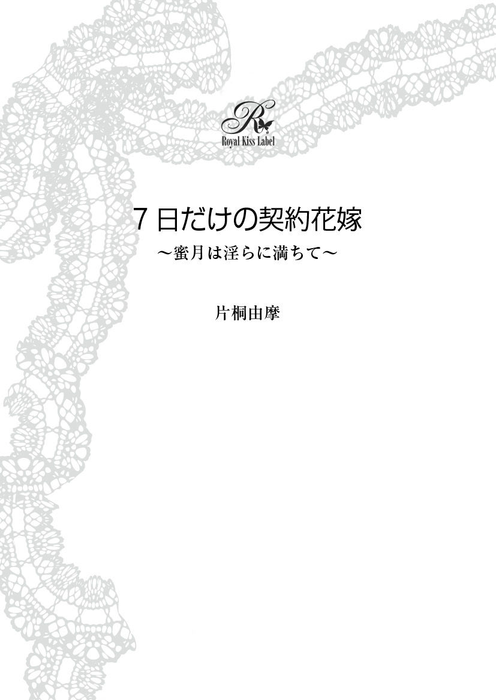

| 7日だけの契約花嫁～蜜月は淫らに満ちて～ (ロイヤルキスノベルス) | |
| 片桐由摩 | |
| ジュリアンパブリッシング (2019) | |

この物語はフィクションであり、実在の人物・団体・事件とは、いっさい関係ありません。
エルヴィラ。
もし君のことを突然さらったら、君は怒るだろうか、泣くだろうか。
もし君のことを強引に奪ったら、俺のことを恨むだろうか。
でもどうかエルヴィラ、これだけは信じて欲しい。
あの時から俺はずっと君のことが大切だった。
君のことを守ってあげたくて、君のことを幸せにしたくて───この世界で君が一番大切で、だから俺は決めたんだ。
君に、逢いに行くって。
「......エルヴィラ。これ......あげる」
「クリス？」
仕立てのいい絹のシャツを身につけた十歳ほどの少年が、そっと少女の手を取った。
森の中の秘密の花園。
少女はそこでその少年に出逢った。
少年は癖のない黒い髪に、水色にも銀色にも灰色にも見える瞳。
少女は 僅 かにピンクがかった蜂蜜色の髪に、美しい 菫 色の瞳。
そこは二人の秘密の場所で、秘密の時間だった。
待ち合わせているわけでもないのに、不思議と少女がそこで花を 摘 んでいるとその少年が現れる。
そうして二人で夕暮れ近くまで花を摘み、 冠 を編む。
───少なくとも、昨日まではそうだった。
「......指輪？」
少女はその小さな袋を開いて驚いた。
小粒ではあるけれど、おもちゃなどではない本物の宝石だ。
「クリス、これ......どうしたの？ こんな......高価な......」
「盗んだとか、そういうんじゃないよ。ただ、急に決まったから母上から...... 譲 っていただいたものではあるけど......」
「急？」
「あ......っ」
少女が問い返すと、少年は困惑したように唇を噛んだ。
そしてその後、優しさと寂しさの入り交じった 眼 差 しで少女をじっと 凝 視 めた。
「エルヴィラにあげるために、譲ってもらったんだ。どうしてもそれを渡したかったから」
「でも......」
少女はその薄紫の宝石を眺めた。
幼いながらも、少年が何故この色の石を選んだのかは理解出来た。
少女の美しい菫色の瞳と───同じ色なのだ。
「...... 要 らなかったら、捨てちゃってもいいけど......でも、出来れば大事にして欲しい」
「クリス!? どうしたの？ 今日......おかしい......」
「エルヴィラ......」
少年が、少女の手をぎゅっと握り締めた。
「クリス......？」
少女が、おそるおそる名を呼んだ。
目の前の少年の全身から、濃密な別離の気配が漂っていた。
「あ、逢えなくなるわけじゃ......ないから、もう二度と逢えないとかじゃないから」
まるで自分に言い聞かせるように少年は震える声でそう言った。
灰銀色のその瞳にはうっすら涙が 滲 んでいる。
「......君が焼いてくれたあのケーキ、とっても 美 味 しかった」
「え......」
「花冠も......もう、 暫 く......一緒に作れなくなるけど......」
「クリス!? 何 処 に行くの？」
「......ちょっとだけ、遠いところ」
「遠い？ じゃぁやっぱり......」
「違う！」
少年は少女の肩をきつく掴んだ。
未熟で、だからこそ真っ直ぐな情熱を秘めた少女への想い。
少女がそれに気付いたか、気付かなかったか。
「最後じゃない。絶対に最後なんかじゃ......ない」
「クリス......」
「エルヴィラ。これをあげるから僕のお嫁さんに......───なって」
１日目
「エルヴィラ様？ もしかしてご気分が優れないのですか？」
「え？ あ......」
優しく肩を揺すられて、エルヴィラは 瞼 を開いた。
「ごめんなさい、大丈夫です。身支度を終えて式まで少し休むつもりでソファに座ったら、うたた寝してしまったみたいで......」
「無理もありませんわ、今日は夜明け前からお支度が始まりましたし、昨夜だって夜遅くまでお式の説明や準備。城に着いてから 殆 どお休みになっていらっしゃらないでしょう？」
「......そうでしたね」
エルヴィラは小さく笑み、まるで他人事のような返事をした。
「それで、あの......エルヴィラ様......実は......」
「......どうか？」
女官が言いにくそうに 俯 いたのを見て、エルヴィラの中に大きな不安が 過 る。
「お式の前に......一度、花嫁の顔を見たいと......国王様が 仰 っておりまして......」
「あ......っ」
エルヴィラと、その女官の顔が同時にさっと曇った。
「だ、大丈夫ですわ！ お式の前ですし、本当に顔を見るだけだと......」
その言葉が徐々に尻すぼみになってゆき、最後には女官は顔を背けた。
「も、もうすぐ......こちらに見えるかと思います......」
そう告げた女官の目には恐怖と同情しかない。
───こんな日なのに。
エルヴィラは 自虐的 な笑いを浮かべそうになった。
「で、では......私達はこれで失礼いたします」
身支度を整えてくれた使用人達がぞろぞろと部屋を出て行く。ドアが閉まった後、エルヴィラは鏡の中の自分を凝視めて小さく溜息をついた。
純白の絹一面に銀糸の 刺繍 が施されたドレス。ぐっと開いた胸元には大粒の真珠が何連も巻かれて鈍い真珠色の光沢を放っている。銀細工の髪飾りからはたっぷりとしたオーガンジーのヴェールが床まで広がり、彼女のほんのりピンクがかった金髪をより一層引き立たせていた。
今日は彼女───エルヴィラ・カスタニエの結婚式だった。
けれどエルヴィラの表情は、とてもそんな晴れやかなものではない。おそらく女の子の人生の一大事である結婚式の日なのに、重苦しい表情で真っ白な花嫁衣装に身を包んだ自分を見ている。
「............」
エルヴィラはまた小さく溜息をつき、椅子から立ち上がる。そして窓際に歩いていき、庭に続くガラスの扉を開けた。
何処からか話し声が聞こえてくる。
「全く、これで一体何度目の結婚式だ？」
「何人目だっけかなぁ、もう一人二人三人......今度の娘で十人目か？」
「そんなもんか？ もうちょっと多い気がするんだが」
エルヴィラは息を殺し、庭師らしい男達ののんびりとした、けれど 憐 れむようなその声に耳を傾ける。
「今度は何年続くかねぇ」
「どうなるかねぇ。......そう言えば、この間、城下の酒場でちらっと小耳に挟んだんだが辺境の方でエグモント様を討とうって動きがあるとかないとか」
「そんなのはもう何度も聞いてるよ。でも結局見つかって首をさらされちまう。どうせ今度のそいつらだって失敗するに決まってるさ」
そんなことを話しながら、男達が遠ざかってゆく。
「......いよいよ私は......そんな男の妻になるのね......」
そう口にしたエルヴィラの表情が強張った。
今日、彼女の夫となる相手は、このロワルシュ王国の王エグモント。
悪評しかない男だった。
前王を 謀 反 という形で退け、王座に 就 いたエグモントは、自分の欲望のためだけに生きている。エグモントが王になってから三倍以上に跳ね上がった税金のせいで国民は苦しんでいるというのに、本人は 豪奢 な宮殿で 贅沢三昧 の暮らしをしている。
更に若い女に目がなく、妻だけでは飽きたらずに目についた娘を女官として宮廷に召し抱えてしまう。彼女達の仕事はただ一つ─── 夜 伽 だけだ。
エルヴィラは、そんなエグモントの重税に耐えきれず、没落の 一 途 を辿る小さな子爵家の一人娘だった。
そして今日───そんなエグモントの十三番目の妻となる。
歳は十八歳。
淡い菫色の瞳が印象的な、可憐な少女だった。
今までエグモントの目に留まらなかったのは、彼女が大人しい性格で社交界のパーティーというものに一切顔を出さなかったせいだろう。
またおそらく、両親もたった一人の愛娘をエグモントに奪われないようにと出来るだけエルヴィラの存在を隠していたからに違いない。
事実、エグモントがエルヴィラのことを聞きつけたのは悪い意味での偶然だった。
一ヶ月前───エルヴィラの母が金策のために自分の首飾りを売ろうと宝石商を家に招いた。その時に見かけたエルヴィラのことを、その宝石商がエグモントに話してしまったのだ。
丁度、エグモントが前の妻を離縁したばかりだったのもよくないタイミングだった。
すぐに王室からエルヴィラ宛に書状が届き、それでも両親はエルヴィラの身を案じ、修道院に逃げ込むことを勧めてくれた。
けれど。
「私が......結婚......」
エルヴィラは晴れ渡った青空を見上げた。小さな鳥が飛んでゆく。
その鳥が、 羨 ましいと思った。自分は今日からもう、永遠に開かない 鳥籠 に入るのだ。
「......あの子は、今頃どうしてるのかしら」
エルヴィラは呟き、部屋の中に戻るとドレッサーの引き出しを少しだけ開けた。そこには、金色の鎖を通した小さなビロードの袋が入っている。
「クリス......─── 貴方 は今頃、元気でいる？」
エルヴィラが懐かしそうに目を細めた。
「もう暫くクリスの夢なんて見なかったのに......まさか、こんな日にあの時の夢を見るなんてね」
エルヴィラは先刻の夢を思い出し、小さく笑む。そして袋の中から指輪を取り出し、はめてみる。あの時のエルヴィラに大き過ぎた指輪は、今、丁度まるで彼女にあつらえたようにぴったりになった。
もう、ずっとずっと昔の思い出だ。
分かっているのは『クリス』という名前だけ。
親しくなった頃に、彼はこの指輪を残して突然消えてしまった。
「最後じゃないって貴方は言ったけど......もう、きっと逢うことは出来ないと思うわ」
エルヴィラは指輪をまたそっと抜き、袋に戻して引き出しにしまう。
「私は今日から......───囚われの身」
エルヴィラが大きく溜息をついた時だった。
「いるか？」
「!? 」
荒々しくドアが開いて、一人の大柄な男が入ってきた。
「エ、エグモント様......」
エルヴィラは慌てて小走りで近寄り、深く頭を下げる。
「ああ、そんな 挨拶 などよいよい。お前は今日からこの 儂 の妻となるのだぞ？」
気遣うような言葉ではあったけれど、その声音にも表情にも優しさは 微 塵 も感じられない。それでもエルヴィラは必死にぎこちなく笑んでみせた。
笑うだけで───精一杯だった。
エグモント・ザイナス・ロワルシュ。
今、エルヴィラの目の前で冷酷な笑みを浮かべている男が、この国の王だった。
がっしりとした 体 躯 に、 酷 薄 さが浮き出たきつい面差し。他人を見る表情には一切の慈愛も敬意もない。
前王を自ら討ったという剣の腕前は相当なものらしかったが、むしろ今は戦での活躍よりも城での横暴な振る舞いにその剣技は発揮されているようだった。ほんの僅かの不興を買っただけで、エグモントの 凶刃 の犠牲になった臣下や女官も少なくないと聞く。
「名は......確かエルヴィラ、といったか？」
「......はい」
その程度の、興味なのだ。名前など、意味はない。この男にとって意味があるのは若い女ということだけ。
エルヴィラは頭を下げるふりをして、エグモントの値踏みするような視線から逃げた。
「今までよく隠れていたな」
「きゃぁぁ!? 」
エグモントがエルヴィラの 顎 をきつくとらえた。
吐息と共に肉が腐ったようなきつい口臭が吹きつけられ、エルヴィラは不快さを顔に出さないよう、必死にならなければいけなかった。
「念のため、聞いておく。......お前は間違いなく 生娘 だな？」
「......!? は、はい......」
それはとても、一国の主がこれから 娶 る女性に向ける言葉とは思えなかった。
「男はいないな？」
エグモントの指が顎の骨にきつく食い込み、鈍い痛みが走り抜ける。
「......おり、ま......せん......」
「隠し立てすると容赦はしないぞ。好いた男の首が広場に並ぶのは嫌だろう？」
「ほ、本当に......おりません、そのような......」
「まぁあの宝石商によるとかなり内気で社交嫌いらしいな。お前ほどの娘が着飾って踊っていたら、他の男が放ってはおかぬだろう」
エグモントの顔が更に近付く。
「いいか？ 逃げ出そうなどと思ってはならぬ。......その時にはお前の両親がどうなるか分かっているな？」
「そのような......真似は......いたしません......」
「お前の前に花嫁になるはずだった女がな、そうだったのだ。惚れた男がいたとかで、式の前日に......───逃げようとしてな」
エグモントの冷たく暗い灰色の瞳に、更に 陰惨 な光が宿った。
「新しい猟犬を買ったばかりだったのでな、男は生きたままその餌にした」
「......!? 」
「女は二度と走れぬように足を傷めつけ 腱 を切り、何処ぞの娼館に放り込んだ。まだ生きてはいるらしいな」
「......っ」
声が出なかった。足が 竦 み、恐ろしい言葉の数々に気が遠くなりそうだった。
「まぁそう怯えるな、エルヴィラよ」
エグモントが不気味に優しい声音になり、エルヴィラの首筋を撫で───そして最後に胸の 膨 らみをきつく掴んだ。
「......っぅ!? 」
鋭い痛み、恐怖、不快感、色々なものがごちゃ混ぜになってエルヴィラは反射的にエグモントを突き飛ばしそうになった。それをすんでのところで耐え、強く唇を噛む。
もう、ぎこちない笑みを作ることすら無理だった。
「今夜が楽しみだ。儂がお前を一人前の女にしてやるからな」
「!? 」
エグモントが 蔑 むように笑んだ後、手を離した。
「では儂は戻る。礼拝堂で会おう」
「......は、い......」
そう答えたエルヴィラの声は弱々しくかすれ、殆ど声になっていなかった。
エグモントは豪奢なマントを 翻 し、部屋から出て行った。
「......っぅ......」
ドアが閉じる音が聞こえ、再び部屋に一人になったその瞬間───エルヴィラの瞳に涙が滲んだ。
「......っぅ......、私は......あんな、あんな......」
エルヴィラは窓を見やり、そしてすぐに力なく首を振った。
逃げられはしない。逃げたら両親に迷惑がかかる。
「......逃げられないなら、死......」
一瞬、そんな最後の手段まで頭に思い浮かぶ。それほどにエルヴィラは怯え、そして式の寸前だというのに 憔悴 しきっていた。
「......駄目だわ。それでもきっと......お父様達に迷惑がかかってしまうものね......」
エルヴィラは、さっき開け放したままだった庭へのガラス扉を眺めた。
「......お 伽話 なら、王子様が助けに来てくれたりするのにね」
諦めきった笑みを浮かべたその時だった。
「お前が今度の花嫁だな？」
突然、庭から細剣を携えた一人の男が入ってきた。
「きゃぁ......っう？」
「騒ぐな。それ以上叫んだらお前を殺す」
「......っ!? 」
男は素早くエルヴィラの口を 掌 で塞ぎ、更に細剣をエルヴィラに向けた。
薄汚れた灰色のフードをすっぽりと 被 っているせいで、顔は殆ど見えない。ただ声や、僅かに 覗 く口元や形のいい 鼻梁 を見るに、青年のようだった。
「そのドレス......お前がエグモントの花嫁になるはずだった女だな？」
口を押さえられているエルヴィラは、必死に何度も首を振った。
「俺と一緒に来てもらおう。命は取らないから安心するがいい」
「......!? 」
「もっとも、無理に 抗 わなければの話だが」
男が、細剣の鋭い切っ先をエルヴィラの喉に近付ける。
貴方は何者ですか？
何故、私を───。
尋 ねようとしても、口を塞がれているせいだけでなく、恐怖で声が出ない。膝はがくがくと震え、背中は冷や汗であっという間に湿ってゆく。
「その話は後だ、エルヴィラ」
「......っ!? 」
エルヴィラ、と。
見知らぬ男が自分の名を呼んだその瞬間、何故か心の中がざわめいた。
恐怖ではない、何か。
以前に、こんなふうに名前を呼ばれたことがある気がしたのだ。
「私の......名前、どうして......」
「さぁ来い」
男は、その問いには答えなかった。代わりにやっと口を封じていた手を離し、持っていた古いマントをエルヴィラの頭から被せて強く腕を引く。
「待っ......っ、私は......っ」
「もう一度言うが、悲鳴は上げるなよ？ 誰かがお前を助けに来る前にこの剣の先が肌に食い込むぞ」
「あ......っ」
「来るんだ」
男がエルヴィラの腕をきつく掴んで歩き出した時、不意にフードがずれて横顔が覗く。
「......!? 」
その瞳の色を見た瞬間、エルヴィラは今までとは別の意味で言葉を失った。
光の加減で、灰色にも、銀色にも、水色にも見える美しい瞳の色。
自分は───そんな瞳の少年を───知っている。
「ま、待って......！」
エルヴィラは慌ててドレッサーの引き出しの中からビロードの袋を掴んだ。そして強引に引っ張られたわけでもなく、自分の意思で───男のあとについて窓から庭に出た。
「ここから馬車まで絶対に 喋 るな」
男が慎重に周囲をうかがいながら足早に歩き出す。
中庭や回廊の方からは大勢が話す気配がしていたが、この辺りは丁度、王妃の宮となっており女官と王以外近付けないため、人影はない。
エルヴィラは息を 潜 めるようにして、マントを目深に被り歩き続ける。
この男が一体誰なのか分からない。もしかしたら身代金目当ての誘拐犯かも知れない。
でも、それでも逃げ出さず、言われたように声を上げず黙って歩き続けるのは、この男の瞳の色のせいだ。
この色の瞳を持つ人は、たった一人しか知らない。
まさか。
まさか、と。
緊張で心臓が押し潰されそうだった。
同時に、偶然かも知れない、期待し過ぎてはいけないという否定も浮かぶ。
「ここから抜ける」
「え？」
男が裏庭の隅のその古い納屋のドアを開けた時、エルヴィラは全く意味が分からなかった。けれど男は 総 て知り尽くしたように納屋の奥に歩み寄り、地下貯蔵庫と思われる古い木の蓋を押し開けた。
「この先は通路になっていて、歩いていけば城壁横の教会に出る。君が先に降りて」
「つ、通路!? 」
「しっ！ 早く！」
男が背後を見やる。
「エルヴィラ、早く！」
「は、はい......！」
勢いに押され、エルヴィラは慌ててその石の階段を降り始める。湿った 黴 の臭いが満ちていたけれど、不思議と不安は徐々に薄らいでゆく。
もう、部屋での脅すような声ではなかった。『君』と、まるでエルヴィラを案じ、励ますように彼はそう言った。
「急いで」
男が小さな手提げランプに火を 灯 す。ぽうっと周囲が明るくはなったけれど、丁度逆光のようになってやはり男の顔はよく見えなかった。
「さぁ、逃げよう、エルヴィラ！」
男がエルヴィラの手を強く握った。
その手は───何故かとても頼もしく、そしてあたたかかった。
「───さて、と」
男はベッドに腰掛けた。
「ごめんね、妙なことに巻き込んで」
「あ、あの......？」
思いがけず優しい声でそう告げられ、エルヴィラは困惑した。自分が置かれている状況が全く分からなかった。
「でもまぁ、あの抜け道が今でもちゃんと使えるみたいでよかったよ。壊れてたり封鎖されてたらどうしようかと思った」
城壁 側 の古い教会には、 既 に目隠しされた馬車が待ち構えていた。エルヴィラは有無を言わさず中に押し込められ、そして連れてこられたのは───この森の中の古い小さな城。
まず目に飛び込んできたのは、美しい庭園だった。
色とりどりの花が咲き乱れるその庭の中央には 苔 生 した石畳の小道があり、更にその奥には城としてはかなり小振りな、けれど館というには広過ぎる、そんな石造りの建物が見えていた。
中は、豪華さはないものの上品にまとめられ、可憐な花模様と白い家具で 調 えられたこの部屋も 荒 んだ様子は全くない。
ただ、不思議なことに使用人など他の者の気配は全く感じなかったけれど。
「貴方は......一体何者なのですか？ 私をさらって......どうするつもりですか？」
「どうするつもり、か」
男は 嘲笑 のような声音でそう口にして、 纏 っていたフードを脱ぎ捨てた。
「......っ？」
エルヴィラは、その青年の姿を見た瞬間、言葉を失った。
毛羽だったフードは人目をごまかすためのものだったのか、彼が身につけているのは濃い灰色に銀糸の刺繍が施された上等な仕立ての上着だった。黒革のブーツはぴかぴかに 磨 き上げられ、履き口には銀細工の飾りがついている。 艶 を帯びた闇色の髪に、服の上からでも分かるしなやかな筋肉に覆われた身体。
けれど何より、美しい灰銀色の瞳に見覚えがあり過ぎた。
「......クリス......？」
エルヴィラは小さくその名を口にした。
青年が微笑む。
「ばれちゃった？」
青年が少し 悪戯 っぽく目を細めた。
「う、うそ......まさか......本当......に......？」
逃げ出す時にこの瞳が見えて、言いようのない 安 堵 感があったのは確かだった。
けれど城から出た後も青年は馬車の中には乗り込まず、追っ手の有無を確かめるかのようにすぐ側を馬で走り続けていたため、問うタイミングなどなかったのだ。
「......あの、クリス？ 森で......遊んだ......」
エルヴィラは、逃げ出す時になくさないように首にかけたビロードの袋をきつく掴む。
「そうだよ。俺だよ、エルヴィラ」
「......う、そ......」
エルヴィラは袋を握り締めたまま、小さく後ずさる。
心の奥に、幼い日々の時間が浮かび上がってくる。
『......こんにちは』
少しぎこちない、ありふれた挨拶。
それがその幼い少年と交わした最初の一言だった。
カスタニエの屋敷から少し離れたところに、小さな森がある。
森の中央には美しい花畑があり、そこで花冠を作るのがエルヴィラの日課だったが、決して多くはないカスタニエ家の領の一部であることから、近付く者は 滅 多 にいなかった。
『......こんにちは。初めまして』
同い年くらいの男の子と直接言葉を交わすのは初めてで、とても恥ずかしかったことを今でもはっきり覚えている。
その男の子が、裕福な家の子供だということはすぐに分かった。丁寧に梳られた艶やかな黒髪や、汚れ一つない上質な絹のシャツは、時々見かける村の子供達とは全く違っていた。
彼は、一言挨拶しただけで暫く何も話さなかった。
エルヴィラも困ってしまって、作りかけの花冠を持ったままずっと俯いていた。
『......あの、僕の名前はクリス。怪しい奴じゃないよ』
まだ緊張しつつもそう告げたクリス。
角度によって水色にも灰色にも銀色にも見える美しい瞳をしていて、凝視められると吸い込まれてしまいそうだった。
その瞳の持ち主が、今、自分の目の前に立っている。
「覚えていてくれて嬉しいよ、エルヴィラ」
「何を......何を言ってるの、クリス......」
にっこりと微笑まれ、エルヴィラは突然連れ去られたという恐怖こそ 和 らいだものの、今度は違う恐怖が込み上げてくる。
「今日、エグモントの城に来たということは......総て分かっているのでしょう？ それとも単なる......偶然？」
「偶然なんかじゃないよ」
クリスが余裕たっぷりの笑みで一歩だけエルヴィラに近付く。
「今日、君があの男と結婚するって聞いたからだ」
「......そうよ」
エルヴィラは目を伏せ、小さくそう 頷 くことしか出来なかった。
胸の奥に、吐き出したい辛さもあった。
けれどエグモントとの婚姻は、エルヴィラ自身が最終的に望んだことだったのだ。
もう何も言うまい、と。
ただ黙って耐えよう、と。
そう決めたことなのだ。
「......クリス。お願い、今すぐ私を......城に帰して」
「エルヴィラ？」
クリスの灰銀色の瞳が、不意に冷たくなった気がしてエルヴィラは 躯 を強張らせる。
「君......まさか、本気でエグモントの妻になろうと思ってるわけじゃないよね？」
「......───思ってるわ」
エルヴィラは泣きたい気持ちで、そしてそれを必死に押し隠して答えた。
自分の家───カスタニエ家は、 困窮 している。
このままではもうすぐ破産し、爵位を返上することになってしまうのは明らかだ。けれどエグモントの妻となれば、実家に援助することが出来るだろう。そうすれば、両親もあの大好きな花畑のある森も、守ることが出来る。
「嘘だね」
「......!? 」
僅かに蔑むような眼差しで、クリスがつかつかとエルヴィラに歩み寄ってきた。
「きゃ......!? 」
そして突然、きつくエルヴィラを抱き竦める。
「エグモントの悪評を知らない奴なんていない。あいつの愚かな非情さ、強欲さは、子供だって分かってる。エグモントが何人も妻を替えてきたこと、その他にも手当たり次第に娘達を 嬲 りものにしてること───まさかいくら純朴で世間知らずな君だって、知ってるだろう？」
「し......知ってるわ、クリス......離して......」
エルヴィラは顔を背ける。
初めて言葉を交わした時にはエルヴィラの方が少しだけ背が高く、緊張と照れが混じった顔で自分を見上げるその姿は、まるで弟のように思えたのだ。
それなのに、今はどうだろう。
背は自分よりずっと高くなり、肩幅も全然違って、そして自分を抱き締める腕が怖いほどに力強くて───振りほどけない。
「それともエルヴィラ、君は地位が目当てであのエグモントの妻になろうとしてるの？ 結婚すれば一国の王妃だからね、少なくともあの男に気に入られているうちは」
「......っ」
クリスは、自分の家の状態など知らない。そして知られたくもない。
エルヴィラは溜息の代わりにゆっくりと一度瞬き、答えた。
「......そうよ。お、女の子の......夢だわ、王妃......なんて」
答えた声が、少し震えてしまった気がしてエルヴィラは深く俯く。
「本当に？ 本当に君は王妃になんてなりたいの？ 贅沢なドレスを身に纏い、 沢山 の人間にかしずかれて我が 儘 三昧をしたいの？」
クリスが 詰問 するようにエルヴィラの顎をとらえ、上向かせる。
「あ......っ」
大好きだった灰銀色の瞳に真っ直ぐに 射 貫 かれ、エルヴィラは何も言えなくなった。
「エルヴィラ、俺は君から離れた後も......ずっと君のことを考え続けてたよ」
「クリス......!? 」
澄んだ菫色の瞳を見開いたエルヴィラの、ドレスの背中のボタンに指が触れる。
「あの時、俺はどうしても急にこの村を離れなければいけなくて......」
熱っぽい視線でエルヴィラを凝視めながら、クリスがボタンを巧みに外し始める。
「クリス!? 何するの......やめて！」
「君が今夜、エグモントとするはずだった行為だよ」
「な......っ」
心臓が大きく跳ねる。
怖さと、恥ずかしさと、屈辱感が絡まり合って込み上げてくる。
「馬鹿なこと......言わないで、クリス。冗談は......やめて......」
「冗談じゃない」
エルヴィラはありったけの力でもがいた。
けれど腰を強く掴まれてしまっていて、思うように動けない。
「地位が目当てで結婚するんだろう？ だったら愛なんてないわけだ」
「そ、それは......っ」
「なら......───娼婦も同然だ。金で彼女達は男に足を開く、君は地位と引き替えにエグモントに足を開こうとしていた。だったら金さえ払えば俺が君を抱いてもいいだろ？ ああ、だったら金貨は先払いの方がいいかな？」
「そんなこと......言わないで......っ！」
涙が滲んでくる。何故こんな冷たい言葉を浴びせられなければいけないのだろう。
クリスは、自分のことをずっと考えていたと───さっきはそう言ったのに。
「おね......がい、クリス......っ、もう本当に......やめて、私を城へ......」
「それは絶対に出来ない」
「きゃぁっ!? 」
突然、荒っぽく背後のベッドに押し倒されてエルヴィラの躯が竦み上がる。
「や......っ」
声が巧く出ない、躯が動かせない。クリスはそんなエルヴィラの上に覆い被さり、キスぎりぎりの距離まで唇を近付ける。
「エルヴィラ。この唇......まだエグモントに触れさせてないよね？」
「そんなこと......してな......っ」
エルヴィラはやっと動かせるようになった手足をばたつかせながら答える。
「そう、安心したよ」
「......っぁ!? 」
クリスの唇が重なってきて、エルヴィラは反射的にきつく 瞼 を閉じる。さらりと乾いて、ほんの少し冷たい唇だった。 それがゆっくりと何度も押しつけられ、同時に長い指がドレスの背中の残っているボタンを荒っぽく外してしまう。
「クリス、お願い、駄目......っ」
それは、エルヴィラにとって初めての口付けだった。
エグモントとの婚約が決まった時、思ったことがある。
花嫁、王妃とは名ばかりの恐ろしい鳥籠に入る自分は、きっともう誰かを愛することなどない。愛されることもない。
口付けも、男性に抱かれることも総て 隷属 の儀式でしかなく、自分は誰かに心ときめかせることなど永遠にないのだろう───そう思ったのだ。
けれど今。
心が震えてしまった。
たった一度の口づけで、何かが 溢 れそうになってしまった。
「エルヴィラ。......さっき 侮辱 するようなことを口にしたのは謝るよ。君があんなことを言うから......つい 苛 立 ってしまって」
クリスが何度も触れるだけのキスを繰り返しながら、甘く優しく囁く。
「ひどいことは......しないから」
「そんなこと......言ってるんじゃないの、私は......もう、エグモントの妻になることが決まっていて......それに、貴方とは......再会したばかりで......」
「そう、再会したんだよ。......俺達は」
クリスの熱い吐息が唇に幾度も触れ、心まで 蕩 けてゆく気がした。
早くこの手を押し退けてこのベッドから逃げ出さなければいけないのに、頭ではちゃんと分かっているのに躯がそうは動かない。
「君のことが好きなんだ、エルヴィラ」
「......!? 」
「友情じゃない。一人の女性として君を愛して、そして抱きたいと思っている。俺だけのものにしたいと......───思ってる」
「何......言って......」
「俺達が一緒に過ごした時間はそう多くはないけど......君は優しくて、内気で、穏やかな女の子だった。......そんな君が王妃になって贅沢したいなんて思うはずない」
「む、昔のことよ、それは......大人になれば変わ......」
「エルヴィラ、これは口にしたくはなかったけど......君の家のことは知ってる」
ずっと自信ありげだったクリスの表情が、申し訳なさげに 翳 った。
「!? 」
「 大方 、君は爵位を守ろうとして身売りするつもりなんだろ？」
「ち......ちが......っ、そんなこと......」
ちゃんと否定しなければいけないのに、言葉が唇から巧く出てきてくれない。エルヴィラはただ力なく首を振った。何度も、何度も。
「エルヴィラ......」
同情するようなそのクリスの声が、更にエルヴィラを辛くさせた。
本音など、決まっている。
女性を慰みものにするような国王など許されるべきではないと思うし、指一本触れられたくはない。
けれど、今の自分に出来ることはその国王に嫁いで傾きかけた家を守ることなのだ。
涙が溢れそうになってきつく目を閉じると、また幼いクリスとの思い出が 蘇 ってくる。
彼に、花冠の編み方を教えた。
初めて焼いたパウンドケーキを贈りもした。
そして───あの日。
『エルヴィラ。これをあげるから僕のお嫁さんに......───なって』
クリスがくれたのは、まるでエルヴィラの瞳の色のような淡い紫のアメジストの指輪。
『駄目？ エルヴィラは僕のお嫁さんになりたくない？』
『......な、なりたい......』
『本当!? よかった！ じゃぁ僕、絶対に迎えに来るから！ 待ってて！ 僕、誰よりも強くなってエルヴィラを守ってあげる！』
そして、クリスは去った。
幼いクリスとの 煌 めく時間は胸の奥の宝箱に大切にしまわれて、それからのエルヴィラの支えになった。
クリスが現れなくなってからも、エルヴィラは毎日花園に向かった。もしかしたら今日戻ってくるかも知れない、そう信じて。
けれど一年が過ぎ、二年が過ぎ、エルヴィラは諦めを覚えてしまったのだ。
嘘をついたとは思っていない。けれど何かの事情で去ったのなら、もう戻ってくることは出来ないのではないだろうか。
待っていたわけでは───ない。
決して、自分はクリスを待っていたわけではないのだ。
エルヴィラは自分にそう言い聞かせる。
「......嫌よ」
「エルヴィラ？」
「クリス......お願い、私を城へ......連れていって......帰し......て......」
菫色の瞳に涙を浮かべ、エルヴィラは哀願した。ここで抱かれて純潔を失ってしまったら、自分にもクリスにも恐ろしい罰が下るに違いないのだ。
城でのあのエグモントの言葉を思い出し、ぞっとする。
『新しい猟犬を買ったばかりだったのでな、男は生きたままその餌にした』
クリスの突然の情熱的な告白は、不幸にもエルヴィラを一気に現実に引き戻してしまったのだった。
まだ、間に合う。
多少の 咎 めはあるかも知れないけれど、自分が無事に戻り、そしてクリスが捕まりさえしなければ日延べしてでも式は 執 り行われるだろう。
「私は......エグモントの妻になるの......」
「そんなこと......許さないって言ってるだろ」
「......きゃ!? 」
クリスが冷たく言い、ヴェールを 剥 ぎ取る。そして丁寧に編み上げられていた髪のピンが抜かれると、エルヴィラの、ほんのりピンクがかった蜂蜜色の豊かな髪がふわりと 零 れて広がった。
「ああ、うん......やっぱりほどいてる方がいいよ、髪」
クリスはそんなエルヴィラの髪に指を絡め、何度も口付ける。
「......っぁ......」
「昔みたいだ。俺......エルヴィラのこの髪が、好きだった。......キラキラして、柔らかそうで、ずっと触れてみたいって......思ってた」
「やめ......っ、あ......っ!? 」
クリスの長い指が、ドレスを剥ぎ取るために背中に触れた。
その瞬間、エルヴィラは今まで感じたことのなかった甘いくすぐったさに、思わず声を 洩 らしてしまう。
「可愛い声。......そそるなぁ」
「ク、クリス、や......っ」
ドレスの胸元をコルセットと一緒に大きく引き下ろされ、柔らかな白い二つの膨らみが 露 になる。クリスの指先が、そっとその先の淡紅色の隆起に押し当てられた。
「っあ、あぁ......っ!? 」
ずきん、と。
また初めて味わう不思議な 疼痛 がそこから湧き上がり、エルヴィラは思わずきつく目を閉じる。
「もしかして......感じやすい？」
「い、や......っ、誰か......助け......っ、んん、っあ......!? 」
「誰も助けなんて来ないよ」
再び唇が重なり、クリスの熱い舌が入り込んでくる。同時に胸の先を指先でそっとつままれ、エルヴィラはびくんと躯を強張らせた。
「......っぁ......ふ、んん......っ」
クリスの柔らかい舌が口の中をゆっくりと這い回る。唇の内側や整った歯列を舐め、エルヴィラの舌をなぞりながら、吐息まで飲み込むように深く唇を重ねてくる。
「は......あふ......っ、やめ、おねが......っ」
どうしていいのか分からず、エルヴィラは何度も手を 彷徨 わせた。今すぐ逃げ出さなければいけないのに、躯に力が入らない。
「ふぁ......っ、あ、ぁ......っはふ......っ」
激しく甘い口付けを受け止めながら、エルヴィラは心の中ではまだ自分に起こったことが信じられなかった。
「んんっあ......!? 」
すっかり固く尖った胸の先に軽く爪を立てられ、大きく躯を震わせる。
「あ、ふ......っん......っは、っん......っん......あ......っ」
重なっている唇の隙間から洩れる自分の声が恥ずかしくて仕方ないのに、クリスの舌がずっと口の中をなぞっているせいで喘ぎが溢れてしまう。
「......───エルヴィラ」
クリスがするり、とドレスの裾がたくし上げる。ドレスとお揃いの純白のレースのガーターベルトに、長い指が触れる。
「......あ......っ」
エルヴィラは続く行為を悟って、反射的に逃げを打った。
けれどクリスはそんなエルヴィラの細い手首を掴み、動きを封じてしまう。そして絹のストッキングの上から太腿をそっとなぞり、その指を足のつけ根へと這わせてゆく。
「あぁ......っ!? 」
クリスの指が足の奥に触れた瞬間。
躯に電流のような快感が走り抜けて、エルヴィラの白い太腿が大きく跳ねた。
「エルヴィラ。......ここ、もう湿ってる」
「......!? 」
ほんの少しからかうような笑みを浮かべて、クリスがエルヴィラを凝視めた。
「気持ちよかったんだ？ 逃げるんじゃ......なかったんだ？」
「あ、っあぁ......っ！」
薄い布の上からそこを指先でなぞられ、エルヴィラは大きく喘いだ。
逃げよう、と心では思うのに躯が言うことを聞いてくれない。触れられた部分が熱くて、ずきずきして、息苦しい。
「エルヴィラ。俺は君を誰にも奪われたくないんだ」
「クリス......っ」
「こんな形での再会だけど、決して嘘じゃないんだ。いつか......いつか絶対に君を迎えに行くって言ったろ？」
「やめ......そんなこと......言わないで......」
「俺があげたあの指輪......もう捨てちゃったかな」
「......！」
エルヴィラはクリスを凝視めた。
まさか今、この胸元にかかった小さな袋の中身があの指輪であるなど───彼は思いもよらないのだろう。
この指輪を捨てられないくらいには、クリスのことがずっと気になっていた。
でも今は、流されてはいけないのだ。
もうあんなものはない、とそう告げればクリスは自分に失望して、解放してくれるだろうか。
「......なくして、しまったわ。......ごめんなさい」
エルヴィラが 躊躇 いがちにそう告げると、クリスは一瞬、ひどく寂しげな表情になる。
けれどすぐに余裕たっぷりのそれに戻り、エルヴィラを見下ろした。
「まぁそうだよね。子供のつまらないプレゼントだし」
「あ......っ」
「でも、あの時から全然俺の気持ちは変わってない。絶対にエグモントなんかに君を渡さない。だから......奪われる前に、君を奪うよ」
「クリス......っ！ それが......どういう意味か分かってるの？ 見付かったら貴方......殺されてしまうかも知れないのよ？」
「俺のことが嫌いだから抱かれたくない、とは言わないんだね、エルヴィラ」
「!? 」
「俺の心配してくれてるんだ？」
「か......からかわないで......私は......」
「大丈夫、ここは見付からないよ。この城のことを知っている人間はごく僅かだ。それにね、時間稼ぎが出来るよう、犯人らしい奴等が海の方に向かったと噂を流させておいた」
「......海？ 噂......？」
「そう。エグモントの花嫁になるはずだった美しい少女は人買いに目をつけられ城から誘拐されて、異国に売り飛ばされるって筋書き」
「クリス、貴方......」
「 卑怯 かな？ でも俺は、そこまでしても......君が欲しかったんだ。君のこの唇に口付けたくて、君のこの躯に触れたくて......気が狂いそうだった。こんなふうに......ね」
悪戯っぽく笑んだクリスが、ベッドに膝をつきエルヴィラの膝頭を掴む。
「......クリス？ 何を......あ、やぁ......っ!? 」
ぐい、と大きく開かせたエルヴィラの脚の間に顔を埋めたクリスが、下着の上からそこを強く舐め上げた。
「や......あぁん...っ！ やめ......っ、あ、ああ......!? 」
そこが、そんなふうに感じる場所なのだと、エルヴィラはこの瞬間まで知らなかった。
自分でそこを見たこともなかったし、どんなふうになっているかさえよく分からないその場所に、クリスはまるで知り尽くしたように舌を這わせてくる。
「ク、リス......っ、やめ......っ」
「エルヴィラ。......多分、君の躯の方がはるかに正直だよ。下着の上からでも君のここが熱く膨らみ始めているのが......分かる」
そう言ったクリスが、舌先でそこをくすぐるように触れる。
「んん......っあん......っ！ 駄目......そんな、ところ......っ」
「駄目じゃないんだよ、エルヴィラ。ここはね、きっと君の躯の中でも......こうして触れられて、かなり気持ちのいい場所だと思うよ」
「あ......っあ、やぁ......っ！ あぁ......っだ、め......っ」
クリスの言葉通りだった。
そこ、は唇よりも胸よりも強烈な快感を湧き上がらせ、エルヴィラの心を掻き乱してゆく。
男女のこういった 営 みが、こんなにも甘く狂おしいものだと、エルヴィラは想像さえしたことがなかったのだ。
自分の躯が、こんなにも勝手にクリスに応えて 疼 いてしまうなどと───怖くて恥ずかしくて、けれども確かにやめて欲しくない自分がいる。
エグモントに胸を 鷲掴 みにされた時には恐怖と不快さしかなかったのに、今のこの自分の躯は、そして心は、愚かなくらい正直過ぎる。
待っていたわけではない。
クリスを待っていたわけではない。
ただの幼い約束で、果たされることなどないと諦めたはずだった。
「や、......駄目......っ、クリ......ス......っ」
何度も思い出して、そして想像した。
今頃、どんな男の子になっているだろうか。
背は伸びたろうか、剣を習ったりして勇敢に戦ったりしているのだろうか。どんな本を読んで、どんな街に住んで、どんなふうに暮らしているのか、エルヴィラは夢見るように考えていたことを思い出す。
けれど、今日、こうして現れたクリスはエルヴィラの想像よりもはるかに美しく 精悍 な青年になっていた。
「や、め......っ、は......あ、あぁ......っ」
熱い舌先で 執拗 にそこをなぞられ、太腿から爪先まで淫らな疼きが絶え間なく広がってゆく。脚の奥が不自然なほどに熱く痺れて、痛いのか気持ちいいのか分からない。
「あ、っはぅ......っ！ や......っ、あぁん......っ」
そんなふうに薄い布の上からずっと責められているうちに、やがてエルヴィラはもっと深い刺激を求め始めている自分に気付いた。
この、熱い舌が 直 に自分に触れたら───。
「ん、あ......っ！ あ......っ、あぁ......っは、う......っ！」
強く吸い上げられ、ずきんとお腹の下の方が熱く疼いた。奥からとろりと何かが溢れ、下着の内側を更に濡らす。
「......ねぇエルヴィラ？ ......この後、君はどうして欲しい？ このまま布越しに舐めて欲しい？ それとも......脱がせて......欲しい？」
「!? 」
「教えてエルヴィラ。......君が好きなようにしてあげる。だから......ね？」
「っああ......ん......！」
クリスが、布の上からその膨らみを舌先で強くなぞる。
汗ばみ始めた太腿がびくびくと震え、エルヴィラはどうにかその快感に抗おうとした。
けれど。
「あ......っああ......っ！ あぁん......っん、んん......や......っあぁ......っ」
エルヴィラが滲ませた愛液とクリスの唾液で、じっとりと濡れそぼったその布越しに柔らかな舌がゆっくりと這い回る。
敏感なそこは、ほんの僅かに舌先が触れるだけで甘く疼いて、エルヴィラの息がどんどん荒くなってゆく。
「エルヴィラ。......どっちがいい？ ちゃんと俺に教えて？」
笑いの気配を含んだ声でそう問われ、エルヴィラは羞恥にかっと頬を 紅 くした。
「やめ......て、おね......クリス......っ」
「何を言ってるの？ ちゃんと答えないと駄目だよ、エルヴィラ。答えるまで......いじめちゃうよ？」
「あ、ああ......っ！」
太腿を更に押し広げ、エルヴィラの脚をぐっと大きく開いたクリスが、敏感な膨らみを布越しに強く吸い上げた。
「ん......っあ......っ......っあ、ぅ......っ」
総てが、初めてのことだった。
男性の前でこんなに大きく脚を開かされるのも、今まで触れたことのなかった場所を舐められ───こんなにも濃密な快感を得るのも。
「あ......っや、あ......っんん......はう......っ、や......っ、め......っ」
舐められているそれが痛いくらい熱く疼いて、爪先まで震えてしまう。
自分が洩らす声も浅ましくて、エルヴィラは泣き出しそうだった。
「エルヴィラ。......このままでいいの？」
「クリス......っ」
「恥ずかしがることはないんだよ、エルヴィラ。この部屋には今、俺達しかいない。君がどんな言葉を口にしても......俺にしか聞こえないんだから」
「あ......あぁ......っ......」
焦 らすように指先でそこをなぞられ、エルヴィラの太腿がまた大きく震える。
『エルヴィラ、ほら見て。ちゃんと花冠編めたよ』
思い出の宝箱が開く。 眩 しい思い出の光と共に。
一人娘であったエルヴィラは、年の近い遊び相手というものがいなかった。
午前に勉強、午後早くにピアノやダンスの練習、そしてお茶の時間の後に森の花園に遊びに行くのが日課だった。
独りで花を摘み、独りで花冠を編み、たまに持っていった刺繍をしたりする。その繰り返しだった日々に、クリスという異変が訪れた。
見るからに裕福そうなのに、村では一度も見かけたことのない子だった。病気がちな母親に付き添ってきたのだと、彼は寂しげに答えた。
その言葉を聞いた時から、幼いなりに不安だった。
仲良くなった友達が何処かにまた戻っていってしまうのは寂しい。自分の我が儘だと分かっていても。
そして幼いエルヴィラの不安通り、別離は突然に訪れた。
アメジストの指輪と幼い結婚の約束を残して───去った。
「どうしたの、エルヴィラ？ 何も......言ってくれないの？」
クリスが笑んだ。そして再び、エルヴィラの脚の間に指をあてがう。
「......ぅ！」
小さく走り抜けた快感にエルヴィラが身を竦めると、クリスが躯を寄せた。
そして指の先で敏感な膨らみをそっと撫で回しながら、エルヴィラの 耳 朶 をやんわりと噛み始めた。
「あ......っあ、はぅ......っ」
「さぁ答えて、エルヴィラ。......君は、どうして欲しい？」
「......っ!? 」
クリスが、エルヴィラの耳朶を甘噛みしながら時折吐息を吹き込む。そうして指では、またじくじくと潤み始めたエルヴィラの入り口を布越しに 苛 む。
「あ、っはぁん......っ！ んん......っ、あぁ......っ、は......う......っ」
「どうして欲しいエルヴィラ？ このままがいい？ それとも......脱がして欲しい？」
「あ、あぁん......っ！」
小さな膨らみをぎゅっと押し潰され、エルヴィラの腰が大きく浮いた。
熱くなった肉芽と秘口の際を交互に指で責められ、お腹の下の方がずきずきと疼く。奥からまた新しい蜜がとろりと溢れ出て、クリスの指を汚してゆく。
「エルヴィラ？ ......言ってみて？」
そんな巧みな愛撫にエルヴィラは 遂 に 堪 え切れなくなり、半ば無意識に叫んだ。
「ぬ......脱がし、て......っ」
エルヴィラの淡い菫色の瞳が、潤んでいる。
羞恥と、屈辱と───そして、興奮に。
自分がこんな言葉を、幼馴染みの青年に口にする日が来るなんて。
「よく言えたね、エルヴィラ」
「クリス......っ」
怯えた眼差しで見上げるエルヴィラの、もうすっかり濡れてべとべとになった小さな布をクリスが引き剥がす。
「あ......っ」
それは、エルヴィラの秘処が完全に露になるということでもあった。今更ながらそれに気付いて、はっと脚を閉じようとしたエルヴィラの膝頭をクリスがきつく掴む。
「......続けて、エルヴィラ？ この次は？ 指で触れて欲しい？ それともさっきみたいに......舐めて欲しい？」
「そ......それは......っ」
「さっき、舐められて気持ち良かった？」
「......!? 」
「感じてたよね？」
「あ、あれは......っ」
「あの続きを......───して欲しくない？」
「......っ！」
クリスのその言葉だけで、奥がまた熱く潤む。あの熱く柔らかな舌で再び触れられることを想像して、エルヴィラは息苦しくなる。
「違うの、あれは......」
「あれは？ 何？」
答えなどあるはずもない。感じてしまった自分が恥ずかしくて、ただ口走ってしまっただけなのだから。
「クリス......私は......」
今日、別の男の妻になるはずだったのに。
そして夜には、同じ行為をその男とするはずだったのに。
エルヴィラの脳裏にほんの一瞬、エグモントの酷薄そうな顔が浮かび上がって消えた。
今、目の前で自分を熱っぽく凝視めているのは───クリス。
「クリス......っ」
自分はあの幼い日からずっとクリスに恋をしていたのではないか。
だから、こんなにも心も躯も熱くなってしまうのではないか。
でも、それを認めたところで───先にあるのは、罪だけ。
「エルヴィラ、強情を張ってるつもりなの？ 君のここは......もうこんなにひどい有様なのに？」
「っあぅ......！」
熱い小さな膨らみを指先で強くしごかれ、突き抜けた甘過ぎる疼きに思わず両足を大きく開いてしまう。
「俺に教えてよ、エルヴィラ。指でいじめられるのが好き？ それとも......舐められるのが好きなの？」
「あ......っ」
ついさっきの、あの布越しの舌使いが思い出されてエルヴィラは息を呑んだ。
拒むべきなのだ。拒まなければいけないのだ。
まだ正式に婚姻の儀式と書類を交わしていないとはいえ、自分はもうエグモントのものになると決まっているのだから。
そうしなければ───家が───両親が───。
「......そんな辛そうな顔で何を思い出した？ ......お金のこと？」
「!? 」
「その話はまた改めてするつもりだったけど......援助なら俺がしてもいい」
「え......」
「まだ分からないの、エルヴィラ？ 今の俺は君と花冠を編んでいたあのクリスじゃないんだよ。......色々なものを手に入れたんだ、今の俺は」
「クリス......？」
順風満帆 な人生だと口にしているはずなのに、クリスの瞳は少し苦しげに見える。
「そして今夜、これから俺はずっと......ずっと一番欲しかったものを手に入れる」
クリスが真っ直ぐに眼差しを向けてくる。
「エルヴィラ、君をね」
「......！」
エルヴィラが息を呑んだ瞬間だった。
「や、っあぁ......っ!? 」
クリスが足の間に顔を近付けたかと思うと熱く柔らかな舌が秘処に押し当てられる。
「い、や......っ！ やめて、こんな......汚らわしい......場所......」
「汚らわしくなんてないよ、エルヴィラ。まぁそういう君も可愛いと思うけどね。......本当に......男に触れられたことがない躯なんだろうね」
「あ、あぁん......っ!? 」
舌が膨らみをゆっくりとなぞった瞬間、エルヴィラは甘い悲鳴を上げた。
「ん......っんん......っ！ あ、あん......っあ、やめ......っ」
「あまり無理強いはしないようにと思ってたけど......こんな時、君のその真面目さは本当に邪魔だね」
「や......っ」
「ごめんね、エルヴィラ。君を俺のものにするよ。君が俺から......逃げられないように。あの男のものにならずに......済むように」
「クリス、お願いだか......あ、っあぁん......！」
それは、想像していたよりももっともっと淫らな責めだった。
クリスの熱い舌先が動く 度 、そこや躯の奥が一緒に 蕩 けてゆくような感覚があって、恥ずかしいのに全く抗えない。
「や......っ、あぁ......っ！ あっ......んんっあ......っはう......っう、あ......っ」
どうすれば快感が生まれるのか、クリスは総て知り尽くしているようだった。
小さなその膨らみを舌で転がすように舐めてみたり、時折緩く吸ってみたり、エルヴィラの躯を 愉 しげに 弄 ぶ。
「ん、あ......っは、う......っ、あ......っ、あん......っ、い、や......っ」
エルヴィラは、その快感が怖かった。
今まで知らなかったこんな感覚を覚えてしまったら、自分の躯はどうにかなってしまうのではないか───そう思えた。
「あ......やめ......っ、ク、リス......私は......っ」
「私は？ 王妃になるの、とでも？ ......まだあの男に未練が？」
嘲笑めいた声音でそう言い、クリスが舌の動きを強めてゆく。
「あぁ、っう......！」
電流のような快感が爪の先まで走り抜け、エルヴィラは涙を滲ませた。
「もう二度とそんなことは口にしちゃ駄目だ」
「でも......っ」
「エルヴィラ、そんなことが言えなくなるくらい......気持ちよくしてあげる。俺のことしか考えられなくしてあげる」
「あ、い、や......っ!? 」
一体何が起こったのか、分からないくらいの強烈過ぎる快感だった。
むしろ痛みにすら近いような、そんな慣れない感覚にエルヴィラは太腿を強張らせる。
「ん、あ......っ、あ、はう......っ、あ......っや......っ」
クリスの舌が薄い膜を押し広げたような感覚があって、その奥にある小さな粒を舐められると指先まで震えが走る。
「やめ......っ、やめて......っ」
エルヴィラはきつくシーツを掴んだ。
それでもクリスは何も言わず、更に舌の動きを強めてゆく。
「や...っ、あぁん......っ！ あっ......やぁ......っ、やめ......っ」
敏感過ぎる小さな小さなその突起を熱い舌で何度も嬲られ、エルヴィラはまるで躯の内側から蕩かされるような気持ちだった。
「あぁん......っ！ や、やぁん......っ！ はぁ......っあう......っう、あ......っ」
濡れた淫らな音が聞こえていて、それがクリスの唾液だけではないことはちゃんと分かっていた。
「あ、ああ......っ！ 駄目......っ、そんな......っ！」
舌先が秘口にねじ込まれ、蜜でいっぱいになった内側を舐められる。
「や......っあ、ああ......っ！ やめ......っ、や、あぁ......っ！」
「......まだまだだよ、エルヴィラ」
「......!? 」
「多分......───君はもっともっと気持ちよくなれるよ」
「やめ......おねが、クリス......っ」
「もっと、もっと......俺が君の躯を変えてあげる」
「や、っあぁん......！」
熱い小さな膨らみを舌先で強くしごかれ、エルヴィラは白い喉を仰け反らせる。そのまま、追いつめるようにクリスはひくつく肉芽を口の中で舐め回す。
「や......っ、ああ......っ、駄目......っもう......っ」
「いっていいよ、エルヴィラ」
「!? 」
「もしかして......いくのも初めてかな。......楽しみだな、どんな声を上げるのか」
悪戯っぽく笑んだクリスがまた舌を動かし始める。
「やぁぁん......っ！ あ......っく、ああ......っ！ んん、あ、ああ......っ、駄目......！」
じくじくと疼く小さな肉粒を甘く舐め 啜 られ、喉元まで 淫猥 な波が迫り上がってくる。
「だ、め......あ、あああ......っ」
淫らに這い回る柔らかな舌が、エルヴィラを狂おしく追いつめてゆく。下肢がわなわなと大きく震え、頭の中が白っぽく溶けてゆく中で、エルヴィラは何かを必死に堪えようとした。
「あ、あぁぁん......───っ!! 」
そして、不意に目の前が真っ赤に弾けて───エルヴィラは凄まじい浮遊感と共に、初めて昇りつめた。
「う......っ、あ、は......はぁ......っ、はぁ......っ」
「ああ......いっちゃった？」
「あ、う......」
ぐったりとして荒い息を吐きながら、エルヴィラはクリスを見上げた。
「不思議そうな顔してる。......そうか、自分でしたこともなかったんだね」
「......!? そんな......そんなことしな......っ」
「そうなんだろうね。本当に 無 垢 な躯なんだな」
クリスがそう言って、ズボンのボタンを外す。
「......っぁ......!? 」
布の隙間からクリスのそれが露になって、エルヴィラは思わず恥ずかしさに目を背けてしまう。
「はは、照れてる？ ......本当に、何処まで君は可愛いんだ、エルヴィラ」
「ちが......っ」
「これから俺がすることは、 流石 に分かるよね？ それともそれも説明した方がいい？」
「わ、分かるわ、もちろん......だから、やめ......」
「やめないよ」
薄く笑んだクリスが、エルヴィラの太腿をそっと押し広げる。
「エルヴィラ。君が、紛れもなく処女だったらきっと痛いんじゃないかな。......血も出るかも知れないね」
「!? 」
そんなにも苦痛を伴う行為なのだ、と。エルヴィラは身を硬くする。
「でも、我慢してくれる？」
「クリス......もう、本当に......お願い、こんなことしたら......何より......貴方が......」
僅かに残っていた理性で、エルヴィラはクリスに訴えた。エグモントは、わざわざ自分に生娘であることを確かめたくらいなのだ。
「俺のことは心配しなくていい」
「クリス......っ」
一体どんな運命の悪戯なのだろうと思う。
『僕のお嫁さんに......───なって』
そう言って指輪をくれたあの男の子が───他の男性との結婚式の日に現れるなんて。
しかもこんなふうに自分を奪おうと───するなんて。
「じゃぁ......入れるよ」
クリスが、熱い切っ先をエルヴィラの入り口にあてがう。
「やめ......っ！ クリス、お願いだから......やめ......っ！」
恐怖と罪悪感に、エルヴィラが反射的に必死に逃げを打つ。
「やめ......っあ、う......!? 」
けれどそんな抵抗など易々と封じられ、エルヴィラにクリスの腰が押しつけられる。
「クリス！ やめて......───っ！」
中に熱く硬いそれが埋め込まれる。
「あ、あぁぁ......ぅ......っ!? 」
何か───何か熱く硬いものに狭い粘膜をこじ開けられる痛みと、言葉にならない圧迫感に息が止まる。
「......やっぱり、苦しい？」
そう問うたクリスの声が優しくて、エルヴィラはまた泣きそうになる。
「ク、リス......や、め......や......っぅ......」
苦痛しかなかった。心にも躯にも。
先刻までの甘く淫らな快感などもう微塵もなくて、ただ苦しかった。
今すぐ逃げ出したい。クリスを突き飛ばして誰もいないところに逃げてしまいたい、そんな苦痛の最中───エルヴィラは見てしまった。
自分を凝視めるクリスの瞳が不思議に熱っぽく煌めいて、興奮している。
「あ......っう......うぅ......」
エルヴィラを気遣うように、クリスはゆっくりとそれを押し込めて来る。先刻まで散々責められたせいで、エルヴィラの中は熱い愛液で満ちていた。
「んっう......、あ、ああ......っ！」
きつく、それでいてぬめる粘膜の中が、クリスのそれでいっぱいになってゆく。エルヴィラは思わず 縋 りつきそうになって、慌てて手を引っ込めた。
「......エルヴィラ？ どうか？」
クリスがエルヴィラの前髪をそっと 梳 いた。
「な、んでもな......」
「......エルヴィラ」
クリスが小さく苦笑し、エルヴィラの細い腕を取る。
「愛してるんだ、エルヴィラ」
「......っ」
その言葉に、エルヴィラの瞳から涙が溢れた。
失ってしまった、純潔を。
許されない罪を犯したはずなのに、何故こんなにも心が高ぶるのだろう。
「もっと......君の中に入るよ」
「え？ あ、あぁ......っ!! 」
最奥 まで一気に埋め込まれて、エルヴィラは思わずクリスの首筋を抱く。
「......分かる、エルヴィラ？ 君の中に......全部俺のが入ってる」
「ぅ、ぁ......っ」
「動くよ？ 君は辛いと思うけど......俺がもう、我慢出来ない」
「あ、はう......っ！」
クリスが言葉の最後、 漲 った肉茎の先をエルヴィラの中に擦りつけた。
「ん、っうう......っ！ はぁ......っあ......っ、あ......っあ、うっく......」
躯の奥深くを強引に開かれるその苦痛に、エルヴィラの菫色の瞳が潤む。クリスが腰を打ちつける度に躯の全部が 軋 むようで、ただただ辛い。
それでも───それでも、そんな躯の辛さとは別に、確かな興奮があった。
抱きついたクリスの髪の感触、布越しに伝わる引き締まったしなやかな筋肉、ふわりと漂う、ほろ苦いベルガモットの香り。
それらの総てが驚くほど愛しくて、エルヴィラは気付くとクリスに縋りついていた。
「クリ......ス、あ......っ、あぁ......っ！」
あの幼い別れの日以来、一度も顔など見たことはなかった。ずっと離れていたのだから、当時の淡い想いなど消え失せてしまったに違いない───自分で自分の心をそう思い込んでいた。
けれど、それが大きな間違いだったことに気付かされる。
拒まなければいけないのにそれが出来ないくらいに、伝わる彼の体温が愛しい。
「はぁ......っあう......っ、あ......っああ......っ、は......っ」
幾度も幾度も、クリスの切っ先がエルヴィラの中を深く 抉 る。
「......辛そうだね、エルヴィラ」
「ク、リス......っ」
エルヴィラは小さく首を振った。
胸元の袋にはアメジストの指輪。
こんなに躯は苦しいのに、罪を犯しているのに、どうしてもクリスから逃げられない。
「エルヴィラ。......少し、躯の力を抜いてごらん。君にこんなふうに抱き締められるのはとても嬉しいんだけどね」
エルヴィラは精一杯深呼吸した。
ふっと少しだけ強張りがほどけ、同時にぐっとまた深くクリスのそれが入り込んできた。
「あ......っあ、ああ......っ！」
痛みの総てがなくなったわけではなかった。
けれどエルヴィラの奥からどぷりと新しい愛液が溢れ出て、クリスのそれに絡みつくように広がってゆくのが分かる。
「......うん、そうだよエルヴィラ。......そんなふうに......感じて」
「は、あう......っ！ ク......リス......っ」
ぬめりを増した内側に、クリスのそれが勢いよくまた擦りつけられる。
「あ......っあ、はぅ......っ！ ん......っう、っは......っあぁん......っ」
繰り返される重い衝撃に、どんなふうに呼吸していいのか分からない。
それでもエルヴィラはクリスが言ったように、出来るだけ力を抜くようにして自分の中のものを飲み込もうとした。
「あ......っぁ......っんん......っ！」
やがて、繰り返される動きの中でエルヴィラの内側が少しずつ変わり始めた。息苦しい苦痛でしかなかったはずなのに、言葉に出来ない奇妙な感覚が混ざり込むようになって来ていた。
「あ......っあ、はぅ......っんん......っ、あ、ああ......っ」
クリスの肉茎が押し込められる度、お腹の下が激しく揺れるような感覚。その波が、徐々に、けれど確実にエルヴィラの下肢を冒してゆく。
「ん......っあぁん、っは......っあ......っあ、あ、私......っ」
「......ああ、エルヴィラ。......慣れてきたかい？」
クリスが満足そうに言って、ぐっと深く突き入れる。
「い、やぁぁん......っ！」
繋がった部分からおびただしい粘液が溢れ、シーツに伝い落ちる。
「そうだよエルヴィラ。......もっと......感じて」
「あ......やめ...っ、あ......っあぁ......っ！」
内側を掻き混ぜるように肉茎を動かされ、エルヴィラの白い太腿が 戦慄 く。また奥から新しいものが滲んでくるのが分かって、エルヴィラは羞恥にきつく唇を噛み締めた。
「......凄いよ、エルヴィラ、君の中」
「い、や......っ」
「熱くて......きつく俺のを締めつけてきて......っ......最高だよ」
「や......っ」
クリスが興奮した面持ちでそう口にしたのを見て、エルヴィラの躯の奥深くがまた疼いた。
自分の中がクリスのものでいっぱいになっているのが嬉しくて、彼が喜んでいるのがまた嬉しくて、エルヴィラは自分がこんな時に、こんなことで喜びを感じてしまっていることが信じられなかった。
「俺の......ものだよ、もう......っ」
クリスはエルヴィラの太腿を抱え直し、動きを速めてゆく。
「ん、っあぁん......っ！ はぁ......っあ......っ、あぁ......っ」
まだ、押し拡げられるような違和感はあった。けれどそれよりも、クリスの熱く硬いもので奥を突き上げられる度に込み上げてくる快感の方がはるかに勝っていた。
「あ、ああ......っ、駄目......っ、躯が......っ、躯が、おかし、く......っ」
エルヴィラは叫びながらクリスの首筋にきつく腕を絡める。
「光栄だな、そんなことを言って......もらえて」
「あ、あぁ......っ！ だ、め......っ、もう......っ」
深く繋がった部分がきつく擦れ合い、媚肉を熱く 灼 いてゆく。
濃密な痺れが爪の先、唇まで広がって、躯の全部でクリスを受け入れているようだった。
「いいよ、エルヴィラ。......俺もだ。......一緒に......いこう」
「ん、っあ......っあ、はぁ......っあぁん......!! 」
肉茎の切っ先がエルヴィラの最奥をぐっと抉る。
続けて何度もそうして深くねじ込まれ、息苦しいくらいの 悦楽 にただもう大きく喘ぐことしか出来ない。
「あ、ああ......っ！ あ......っああ......っ、も、う......もう......っ」
「エルヴィラ......っ」
入り口まで引き抜かれたものが、また勢いよく埋め込まれる。
「んっう、あああ......───っ!! 」
開放感と息苦しさにぎゅっと内側を締めつけると、次の瞬間、熱いものがエルヴィラの中にどくどくと 迸 った。
「あ......ああ......っう......」
クリスのそれが、中でひくついているのがはっきりと分かる。
「う、っぅ......わた......私......っ」
エルヴィラは、もう一度大きく下肢を震わせた。
「クリス......っ」
自分の躯が、自分のものではなくなったような感覚にエルヴィラは困惑した。
純潔を失うということは、こんなにも甘くて苦しいものなのだろうか。
「エルヴィラ......」
クリスが埋め込んでいたものをゆっくりと引き抜くと、白濁したものがどろりと脚の奥を溢れ伝う。
クリスの視線が、シーツに向けられる。
溢れ落ちた精液の中に薄赤いものが混ざってシーツを汚している。それは、エルヴィラの間違いない純潔の 証 だった。
「あ......っ」
その紅に、エルヴィラは改めて行為の意味を思い知る。
興奮も欲望も一気に消え失せ、ただ快楽に流された自分への、怒りにも似た後悔が心を濁らせてゆく。
「クリス......私......っ」
「君は何も心配しないで、エルヴィラ。君にも......ご両親にも絶対に危害が及ばないようにするから」
「でも......」
「エルヴィラ、どうかここを逃げ出そうなんて思わないでくれ。......俺の側にいて」
唇が重なってきて、その優しい感触に言葉が出なくなる。
「俺は部屋に戻るから、取り敢えず休んで。明日の朝は一緒に食事をとろう」
「クリス、あの......！」
「じゃぁね、おやすみ」
エルヴィラから躯を離し、クリスが足早に部屋から出て行く。
「............」
独りになった 途 端 、凄まじい疲労感と罪悪感がどっと押し寄せてきた。今日、自分の身に起こったことをゆっくりと順番に並べては、エルヴィラは大きな溜息を何度もつく。
「まさか......もう一度......逢える日が来るなんて......」
エルヴィラはビロードの袋から、指輪をそっと取り出した。
もう、何度もはめては外したものだ。エグモントとの婚約が決まっても、どうしても捨てられなかったものだ。
「クリス......」
熱い嵐のような時間が過ぎてしまうと、自分が彼に抱かれてしまったこともひどく現実味がない。
シーツに残る薄赤い染みさえ、何か別のもののように見える。
『エルヴィラ、どうかここを逃げ出そうなんて思わないでくれ。......俺の側にいて』
自分は一体これからどうすればいいのか───どうなってしまうのか。
エルヴィラは何度目かの溜息をつき、枕に顔を埋めた。
ただでさえ昨夜は式の準備で殆ど眠れなかったところに、この出来事だ。躯が、水を吸った砂のように重く感じられ、指一本すらもう動かすのが辛い。
「......眠ってる......暇なんて......ない、のに......」
エルヴィラは半ば意識を失うように、深い深い眠りに落ちていった。
２日目
「......ぅ......？」
翌朝、エルヴィラは近付いてくるワゴンの音で目を覚ました。
瞼を開け、見慣れない部屋の景色に一瞬躯が竦む。そして昨夜の出来事を総て思い出す。
「......ああ、そうだわ。ここは家じゃ......ないのよね」
呟いたその時、丁寧なノックの音がした。
「クリス......？」
慌ててベッドから降りて確かめに行くと、ドアの前には金色のワゴンと共に一人の女性が立っていた。
「おはようございます、エルヴィラ様」
「おはようございます、あの......」
深緑色の、殆ど飾りのない地味なドレスではあったが、その柔らかい光沢から極上の絹で仕立てられたものだと分かる。
白いものが混ざり始めたブルネットの髪をきっちりと後ろに 結 い上げ、濃い茶色の瞳でじっとエルヴィラを見る彼女は、まるで厳格な教師のような印象だ。
「初めまして、私はマディスと申します。お二人がここにいる間、食事の支度などをさせていただきます」
「よ、よろしくお願いいたします......」
決してここにいることを承諾したわけではないのに、 咄 嗟 にそう答えてしまうくらいの迫力がある。
「身支度用のお水とお湯をお持ちしました。隣が浴室になっておりますが......お手伝いはした方がよろしいでしょうか？」
「いえ......大丈夫です」
「そうですか。では朝食は一時間後になります。またその頃お迎えに上がりますので」
「......はい」
マディスが隣の部屋にワゴンを押してゆく。
エルヴィラは一度ドアを閉め、少し待って彼女が去ったのを足音で確かめてから浴室に入った。
「......はぁ」
エルヴィラはお湯の入った 桶 の前で、大きな溜息と共に力なくしゃがみ込む。
「さっきの人、『ここにいる間』って言った。昨夜のクリスもそうだったけど、やっぱり暫くいさせるつもりなの......？」
脚の奥に、重く鈍い痛みがあった。歩こうとすると太腿も不自然に強張る時がある。
「......私は......何てことを......」
時間は巻き戻せない。なかったことには出来ない。けれどクリスに抱かれてしまった事実は、一夜が明ければ恐ろしい罪となってエルヴィラ達に降りかかってくる。
感情と快楽に流されてしまった自分を責めてもどうにもならないと分かっていても、後悔せずにはいられない。
「これから私......どうすれば......いいの......」
「やぁおはよう、エルヴィラ」
「......おはよう、クリス」
「よく眠れた？ 布団や枕が合わなかったらすぐに換えさせるから」
「クリス、その気持ちは嬉しいけど......私達、そんな悠長なことを話してる場合じゃないと思うの」
「じゃぁどんな話をしたいの？」
クリスがからかうように目を細める。
「......───私を城へ帰して」
「嫌だ」
「クリス！」
「そうだ、君はジャムは何が好き？ スープの味つけは？ 肉と魚はどっちが好みかな」
「......クリス、だから私は......」
二人がそんな会話をする横で、マディスが料理用のワゴンから料理を次々とテーブルに並べてゆく。
一体、彼女はクリスから何処まで聞かされているのだろうか。
そんな微妙な緊張感がエルヴィラの表情を更に強張らせる。
「エルヴィラ、何か足らないものや困ったことがあったらすぐに彼女に言ってくれ。もちろん俺でもいいけど、化粧品とか、ドレスとか女性の身の回りのことは俺はよく分からないから」
「............」
クリスは全く聞く耳を持たない。エルヴィラは 大 袈 裟 に溜息をついてみせた。
「彼女は俺の乳母も務めたことがあるくらいで、信頼出来る女性だから安心して」
「どうしても私をここに閉じ込めておくつもりなの？」
「閉じ込める、か。素敵な響きだね」
クリスが頬杖をつき、エルヴィラを凝視めた。
「そんなにあの男に抱かれたいの？」
「......クリス！」
「さて、準備が出来たかな？ 食べようか」
クリスがナイフとフォークを取って笑む。
「そう 拗 ねないで、エルヴィラ。どんな時でも食事は大切だよ、ほら」
ふわふわに焼けた小麦の白パンに、 南瓜 やトマトや茄子やベーコンがごろごろと入ったチーズのシチュー。玉葱のソースがたっぷりとかかったポーチドエッグに小魚のマリネ。
果物は、苺や大粒のスモモ、 葡 萄 が白いボウルにたっぷりと盛られている。
どれもこれも確かに美味しそうで、エルヴィラは昨日の昼から、自分が何も食べていなかったことを思い出してしまう。
「さぁ冷めないうちにどうぞ」
そう言ってクリスがシチューをすくう。
「............」
エルヴィラは遂に諦め、美しく折りたたまれたナプキンを膝に敷いた。
並んでいる食事がどれも素晴らしく美味しそうで、エルヴィラのお腹を刺激したのはもちろんだった。
けれどそれよりももっと彼女の心を揺さぶったのは、それがエルヴィラが密かに 憧 れたものだったからだ。
クリスとは森の花園でしか過ごしたことがなかった。一度、家に招こうとした時にクリスが強く断ったのだ。
だからこうして一緒に食事をとるという些細なことが、エルヴィラを思いがけず嬉しくさせた。これこそが、もしかして夢ではないかと思ったくらいだった。
そして目覚めると自分はあの王城にいて、あの 残虐 な王に───。
「躯はどう？ 痛んだりしてる？」
「......っ!? 」
クリスに問われ、エルヴィラははっと横を向く。けれどいつの間にかマディスの姿はもうなく、食堂には二人きりだった。
「......躯は、へ、平気よ」
「そう、ならよかった」
「でもまだ......信じられない。......色々なことが」
エルヴィラは白パンに、ゆっくりと蜂蜜を塗りながら言った。
「俺が言いたいことは昨夜と全く変わらないよ」
クリスがポーチドエッグをつつきながら悪戯っぽく目を細める。
「ねぇクリス、貴方と逢えたことは本当に嬉しいわ。でも......このままずっと見つからずに済むなんてことはないと思うの」
「だから？」
「え？」
「俺に傷物にされた躯で、エグモントのところに戻る？」
「クリス！」
わざとエルヴィラを怒らせるようなその言葉に、心が痛んだ。
「君は戻るところなんてない、って言いたいんだよ、エルヴィラ」
「......そんな......！」
エルヴィラは彼女にしては乱暴にスプーンを置き、精一杯クリスを 睨 みつけた。
「......そ、その昨夜のことを貴方だけのせいにはしないわ。私にだって非はあるもの。でもねクリス、貴方だってエグモントのことは知ってるわけでしょう？」
「......───もちろん、よく知ってる」
クリスの声音が不意に恐ろしいほど冷たくなり、エルヴィラはびくりとなった。
「だ、だから、私をお城に戻......」
「その水色のドレス、よく似合ってるね。昨日の花嫁衣装も 綺 麗 だったけど」
もう優しい声に戻ってクリスが笑む。
「クリス、話を変えないで」
「変えたんじゃないよ、君をあいつのところには行かせない、って結論なだけ」
「......っ」
こんな性格だったろうか、と。
エルヴィラは美味しそうにシチューを口に運ぶクリスを見ながら考える。
一緒に花を摘んだり、面白そうにエルヴィラが刺繍の針を運ぶ姿を見ていたせいかもしれない。大人しい印象が残っていた。
もっとも、自分が見ていない間に『男の子』から『男』になっただけかも知れない。もう十年以上も前のことなのだ。
「取り敢えず食事をしよう、エルヴィラ。空腹は心をいらいらさせるよ」
ただそれでも、声が少年から青年のそれに変わっても、少し甘えるような名前の呼び方は昔と全く変わらない。
そんな些細なことが、エルヴィラの心を小さく揺らす。
「ドレス、気に入ったものはあったかな。俺の趣味で選んだんだけど」
「............」
すぐに言葉が出なかった。ある意味勇敢なのか、少なくとも今のクリスの表情からエグモントへの怯えは感じられない。
先刻ちらりと見せた表情は、どちらかと言えば嫌悪めいていた。どうにかなると───軽視しているのだろうか。
「エルヴィラ。......ドレス、気に入らなかった？」
少し寂しげに問われ、エルヴィラははっとなる。
「だ、大丈夫、どれも......素敵よ」
あまり巧くは笑えなかった。
エグモントのこと、家のこと、そしてクリスの身の安全。不安材料は山積みで、とても新しいドレスを喜べる状況ではない。
「サイズは？ って仕立て屋に聞かれてさ。でも離れてたから君の躯のことなんて分からないだろ？ 久し振りに逢う女性への贈り物なんだって言ったら、じゃぁ平均のサイズで縫っておきますって。どう？ 着心地は？」
「......問題ないわ」
エルヴィラは小さな苦笑と共に答えた。
衣装箱は、六つ。中にはどれも真新しい美しいドレスが入っていた。
「ドレスの布やデザインを選びながら、今の君を想像するのは、楽しかったよ」
「......クリス」
「髪はどれくらいの長さになってるかな、とか背はどれくらいになってるかな、とか」
「......貴方は、何だかとっても大人びた感じがする」
「そうかな？ 男ってそんなもんじゃない？」
「......そうかも知れないわね」
「少なくとも、君を押し倒して逃がさない力はついたよ」
「！」
「エルヴィラは、想像通りで安心した。いや......想像よりずっと綺麗になってた」
「そんなお世辞も......言えるようになったのね」
「お世辞じゃないよ」
強くそう言いきって、クリスはエルヴィラを凝視めた。
反対側に座っているのに、触れられてもいないのに、その眼差しだけで、肌が熱くなるようだった。
「食事が済んだら城の中を案内するよ」
クリスのその言葉に、僅かな希望が浮かぶ。城の造りを理解出来れば、逃げ出す方法も考えつくかも知れない。
「......そうね、お願いするわ」
「ここが図書室。中の本は自由に読んでいいよ。奥に見えるのがサロン。楽器が幾つかあるからそれも自由にどうぞ」
「...... 有難 う」
「前の持ち主が女性だから、きっと好みのものが見つかると思うよ」
「前の？ ってことは......まさか、ここって......」
「そう、俺の城。その人から譲り受けたんだ」
「......そ、そう......」
クリスのその言葉に、エルヴィラの心の中がざわめいた。
「あ、 妬 けた？」
「え......っ？」
かっと頬を紅くし、深く俯く。
「そ、そんなことないわ、私は別に......」
それは、初めて味わう感情だった。クリスに女性の影を感じた瞬間、胸の奥がちりちりと 焦 げるような感じがして泣きたくなった。
「はは、照れてる。でも君が 嫉 妬 するような相手じゃないよ。ここは......亡くなった俺の母のものだったんだ」
「......!? そ、そうだったのね......ごめんなさい」
エルヴィラはまた俯いた。今度は嫉妬ではなく、猛烈な自己嫌悪で。
「そう言えばお母様......身体があまり丈夫ではないと言ってたものね」
「うん」
穏やかに目を細めたクリスのその瞳に、僅かな 寂寥 を感じる。昔も、何度か母親のことは口にしていて、仲の良い母子だということは感じていた。
そんな母親が亡くなったのだから、きっとクリスはひどく胸を痛めたに違いない。知らなかったとは言え、エルヴィラは自分の態度を恥じた。
クリスは、父親似なのだろうか、母親似なのだろうか。
男の子はよく母親に似るというから、クリスのこの美しい顔立ちは母親譲りなのかも知れない。きっと品の良い素敵な女性だったに違いないと、エルヴィラは館の中を改めて眺めながら思った。
「......そうだ。クリスのお父様はどちらに？」
「......っ」
クリスの表情が強張り、そして。
「......───エルヴィラ」
全く想像していなかったその声の冷たさに、エルヴィラはびくりと後ずさった。
「ご、ごめんなさい！ 私、決して 詮索 するつもりじゃなかったの、言いにくいことなら話さなくても......」
「エルヴィラ、これからダンスをしようか」
「えっ!? 」
クリスは不自然なほど明るい笑顔を向けている。話を強引に変えられたことには当然気付いたけれど、だからと言って流石に家や親のことを執拗に追求する気にはなれない。
「あれ？ もしかして苦手？」
「に、苦手というか......」
エルヴィラは苦笑し、後ずさった。話を打ち切られたことに加え、昨夜のことがまた蘇ってくる。
しかも。
「ど、どうして突然......ダンスなんて......」
「だってさ、昨日ここに君をさらってきた時にはそこまで深く考えてなかったんだけど、ここで別に何かすることがあるわけじゃないしさ」
クリスが微笑む。
「図書室に 籠 もるか、何か楽器でも弾くか、馬は一応連れてきてるから遠乗りに出てもいいんだけど......せっかくだから君と踊りたいなって。嫌？」
「嫌、というか......」
エルヴィラはまた小さく後ずさった。
「......私、パーティーに一度も出たことがなかったから......ダンスの先生以外の......男の人と踊ったことがなくて。だから......その、巧く踊れないと......思うの......」
それはエルヴィラなりの、精一杯の優しさで包んだ拒否だった。
パーティーで踊ったことがないのは事実だったが、それよりもダンスなどという華やかな遊びに興じる気持ちになれないのが本音だ。
ダンスなどよりも、これからのことを 真 摯 に話し合いたかったのだ。
「全然気にすることないのに、そんなこと。よしじゃぁ決まり」
「え!? クリス、あの......っ、待っ......」
ぐいぐいと背中を押され、エルヴィラはサロンまで歩かされてしまう。
中に入ると、こぢんまりした部屋ではあったけれど南側一面が窓で、 燦々 と眩しい光が射し込んでいる。 瀟洒 な彫刻が施されたピアノとハープ、そしてリュートが置かれ、中央のテーブルにはガラス細工のチェスボードもある。
エルヴィラの家のサロンの楽器達は、総てもう売り払われていて、そのことを思い出してしまい、胸が痛む。
両親は本当に大丈夫なのだろうか。けれど馬にも一人で乗れない自分が、ここからクリスに内緒で逃げ出すことがかなり難しいのは分かる。
「申し訳ないけど、ここには楽士がいないから音はなしでね。......さぁお姫様、手を」
クリスが、まるで王子様のように 恭 しく傅く。 凜 々 しく、品を感じさせるその姿は王子様そのものに見えて、エルヴィラの心が騒ぐ。
見惚れている場合ではない、と。
エルヴィラは意を決して口を開いた。
「......クリス、聞いて。貴方と踊りたくないとか、そういうんじゃないけど、でも......私はちゃんと話がしたいの。分かってくれる？」
「じゃぁ、一曲踊ってくれたら」
甘い微笑を浮かべ、クリスが顔を近付ける。
「一曲終わったら、話をしよう」
「......本当？ 本当ね？」
「約束する」
「......分かったわ」
頷くとすぐにしっかりと手を握られる。リードされるままにエルヴィラはおずおずとワルツのステップを踏み始めた。
「ああ何だ、巧いじゃない」
「そ、そう......？」
「綺麗に踊れてるよ、ほら」
ちらり、とクリスが少し離れたところにある大きな鏡を見やる。つられてその鏡を見たエルヴィラは、そこに映る姿を見ているうちにいたたまれなくなってきた。
もし、エグモントとの結婚が決まる前にクリスが迎えに来てくれたなら───。
『君は何も心配しないで、エルヴィラ。君にも......ご両親にも絶対に危害が及ばないようにするから』
クリスはああ言っても、不安は消えない。自分よりも両親よりもむしろ『花嫁を奪った重罪人』になるクリスのことが気がかりでたまらない。もし捕まりでもしたら、どんな 凄惨 な罰が待ち受けているのか。
もし、唯一救える人間がいるとしたらおそらくそれは自分だけだ。
救うというのも、おこがましいかも知れないけれど。
「エルヴィラ、顔が暗い。せっかく俺と踊ってるのに」
「あ......っ、ごめんなさい......」
「......またエグモントのことを考えてる？」
「クリス。やっぱり......ダンスなんて......してる場合じゃないと思うの。一刻も早く私が戻って謝れば......」
「話は一曲踊り終わったら、って言ったのに」
「......！」
クリスの表情に、すっと冷たい 侮 蔑 が浮かぶ。
「そんなにあいつに会いたいの？」
「違......っ」
「エグモントは君のことを殺しはしないだろう。でもきっと乱暴に君を犯す。昨夜の俺なんかと比べものにならないくらい、もっともっとひどく。暴力だって振るうかも知れない。それでもいいの？」
「......それは......」
エルヴィラは小さく唇を噛んだ。
「......構わないわ。そんなことは婚姻の話が決まった時から覚悟していたことだもの」
「エルヴィラ！」
「!? 」
鋭く 諫 められ、エルヴィラはびくりと肩を竦める。けれどその後に降ってきたのは、ひどく優しい声だった。
「君をそんな目に 遭 わせるくらいなら......俺は処刑された方がましだよ」
「クリス......っ」
形の良い長い指で頬をそっとなぞられ、エルヴィラは何も言えなくなった。
このクリスの熱に、冒されてしまう。
「そんな覚悟もせずに、国王の花嫁を奪うとでも？」
「それは......」
愛しさは確かにあって、けれどそれがどんな『愛』なのか 視 えない、分からない。
触れられて、躯が拒まない。クリスの存在が側にあることが嬉しい。
でもそれは単に、突然再会した懐かしさと彼の狂おしい情熱に流されてしまっているだけではないのか、と。
むしろ───そうであって欲しかった。
自分はもうエグモントの妻となる身なのだから。
エグモント以外を愛することなど、絶対に 赦 されはしないのだから。
「俺は確かに君を強引に連れ出した。でもそれは君を守るためだ」
「......私は貴方が捕まって欲しくないのよ、クリス」
「心配してくれるんだね？」
「からかわないで」
「嬉しいな」
満足そうに笑んで、クリスがエルヴィラの腰を強く抱く。
「まぁ、こんな話をしてても時間の無駄だ。俺は君と楽しい時間を過ごすためにここにいるんだからね」
「無駄じゃないわ、クリス、私は貴方のことがしんぱ......」
「黙って」
指を唇に押し当てられる。
「エルヴィラ、君には少しお仕置きをしないといけないな」
「お、お仕置き？ どうして？」
「最初に言ったのに、一曲相手をしてくれたら話す、って。それなのにこんなふうにつまらない言葉を何度も繰り返して、俺を不機嫌にさせる」
余裕たっぷりにそう言われ、エルヴィラは遂に苛立ちを隠せなくなった。
「つまらなくないわ！」
「......エルヴィラ」
反射的に強く叫んでしまった後、エルヴィラは自分の声に驚いた。こんなふうに苛立って声を荒らげたことなど、今までなかったのだ。
「ご、ごめんなさい......。でも私は貴方のことが本当に心配なの、だから......」
「どうしようかな」
クリスが悪戯っぽい眼差しになり、躯を縮こまらせたエルヴィラを眺める。
「ああ、いいことを思いついた。エルヴィラ、今すぐそのドレスを......脱いで」
「......!? 何言ってるの!? そんなこと出来るわけないでしょう!? 」
「君は拒めないよ。もし逃げ出してもすぐに君を捕まえられる。そして力ずくで脱がせることが出来るし、君のか弱い腕を封じて昨夜みたいに犯すことも出来る」
決して突き放すような冷たい声ではなく、むしろ楽しげでさえある。エルヴィラはそんなクリスの態度に 呆然 となった。
「クリス......貴方は私に意地悪したいの？ 困らせたいの？」
「そうだね、君が俺を苛立たせるから」
優しい声音でクリスはそう答え、言葉を続ける。
「さぁそのドレスを脱いで、エルヴィラ。それとも俺に破かれたい？」
「!? 」
「君がちゃんと反省したら、話し合いをしよう」
「な......っ」
息苦しい 葛藤 が、エルヴィラの中で 渦 巻 いた。昨夜あんなことがあったとは言え、こんな真昼の光射し込む場所で裸になるなど屈辱だし、恥ずかし過ぎる。
けれどそうすれば彼はちゃんと話し合いに応じてくれるかもという期待もあり、更に先刻叫んでしまった罪悪感も混ざり込んできて、ぐるぐると考えが回る。
「さぁエルヴィラ。......脱いで？」
「!? 」
クリスの指が、ドレスの胸元に触れた。
破くつもりなのか、それとも。
「......───分かったわ」
エルヴィラは短くクリスを凝視めた後、小さく溜息をついた。
命令に従うことは、もちろん恥ずかしい。けれど話し合いに応じてもらえるのならば。
エルヴィラは深呼吸し、胸元に並んだ貝ボタンをゆっくりと外し始める。
クリスの強い視線を感じて、指が巧く動かない。何度も失敗しながら、エルヴィラはようやく総てのボタンの外し終えた。
そして───一度泣きそうな顔でクリスを見てから、薄水色のドレスをそっと床に滑り落とした。
「ぬ、脱いだ......わ......」
躯が透けて見える薄い綿サテンのシュミーズだけになってしまったエルヴィラは、所在なげに両方の手を胸の前に当てて立ち尽くした。
するとクリスは 傍 らのカウチに座り、膝の上に座るよう促した。
「ク、クリス......？」
「おいで」
甘く、けれど決して抗えない威圧感をもってそう命令されて、エルヴィラはおそるおそるクリスの前に立つ。
「きゃ......!? 」
ぐっと手を引かれ、クリスの膝の上に座らされてしまう。
そして───エルヴィラは気付いた。
「クリス!? これは......っ」
二人の目の前には、あの大きな鏡があった。
曇り一つなく磨き上げられたそこに映る自分の姿に、エルヴィラは反射的に立ち上がろうとする。
「駄目だよ、エルヴィラ」
「あ......っ!? 」
後ろからきつく抱き竦められ、エルヴィラの 華奢 な肩がびくりと跳ねる。
クリスはそんなエルヴィラの下着を巧みに引き下げ、抜き取ってしまう。
「......一体、何を......っ」
「何を？ ......言ったろ、君へのお仕置きだよ、エルヴィラ」
「あ、っぁ......!? 」
露になった脚の奥にクリスの指があてがわれた瞬間、エルヴィラの中に昨夜と同じ甘い疼きが走り抜けた。
「あ、や......っ」
クリスは、エルヴィラが脚を閉じられないように自らの太腿でぐいぐいと押し広げ、更にシュミーズの胸元を引き下げてしまう。
「ん......っあ......っ、あぁん......っ!? 」
剥 き出しになった白く柔らかな乳房の先を指でなぞられ、エルヴィラはまた声を洩らした。軽くそうして触れられただけで、すぐにそこは硬く尖る。
「あ......っや......ん......っ、だめ......っ」
「駄目じゃない。これは......お仕置きなんだから」
「あ、っはぅ......！」
秘処に触れていた指がゆっくりと動き始める。胸と同時にそうして甘く苛まれると、あっという間にエルヴィラの奥から恥ずかしい蜜が蕩け出す。
「あ...っぅ......ぁ......っは......っあぁ......っ」
鏡の前で大きく脚を開かされ、どうしようもなく恥ずかしいのに躯はもうクリスに応え始めてしまった。
「ねぇエルヴィラ。昨夜も首にかけてたけど......これ、何かのお守りなの？」
「あ......っ」
クリスが細い鎖ごと、エルヴィラの首筋をそっと舐めた。
「大事なもの？」
「これは......っ」
中身を見せろなどと言われたら、クリスにもらったものだとばれてしまう。
昨夜あんな嘘をついたのに。
「そ、そう......大事な、お守り......開けちゃ......いけな......」
「そう」
クリスは幸いそれ以上追求することはなかった。代わりに足の奥にあてがった指の動きをどんどん淫らにしてゆく。
「あ、あ......っ、クリス......っ、こんなの......い、や、恥ずかし、い......」
「可愛いエルヴィラ。......君の中から、もうこんなに溢れてきたよ」
クリスが、ぬめる指先をわざと荒っぽく動かす。
「んん、っあぁん......！」
小さな膨らみがびくびくと震え、躯の奥に快感が走り抜ける。奥から滲み出てくる透明なそれが絡まり、クリスの指先から粘つく音が響く。
「あ......っや......っは......う、あ......っああ......っ」
胸の先を爪の先でやんわりとこすられながら秘処をそうして責められ、エルヴィラの息がどんどん荒くなってゆく。
鏡に映る自分を見たくなくて必死に瞼を閉じようとするのに、躯の奥から溢れてくる淫らな波のせいでつい目を開けてしまう。
「......恥ずかしい格好だね、エルヴィラ」
クリスがエルヴィラの耳朶をそっと舐める。
「ん、あ......っ！ あ......っ、あん......っ」
「でも、感じてしまうんだね？ ......何てふしだらな躯なんだろうね」
「あ、あぁ......っ!? 」
膨らみを増した小さな肉芽の膜を指先で広げ、クリスが敏感な紅い粒をなぞった。瞬間的に鋭く甘い疼きが喉元まで突き抜けて、エルヴィラの太腿ががくんと大きく開く。
「や......っあ、あぁ......っ」
「ああまた......新しいのが溢れてきた。こうして責められるのが好きなのかな」
「んっあ、あ......っ！」
敏感過ぎるそこを指先で強くこすられ、エルヴィラは仰け反った。奥から熱いものがまた溢れてきたのがはっきりと分かる。昨夜知ったばかりの快楽があっという間に肌の上に戻ってきて、躯が疼いて仕方がない。
「ここ、触られるの好き？」
「あ......っや......っ」
胸の隆起をなぞりながら、クリスが焦らすように指先を動かす。
「教えて、エルヴィラ。君の躯の何処がどんなふうに感じるのか......もっともっと勉強しないとね」
言葉の 謙虚 さとは裏腹にからかうようにそう口にして、クリスが舌先をエルヴィラの耳の中にそっと押し入れる。
「んっあ......っ、や、ん......っ」
「さぁ教えてエルヴィラ。君はここ触られるのは......好き？」
「あぁ、っう......！」
肉粒をぬめる指でなぞられ、言葉が出ないような快感が爪先まで走り抜ける。
「あ...っああ......ぅ、く......っん、んあ......っ...や、っあ......！」
答えさせたいのか答えさせたくないのか、クリスはエルヴィラのそこを執拗に責め続ける。痛いような快感がずきずきと這い上がり、エルヴィラの汗ばみ始めた太腿が激しく震える。
「エルヴィラ？ さぁ......答えて」
「あ、う......っう......」
エルヴィラの脚の間は、まるで 水飴 を塗りつけたように銀色に光っていた。
そしてもちろん、クリスの指先も。
「エルヴィラ」
「や、っあぁん......！」
追いつめるように、クリスがエルヴィラの胸の先を何度も押し潰す。ドレスに指をかけた時から、否、クリスに服を脱げと命じられた時から───本当は心の中に確かな期待があった。
昨夜のようにまた、甘く触れられたい。一度味わってしまったあの快楽を、また躯に与えて欲しい。
「......どうしたの？ やめて欲しいの？」
「あ......あ......っ......、す、き......っ」
指が離れる気配がして、エルヴィラは羞恥に震える声で弱々しく告げた。その途端、自分への絶望めいたものが心の奥に溢れる。
再会したばかりなのに、昨夜あんなふうに奪われたばかりなのに、自分の躯は一体どうなってしまったのだろう。
「いい子だ、エルヴィラ」
クリスは満足そうに目を細め、粘つく指の一本をエルヴィラの中にゆっくりと押し込めた。
「はぅ......!? 」
突然の異物感に反射的に躯を竦ませはしたものの、もう十分に潤っているそこは呆気なく長く骨張った指を受け入れる。更にクリスは今まで胸をまさぐっていた手を下へずらし、エルヴィラの太腿を緩く掴み、鏡に向けてその脚を更に大きく開いた。
「きゃ......あ、あぁ......！」
潜 り込んだ指が、内側をなぞる。
エルヴィラは鏡から必死に顔を背けるように俯いた。
「ちゃんと見るんだ、エルヴィラ」
「......!? 」
「顔を上げて」
「い、や、そんな......っ」
「無理だよ、君は俺に抗えない。......そうだろ？」
「......!? 」
エルヴィラは深く俯き、一度きつく目を閉じた。
そして躊躇いがちにおそるおそる顔を上げ、羞恥にうっすら涙の滲んだ瞳で鏡の中の自分を眺めた。
「......見て。君の中に俺の指が入ってる」
「あ......っあぁ......！」
クリスがまた指を動かし始める。
「は......あぁ......っ！ んん......っぅ、ああ......っん......っ」
内側を探るようにその指がゆっくりと這い回り、淫らな疼きが込み上げてくる。
「どうエルヴィラ？ こんなふうに指で中を責められるのは......好き？」
「あ、あぁ......っ！」
二本目の指が埋め込まれる。けれどやはり痛みはなくて、とろとろになった内側にするりと入り込んでしまう。
「ほら......答えて」
「そ、んな......っ」
中に入れた指をクリスがゆっくりと出し入れする。すると昨夜のあの熱い肉茎で犯される感覚が蘇ってきて、エルヴィラは咄嗟に唇を噛み締めた。
「可愛いエルヴィラ。......嘘も、逆らうのも駄目だよ」
「あ......っ、や......っ」
ぬめる指が幾度も幾度も内側を擦り上げ、エルヴィラのそこがひくひくと収縮する。
そんな自分の躯が恥ずかしくて、けれどクリスの愛撫があまりにも甘くて、ただもう流されることしか───出来ない。
「エルヴィラ、ほら」
「んん、っあう......!? 」
不意にまた敏感なあの小さな肉粒に触れられ、中がじくりとまた潤む。
「......す、きよ......っ」
エルヴィラは羞恥に泣き出しそうな顔で、荒い息混じりに答えた。
するとクリスが満足そうにエルヴィラの頬に口付ける。
「君は素直でいい子だね、エルヴィラ。......じゃぁ次の質問をするよ？」
「......!? 」
この淫らで甘い責め苦はまだ続くのか、と。
エルヴィラが期待と不安でクリスを振り返ると、彼はまた悪戯っぽく笑んだ。
「あぁん......っ!? 」
一度浅く抜いた指を、ぐっと深く押し込まれる。
「あ、っはぁん......っ！ や......っ、あぁん......っ！ あっ......あ、や......っ」
勢いよくそうして中を指で犯され、躯の奥がずきずきと重く疼く。そんなエルヴィラの頬や首筋にキスを繰り返しながら、クリスが囁く。
「エルヴィラ、俺のが......欲しい？」
「......!? 」
クリスの指が、ぐっと深く中を抉る。
「あぁ......っ！」
「どう？ 君の中に......入れて欲しい？」
「は......う、んん......っあ......あぁん......！」
クリスは二本の指を激しく動かし、エルヴィラの中を責め続ける。後から後から滲み出てくる熱い粘液でそこはとろとろになり、クリスの指に絡みついている。
「さぁちゃんと答えて、エルヴィラ。......この中に......俺のが欲しい？」
「あ、ああ......っ、そんな......こと、や......っああ......っ」
もう脚を閉じようとする気力もなくなるくらい淫らにそうして責められて、エルヴィラは弱々しく首を振った。
そんな恥ずかしい言葉を口にしたら、また後戻り出来なくなりそうな気がする。
「駄目だよ、エルヴィラ。......ほら」
「や、っあぁぁん......!! 」
また指先で敏感な膨らみをなぞられ、エルヴィラは悲鳴のような声を上げた。
「ん、あ......っ！ あ......っ、あん......っ！ や、め......っ、あ、あぁん......っ！」
内側と肉粒を苛まれ、濃密な快感が絶え間なく這い上がって来る。クリスが触れている部分が火傷したようにずきずきと熱く疼き、エルヴィラの菫色の瞳には 愉 悦 の涙が滲んでいた。
「あ......っああ......っ、だ、め......っ」
息苦しさに思わず前を見ると、鏡には信じられないものが映っていた。
限界まで大きく脚を開き、二本の指を中に入れられ、快楽に 溺 れきっている───自分のあられもない姿が。
「エルヴィラ......ほら、言ってごらん」
クリスの指先が、敏感になり過ぎた紅い粒に擦りつけられる。
「あ、っああ......っ！」
エルヴィラの全身が 痙攣 したように大きく震え、昇りつめてしまいそうな淫猥な疼きが肌の下に這い広がってゆく。
「......っあ......あ......っ」
「エルヴィラ」
クリスが、愉しげな表情で首筋を甘く噛む。
「......っぅ......い、れて......ほし......っ」
エルヴィラはきつく瞼を閉じ、鏡を見ないようにして答えた。
今、この瞬間だけは快楽ではなく、この世界から消え去りたいくらいの羞恥で指先まで熱かった。
「ああ、よく言えたねエルヴィラ。じゃぁこれで君へのお仕置きは終わりだよ」
「......っ？ あ、あぁ......───!! 」
不意に入り口に押し当てられた熱く硬い肉茎が、一気に埋め込まれた。
やはり反射的に躯が逃げを打ったものの、 微 かな異物感があるだけであの引き裂かれそうな痛みはもう殆どなかった。
「どう？ まだ痛い？」
「へ、いき......よ......っ」
エルヴィラは内側のクリスの熱を感じながら、小さく答えた。
「そう、じゃぁこれからはきっと......快感しかないよ」
「あ......っ、ああぁ......っ！」
埋め込まれたそれが、ゆっくりと動き始める。二本の指ですっかり蕩けきっていた内側を切っ先で抉られ、すぐにエルヴィラの唇から濡れた喘ぎが洩れ始めた。
「あ......っく、ああ......っん、ああ......っ！」
クリスのそれが内側を掻き回すように動き始める。
「んん...っあ......や、あう......！ は......っあ、あぁ......っ」
漲った肉茎の先で幾度も柔らかく 熟 れた粘膜を擦り上げられ、エルヴィラの頭の中が真っ白に染まってゆく。
「エルヴィラ。......君が愛しくて......たまらない」
「は、あぁう......っ！」
汗と愛液でぬめるエルヴィラの真っ白な太腿を抱え直し、クリスが大きく揺すり上げる。
「ああ......っ！ やっ......う......っ」
「昨夜より声が甘いね、エルヴィラ。......自分でも分かる？」
「そ、んな......こと......っ」
「次に抱いた時には......きっと、もっと......いやらしい声を上げるかも知れないね」
「あ、あぁ......っ！ んん......う、あ......っ、あぁん......っ」
ぬめる媚肉を熱く硬いそれが押し拡げ、強くなぞってゆくその感覚が狂おしいくらいに気持ちがよくて、エルヴィラは無意識に何度も首を振ってしまう。
「中も......どんどん感じやすくなってるみたいだ」
「そ、そんな......こと......っ」
「だっってほら......───」
「ふ、っあ、あぁ......!? 」
また大きく揺さぶられ、内側を熱く灼かれるような快感にエルヴィラは 艶 めかしい叫びを上げた。
「ほら......感じるだろう？」
「クリス......っ」
「俺はもっともっと......君を乱れさせてみたいな」
「ん、っあ......！ ああ......っ！」
初めてクリスを受け入れた昨夜の痛みが嘘のように、今は快楽しかない。張りつめたそれが奥までねじ込まれる度に、重い快感が突き抜け、息が止まる。
「んっあ......！ やぁん......っはぁ......っあ、あう......っ！」
深く 穿 たれ、エルヴィラはまた鏡を見てしまう。先刻よりももっと 陶酔 しきった自分の顔と同時に、熱っぽく興奮したクリスの表情が目に飛び込んでくる。
「あ、ああ......っ、クリス......！」
ぬめる尖りを奥深くねじ込まれ、エルヴィラの腰が快感に揺れる。鏡など見たくないのに、自分を抱くクリスの表情に惹きつけられて、どうしても視線を 逸 らせない。
「どうしたの、エルヴィラ？ ......こんな恥ずかしい格好の自分に......興奮してる？」
「ち、が......っ」
弱々しく首を振ってはみたものの、いっそもう誤解されたままでいいと思った。
貴方に見惚れていたの───などと口に出来ない。
「やっ......！ あ......っく、ああ......っん、ん......っは、あぁ......っ！」
おびただしい蜜とクリスの滲ませた粘液でぐちゃぐちゃになった内側を、激しく捏ね回すように突き上げられる。
「や......っあ、もう......っ、も......っ」
あの感覚だ、と。
エルヴィラはきつく目を閉じる。
自分はきっともうすぐ達してしまう───そう感じる、あのもどかしく激しい疼き。
「んん......っぅ！ あ......や、ぁ......っ、もう......私......っ、あ、あああ......っ」
「もう我慢出来ないの？」
「っぅ......ぁ......ちが......っ」
昨夜と違い初めて 貫 かれる怖さがないせいなのか、それともこんなお仕置きで躯が興奮してしまっているのか。
エルヴィラの困惑とは逆に、躯の奥はクリスの肉茎が嬉しくて仕方ないというようにびくびくと震え、強くこすれる度にひどい声が喉から洩れる。
「ああもう......悪い子だな、君は」
クリスが首筋を甘噛みしながら、尖った先でぐいぐいと中を押し拡げる。
「や......っ、だ、め......も......っ」
「いいよ、俺の前でまたいって......見せて......」
「あ、あぁぁん......───!! 」
一際強く抉られ、エルヴィラは膝をがくがくと痙攣させながら昇りつめた。
次の瞬間、内側に熱い飛沫が迸る。
「あ、っああ......っは......！」
達した直後の敏感な粘膜にまた肉茎が何度も擦りつけられ、エルヴィラはがくがくと躯を震わせる。どくどくと溢れる精液を受け止めながら、エルヴィラはただ荒い呼吸を繰り返した。
「っん......っはぁ......っあ......っはぁ......っ」
「大丈夫？ エルヴィラ」
「あ......」
全身にもう力が入らず、腕を上げることも出来ないエルヴィラを、クリスが後ろからきつく抱き竦める。
「昨夜の君も、さっきの君も......最高だった。でも、もっともっと淫らに喘がせてみたくなるな」
「っぅ......！」
クリスが、まだひくついているエルヴィラのそこをすっと撫でる。
「は......っぁ、ぅ......クリス......っ」
「ごめんね、エルヴィラ。こんなに立て続けに君を抱いてしまって」
詫びるというより、まるであやすようにクリスがエルヴィラの首筋にキスを落とす。
「君にまた逢えたのが嬉しくて......君が愛し過ぎて、抑えきれないんだ」
エルヴィラは目を閉じた。
クリスの言葉も、指も、舌も、吐息も、体温も、総て甘い毒のように心に染み込んで、理性や正常な判断を奪う。そうして淫らな熱の時間が終わると後悔と罪悪感が溢れ出す。
「......エルヴィラ......。俺の大切な......」
クリスは、暫くそうしてエルヴィラを愛おしんでいた。汗ばんだ白い躯を抱き締め、髪を梳き、時折優しいキスを落とし、宝物に触れるように。
そしてその間、エルヴィラは甘い脱力感に絡みつかれながら、ただ押し黙っていた。
───やはり、これ以上クリスの側にいてはならない。
エルヴィラは確信した。それは嫌悪からなどではない。これ以上クリスの側にいて、これ以上言葉を交わし、これ以上躯を繋げたら───もう離れられなくなる。
クリスへの愛情がどんなものかはっきり視えなくとも、それだけは確かに分かった。
なら、どうやってクリスを説得するべきか。それとも運を天に任せ、誰かに森で出会うことに期待して逃げ出すしかもう道はないだろうか。
エルヴィラがクリスに 気 取 られぬよう小さく小さく溜息をついた時だった。
「......約束だ、エルヴィラ。少し話そう」
不意にクリスが口を開いた。
「実は打ち明けたいことがある。......俺は、君に隠してたことが......ある」
「......隠してた、こと？」
「うん」
クリスがエルヴィラの両腕を掴み、顔を覗き込んだ。
「クリス......？」
「俺の秘密......───聞いてくれる？」
「え、ええ......？」
何を言い出すつもりなのか、クリスはまるでエルヴィラを射貫くような眼差しを向けてくる。
「俺の父親の名前はね、エグモント。......エグモント・ザイナス・ロワルシュ」
「え......」
聞き間違えた、と思った。
エルヴィラの耳はその言葉を否定した。
そんなことあるはずがない。
あの男と───クリスが───。
「俺はあのエグモントの実の息子だよ、エルヴィラ。クリスは単なる呼び名で、本当はクリストハルトっていう名前なんだ」
「......!? 」
無意識に、躯が逃げを打つ。けれど強く腕をとらえられたままで身動き出来ない。
気付くと、クリスの美しい灰銀色の瞳は憎悪と嫌悪に 昏 く 凍 てついていた。
「あ、あのクリス......っ、私をからかったりは......して......」
「だったらいいんだけどね。残念ながら......冗談じゃない。もっとも、城には二度と近付かないって、母さんと一緒にあの城を去る時に血判入りの誓約書を書かされてるけど」
「血判!? 」
「そう、絶対命令」
「ほ、本当......なの？ いいえ、う、疑うわけじゃ......」
そう口にしながらも、エルヴィラは二人に全く相似点を見出せなかった。顔立ちも性格も、全く違う。髪も、瞳の色も───。
「......あ......っ」
はっと気付いてエルヴィラはまじまじとクリスの瞳を眺めた。エグモントの瞳は確か暗い灰色だった。クリスのこの美しい銀灰色を濁らせたらあんな色になるかも知れない。
加齢や体質もあるだろう。何より、エグモントとは明るい陽の下で会ったことなどなかったから全く結びつかなかった。
「......───どうして私に黙ってたの？」
「......それは......」
クリスの形のいい眉がひそめられる。
「......もしかして......私が......信用......出来なかっ......た......？」
言葉の最後は、口にするのが辛くて途切れ途切れになった。
「それは違う」
きっぱりと否定され、エルヴィラはほんの少し安堵した。
「君に......君にだけは迷惑をかけたくなかったんだ」
クリスは、やっと少しだけエルヴィラを掴む指の力を緩めた。
「迷惑......？」
「俺は、エグモントに憎まれてた。だから城から外に出ることを許してもらえなかった。あの時、俺は母さんに付き添ってきたって嘘をついてたよね。...... 騙 してごめん」
「そ、そんなことは気にしないけど......でも、憎んで？ どうして？ 貴方は血の繋がった実子なんでしょう？」
「だからさ。愚かなあの男は王位を継げる存在を恐れた。自分の地位を脅かすものを許せなかったんだ」
「......!? そんな......信じられない......」
「そう？ あの男の人でなしぶりは君だって知ってるはずじゃないか。それともそんな奴でも、まさか実の息子には愛情はあるものだって思いたいの？」
クリスが、ここにはいない父親を蔑むように冷たく目を細めた。エルヴィラは目の前の青年の哀しい過去に 目 眩 を覚えた。
「......そうね。そうかも......知れない」
「流石に優しいね」
エルヴィラは、自嘲気味にそう答えたクリスを見ながら、エグモントへの嫌悪が更に高まってゆくのを感じた。
王として本来ならば国を正しく導き、治めるべきはずの立場でありながら若い女性達を慰みものにし、重税を課し───更には自分の子供にまでそんな冷酷な態度を取っていたのだ。
「そんな俺を 可 哀 相 に思ったのか、あのマディスが城の外に出る抜け道を教えてくれた」
「抜け道？ あ......っ、それってもしかして......」
「そう、この間、君を連れ出す時に使ったあれ。幼かった俺はあそこからこっそり抜け出して......───そしてあの森で君に出逢ったんだ」
「......そうだったの......」
「君とあそこで話す短い時間が、どれだけ俺の心を癒して、救ってくれたか分かる？」
クリスの瞳の冷たさは、今は愛しさと寂しさに変わっていた。
「君の存在が......どれだけ俺を慰めてくれたか」
「気持ちは分かるけど......それは言い過ぎよ。私は何もしてあげられなか......」
「俺に微笑んでくれた」
「クリス......いえ、クリスト......ハルト......」
「クリスでいいよ。俺をそう呼ぶのは君と......───死んだ母さんだけだから」
「............」
「存在を認められない俺に、君は笑いかけてくれた。何度も。......それだけで良かったんだ。それだけで......俺は本当にあの時......嬉しかったんだよ」
エルヴィラはどう答えていいか分からないまま、クリスを凝視めた。
突然現れた、絹のシャツを纏った少年。幼いながらも凛とした品のある振る舞いに、富裕な家の子供だろうとは感じていた。
けれどまさか───国王の───実の息子だったなんて。
「俺のこと......嫌いになる？」
「......？ どうして？」
「あんな最悪な男の血を引いてる上に......君を騙した」
「それは仕方のないことだわ、クリス。そんなことで貴方を嫌いになったりしない」
「君ならきっとそう言ってくれると思ってた」
「あ......!? 待ってクリス、今のは決して貴方を......その......」
「男として愛したわけじゃない、そう言いたいんだよね。君にとって俺は......ただの幼馴染みみたいなものだから」
「......そ、そうよ......」
その言葉を口にした瞬間、心臓が鋭く痛んだ。けれどエルヴィラはそれに気付かないふりをした。
本音を言えば、ここから逃げ出そうなどという考えすら吹き飛ぶほどの衝撃だった。
告げられた真実があまりにも重く、エルヴィラ自身、何かを考えることを拒んでいた。
「......ごめん。顔が青ざめてる。さっきはああ言ってくれたけど......やっぱり、こんなこと知りたくなかったかな」
「え？ あ......違うの、ただ少し......驚いて......」
「そうか」
クリスが力なく苦笑した。そんな苦しげな顔を見せるとは思っていなくて、エルヴィラの胸がまた痛んだ。
「一週間だ」
「え？」
「......一週間だけ、ここで俺と一緒にいて」
「ク、クリス......？」
「その後は君とご両親を安全な場所に連れていってあげる」
「あ、安全な場所？ 待って、まさかもう家に......!? あ......っ、ごめんなさい、そんなこと......知らないわよね」
叫んだ後、エルヴィラは気付く。昨夜からここにずっと一緒にいるのだから、家の安否など知るはずもない。
「大丈夫。念のため俺の友達が見張ってくれてる」
「え!? 本当!? 」
「ああ。ただ君は『怪しい人買い』に誘拐されたわけで、すぐに家に兵が向けられることはないはずだ」
「そ、そう......なら、それは......良かったわ。......ただ、お父様もお母様も......心配はしてると思うけれど......」
「そうだね。じゃぁご両親に短い手紙を書くといい、無事だって」
「いいの!? 」
「俺は残酷非道な人さらいだけど、それくらいなら。少しでも安心させてあげるといい」
クリスが柔らかく微笑む。
「あ、有難う......！ 食事が済んだらすぐに手紙を書くわ！」
「マディスに渡しておけばいいよ」
「分かったわ。......本当に有難う、クリス」
「人さらいにお礼を？」
「!? 」
「そ、それは......べ、別の意味のお礼だから、その......」
「エルヴィラ、今言ったことは冗談じゃないからね」
「......え？」
「結婚のことがなかったとしても、こんな暮らしにくい国にしがみつく必要なんてないだろう？新天地で親子三人幸せに暮らせばいい。住処も、新しい生活を始める資金も総て俺が用意する」
「あ、新しい生活って......そんな簡単に......言わないで」
「何かまずいことでも？ 君の家は傾きかけていて、残念ながら盛り返すことは難しいだろう。だからエグモントとの結婚を承諾したんだろ」
「......っ」
「なら、そんなものは過去にして捨ててしまえばいい。エルヴィラ、君は......幸せになるべきだ。......誰よりも」
「クリス......───」
クリスのその声の重みに、エルヴィラはただ彼を凝視めることしか出来なかった。
自分を甘く淫らに責める彼と、今のこの痛々しささえ感じる眼差しで自分を気遣ってくれる───彼と。
「承諾してくれる？」
「......そ、それは......」
「本当に俺を愛してくれなんて言わない。ただそのふりで。......エルヴィラ、一週間だけ、ここで俺の『お嫁さん』になって」
「......っ!? 」
その瞬間。
まるで、氷の針が心臓に突き刺さった気がした。
「それだけで......───いいから」
クリスは微笑んでいた。ただそれを───本当に笑みと言っていいのか分からなかった。
彼の瞳には諦めにも似た寂しげなものが確かに浮かんでいて、自分を奪ったあの強引さは感じられなかった。
「......そ、その後......貴方はどうするの？」
「俺？ ちゃんと逃げるから心配しないで」
「......そう」
「本当はそのまま君と一緒に逃げたいんだけど......ちょっと、やらなきゃいけないことがあって」
「......そう」
やはり、一週間だけの休暇ということなのだろう。
「約束する。......ちゃんと、一週間後には君を自由にするから。だから......その間だけ、俺だけのものになって」
クリスの腕がエルヴィラの肩に伸びた。てっきり、きつく掴まれるのかと思い身構えはしたものの、その手は思いがけず離れた。
「......話はこれくらいにしよう。午後に客が来ることになっててね、ちょっとその準備がある。もしかして夜までかかるかも知れないから、君は図書室の本でも読んでるといい」
「......分かったわ」
エルヴィラは何か視えない不安を感じながらも、小さく頷いた。
それがどちらの言葉への承諾なのか、クリスは問わなかった。
半分に欠けた銀色の月が、夜の闇を照らしていた。エルヴィラは窓から庭を見下ろす。
今夜こうして窓際に立ち、何度クリスを訪ねてきた客の馬達を凝視めたろう。
最初は偶然だった。
家への手紙を書き終え、早速マディスに頼みに行ったその帰り、偶然に来客の姿を見かけた。何人かの武装した勇猛そうな騎士達で、客というにはあまりにも物々しい。表情も、まるで今から戦場に 赴 くような重いものだったことが更にエルヴィラを動揺させた。
「まだ......あの方達は帰らないのかしら......」
こう呟くのも、もう何度目かのことだった。
夕食にもクリスは姿を見せず、今は既にもう真夜中近いというのにまだ来訪者達は帰る気配はない。
それとも、騎士とはいつもあんな様子で、今はクリスの部屋で酒を 酌 み交わしたりして楽しく過ごしているのだろうか。
自分は戦場も知らないし、騎士達の晴れやかな試合にも興味がなかったから、剣を取って戦う彼等のことはよく分からない。
思い起こせば、エグモントの城に現れた時のクリスからは明らかに剣を握り慣れている気配がした。自分に剣を向けた手に、不慣れな戸惑いは感じなかった。
クリスは騎士になったのだろうか。ならば尚更、姦通など許されないはずだ。
「......クリス......貴方がエグモントの......息子なんて......」
エルヴィラはぎゅっとカーテンを握り締めた。
『......一週間だけ、ここで俺と一緒にいて』
『本当に俺を愛してくれなんて言わない。ただそのふりで。......エルヴィラ、一週間だけ、ここで俺の「お嫁さん」になって』
彼は、幼い時に口にした自分の言葉を覚えているのだ。
愛している、と。
最初の夜にそう言ったのに。
『俺？ ちゃんと逃げるから心配しないで』
つまり、また離ればなれになるのだ。そして多分、もう二度と逢えない。
「そ、そうよね、それが一番いい......道......」
エルヴィラは繋がれた何頭もの馬をまたぼんやりと眺めながら呟く。
今にして思えば、ドレスの箱が六つなのは偶然ではなかったのだ。クリスは最初から一週間だけここにいるつもりで、ドレスを六着、仕立てさせた。
休暇でも取っているのか分からないけれど、最初のあの結婚式の日も入れて七日間ということなのだろう。
一週間くらいなら追っ手に見つからずに済むかも知れない。この国から逃げ出すというクリスの提案は、あの時には 突 飛 に聞こえたけれど、落ち着いて考えればかなり良策に思えてくる。
もうエグモントの妻にならずに済むし、家のことですっかり 疲 弊 しきっている父親も立ち直れるかも知れない。
ただ───そこには、クリスはいない。
その事実が自分の心を重くしていることには気付いていた。
ただクリスへのこの想いが本当に愛だとして、彼のことを幼馴染みではなく一人の青年として愛し始めてしまったとして───今日、それは終わりを告げた。
愛さなくてもいい、と。
彼は言った。
いっそ言って欲しかった。
愛してくれ、と。
彼のせいにするのは 卑怯 だと分かっている。ただ、開きかけたドアをいきなり目の前で閉じられたような気がして、エルヴィラは怖かった。
「......クリス。一週間、ここで......貴方と......───」
エルヴィラは胸元に下げたビロードの袋をぎゅっと握り締めた。
細い金色の鎖が、微かな音を立てた。
３日目
「エルヴィラ！」
「え？」
次の日、朝食を済ませたエルヴィラが庭の 東屋 で本を読んでいると、クリスが足早に近付いてきた。
「ごめんなさい、クリス。私に何か用だった？」
「用、というか、朝食を一緒にとれなかったことを謝りたくて探してたんだ。そうしたら君がここにいるのが見えたから」
「ごめんなさい、探させてしまって。朝食のことなら気にしないで」
エルヴィラが微笑むと、クリスがわざとらしく顔をしかめた。
「そんな笑顔で言わないでよ。俺は君と食事がしたかったのに」
「え？ あ......っ」
「そういう反応が可愛くてつい意地悪しちゃうんだよね。ごめんごめん、君が気遣ってくれたのは分かってるから」
「クリス！」
「怒った顔も可愛いよ」
クリスは優しく笑み、エルヴィラの横に腰を下ろす。
「......もう、知りません」
エルヴィラはクリスから顔を背け、本のページに視線を落とした。
「機嫌を直して、エルヴィラ」
「............」
「困ったな、どうすれば俺は許してもらえる？」
「......もう、いいわ」
エルヴィラは本を傍らに置き、けれどクリスと何を話していいか分からずに庭に視線を巡らせた。
一週間、自分はここで彼の『お嫁さん』になる。
そして───別れる。
「......このお庭、素敵ね」
「気に入った？」
「ええ、とっても」
エルヴィラはぎこちなくも精一杯、微笑んでみせた。
二人きりで過ごす最初で最後の七日間。
誰か恋人がいたことなどない、お嫁さん、誰かの妻であったことももちろんない。一体どんなことを話し、どんなことをすればいいのか分からないけれど、せめて微笑んでいてあげたい。
「そのドレスも似合ってるね。......いや、きっと全部似合うと思うけど、こうして君が袖を通しているのを見ると嬉しい」
「......有難う」
今日、エルヴィラが選んだのは深い紫色のドレスだった。よく見ると細い縦縞が織り込まれていて、ふわりと膨らんだ袖は薄紫のシフォンになっている。
「そのドレス、仕立て上がってきた時にはちょっと大人っぽいかなって思ったけど......君のその瞳と髪の色が 映 えていい感じだ」
「そ、そう......かしら」
父親以外の男性にそんなふうに褒められたのは初めてで、こんな状況ながらもやはりくすぐったい気持ちになる。
「......ほ、本当に......美しい庭だわ」
エルヴィラは照れ隠しのようにそう口にし、目の前に咲く美しい花々を眺めた。きっちりと刈り込まれた青い芝生の前庭から、薄紅色の小さな 蕾 をつけた 蔓 薔 薇 のアーチをくぐって来るとこの小さな花園に着く。
鮮 やかな紫色のアイリスや真っ白な 鈴蘭 やマーガレット、緋色のカーネーション達が所狭しと咲き誇るその中央に、大理石で出来たこの鳥籠の形の東屋がある。
「俺達が遊んでいたあの森の花園と、どっちが好き？」
「......そんなの選べないわ。両方とも好きよ」
「君らしい」
クリスが髪を掻き上げ、庭に視線を巡らせる。
「ここは本来は狩猟の時の休憩用に建てられた城らしいよ。だからあまり大きくなくて」
「でもこれくらいの方が過ごしやすい気がするわ」
「はは、俺もそう思う。それで、そのうち狩り場が変わってしまって訪れる者も少なくなって......母さんがここで暮らすことになった時には、かなり荒れてたらしい」
「......そうだったのね」
「あの人は花が好きだったから、庭師に色々手入れさせたんだと思う」
「......思う？ その時にはもう、貴方は一緒じゃなかったの？」
「うん、俺はあの村を離れてすぐに、母さんの遠戚の家に騎士見習いに入ったんだ。君も知っての通り病気がちだったから......時々訪ねてきてはいたけど、会えないこともあって」
「騎士見習い......」
ふと、昨夜のあの来客達のことを思い出す。
離れていた間のクリスの時間をもっと知りたいという気持ちが膨らんできたものの、エルヴィラはそれを打ち消した。知って何になるというのだろう。
「ねぇエルヴィラ。これから俺と一緒に遠乗りに出掛けようか」
「え？」
きょとん、と菫色の瞳を瞬かせた後、エルヴィラがぎこちなく笑む。
「ご、ごめんなさい、私......乗馬は苦手で......」
「君が乗れるとは思ってない。だから俺の馬に乗せるよ」
「......!? で、でも......」
狼狽 えるエルヴィラの唇に軽くキスを落とした後、クリスが笑んだ。
「森の奥にも、綺麗な泉がある。そこも沢山美しい花が咲いてるよ。君もきっと気に入る」
「......分かったわ。じゃぁ、乗せて下さい」
「任せて。......ああそうだ、マディスに言って何か食事を用意してもらおう、あそこで食べたらきっと 美 味 い」
「それは素敵だわ、じゃぁ私、早速お願いしてくるわね」
「そう？ じゃぁ俺は馬の手入れをしてるから、一時間後に 厩舎 で」
「遅くなってごめんなさい、クリス」
厩舎に向かうと、クリスは既に乗馬服に身を包んで馬の前にいた。
「何言ってるの、全然遅くなんかないよ。俺はこいつの世話をするのに早めに来てただけだから気にしないで。そうそう、紹介するよ、こいつがラファール」
よく手入れされた艶やかな真っ白な馬が、エルヴィラをじっと見ている。
「初めまして、ラファール。今日はよろしくね」
すると、まるでエルヴィラの言葉を理解したようにラファールが 嘶 いた。
「よし、じゃぁ行こうか」
エルヴィラが頷くと、クリスはラファールの身体に着けた立派な青銅の 鐙 に足を乗せるよう促した。
「まず、この 手 綱 をしっかり握ってからここに脚をかけて乗るんだ。俺が背中を押すから怖がらないでやってみて」
「は、はい」
深呼吸し、エルヴィラは説明された通りにおそるおそる鐙に靴先をかける。
「そう、そのまま立ち上がるようにして───......そうそう、ラファールの背に」
「こ、こんな......感じ？」
「うん、上出来」
言葉の最後、クリスが鮮やかな身のこなしでエルヴィラの後ろに 跨 る。
「よし、出るよ」
クリスがラファールの腹を軽く蹴ると、煌めくような白銀の毛並みの馬は一度頭を上げ鋭く嘶いた後、まるでエルヴィラを気遣うようにゆっくりと歩き始めた。
「エルヴィラ、そんなに硬くならなくてもラファールは賢いから大丈夫。それと、俺にもたれかかるといいよ」
「い、いえでも......」
「その方が安全だから」
「......っぁ！」
肩を抱き込まれ、エルヴィラはクリスの胸に顔を埋めるような体勢になってしまう。
二度も抱かれているのに、こうして触れることも初めてではないはずなのに、何故かひどく気恥ずかしい。
けれど自分の背を抱く腕から逃げる勇気はなく、エルヴィラはクリスのマントに再びそっと顔を寄せた。
二人を乗せた馬は、土と砂利の混ざった細い道を進んでゆく。澄みきった空には 賑 やかな小鳥の 囀 りが響き渡り、吹き抜ける風は濃い緑と甘やかな花々の香りを運んで来る。
「......静かね」
思わず、エルヴィラはそう口にした。
ラファールの 蹄 の音を吸い込み、森の静寂は永遠に続くかのようだ。
「この森は、俺の母の家の領地だからね。一般人は立ち入りを禁止されている。......俺達以外、誰もいないはずだよ。君の家のあの森と同じさ」
「でもあそこはこんなに広くは......ないもの」
口にした後、エルヴィラは後悔した。
徐々に傾いていく、自分の家を恥ずかしいと思ったことはなかった。けれど、どうにもならない寂しさと悔しさは拭えず、だからこそ、自分が耐えれば家が助かる───そう言い聞かせながらあの日、あの城で、ウエディングレスに袖を通した。
城に上がればクリスとの秘密の花園にももう二度と行けなくなるかも知れない。でも領地を失い、あの森が誰かの手に渡ることの方がずっとずっと嫌だった。
「広くはないかも知れないけど、でも俺はあそこが大好きだったよ」
クリスが穏やかに目を細めた。
「......有難う」
エルヴィラはもうそれきり何も言わず、周囲の景色に視線を向けた。
美しい森だった。
木漏れ日は幾重にも重なって美しい光の帯を創り出し、その際には大輪の真っ白な 百 合 や薄紫色の 釣鐘草 、淡紅色の野薔薇が溢れるように咲き乱れている。
静か過ぎて───辛くなる。
エルヴィラは自分の立場を思い出し、クリスに気取られないように小さく小さく溜息をついた。
「......っ!? 」
エルヴィラの背中を支えていたクリスの指が僅かに動き、髪に絡んだ。そのまま言葉もなく長い指は離れ、また絡まり、その感触にエルヴィラの心臓の鼓動がどんどん激しくなってゆく。
ドレスの下の胸元には相変わらずあのビロードの袋が忍ばせてあって、エルヴィラはまた幼い時間を思い起こす。
「......ねぇ......クリス」
「何？」
「......ごめんなさい、何でも......ないわ」
今、自分は何を問おうとしたのか。
「言いかけてやめるなんて良くないよ」
クリスが苦笑した。無理に聞き出そうとする気配はない。
「そうよね、ごめんなさい。......でも、本当に些細なことだから」
自分が逆の立場だったらどんなにか不安だろうという言葉をクリスに投げかけてしまったままで、エルヴィラはきつく目を閉じた。
「エルヴィラ。......やっぱり、君を強引に奪った俺のことが......憎い？」
「私はそんなこと思ってないわ！」
「......っ」
「あ......」
エルヴィラは咄嗟に自分の唇から洩れた鋭い声に、自分で驚いた。クリスは珍しくばつが悪そうに押し黙っている。
「......ご、ごめんなさい......」
それきり、会話は途切れてしまった。
クリスは何かを深く考え込むような表情で手綱を握っており、エルヴィラは何も問えなかった。
「......憎んでは......いないわ。それは......信じて」
「......そうか」
咄嗟に、自分の口から洩れた声の悲痛さがまだ耳に残っていた。
こんな時に、巧い言葉を口に出来たらと思う。否定してはみたもののそれ以外の言葉は浮かんでこなくて、結局また黙るしかない。
それから、どれだけ城から遠ざかったのか。
「あ......」
不意に視界が開けて、眩しい光がエルヴィラの目を射た。
「......なんて美しい泉......」
エルヴィラは感嘆の息を洩らした。
濃い緑に繁った木々を抜けた先に、小さな泉水があった。真珠色の光沢を放つ白い石の水盤からは澄んだ水が絶え間なく溢れ、周囲には無数の花々が咲き誇っている。
「気に入った？」
「ええ、とても......素敵」
ひらりとラファールから飛び降りたクリスが、エルヴィラに手を差し伸べる。その手をしっかりと掴んで降りたエルヴィラは、水盤に向かう
「きっと、森向こうの川から繋がってるんだと思う。飲んでみるといい」
エルヴィラは水盤からそっと水をすくう。
「......美味しい」
「だろ？ ......ここってさ、君の家のあの森の花園を思い出すんだ。......だから、特に君に逢えなくなってからは俺にとってとても大事な場所になった」
「クリス......」
彼の言葉には躊躇いが全くない。ただ真っ直ぐな情熱だけがあって、たとえ幼馴染みでなくともクリスのような美しい青年にこんな言葉を向けられたら、女性なら誰でも舞い上がってしまうだろう。
「だから、君を連れてきたかった」
「本当に素敵な場所だわ。あの城の庭もここも......ずっといたくなるわ」
お世辞ではなく、心からの言葉だった。
「嬉しい言葉だ」
「あ......っ」
口にしてしまってからその言葉の重みに気付き、僅かに躯を強張らせる。けれど意外にも、クリスは満足そうに微笑んでいるだけだ。
「さて、じゃぁ早速ここで食事にしようか」
「そ、そうね」
エルヴィラは籠の中からまず敷布を取り出して広げ、その上に丁寧に食べ物を並べてゆく。その中の一つの包みを開いたクリスが、機嫌良さそうに言った。
「このサンドイッチ、君が作ったものだね？」
「え......っ!? 」
いきなり指摘されて、エルヴィラは頬をうっすら赤らめて俯いた。
「ご、ごめんなさい......」
「悪い意味で言ったんじゃないんだよ。ただマディスはね、自分が 鴨 肉が嫌いだから、俺が前もって頼まない限りは絶対にサンドイッチに使わない」
「!! そ、そうだったのね......！」
「そう」
クリスは楽しげに頷いて、鴨肉の生ハムとドライトマト、そしてクリームチーズがたっぷりと詰まったサンドイッチに大きく 齧 りついた。
「うん、美味しいよ。この組み合わせ、君の好物？」
「......ええ、そう。マディスに確かめようと思った時にはもう厨房にいなくて......」
「嬉しいな。君と好きなものがお揃いだ」
「え？ あ......っ」
エルヴィラは急に気恥ずかしくなった。好きなものが一緒なくらいで照れる自分がおかしいと思った。
「しかも、君の手料理が食べられるなんて」
「......手料理なんて大したものじゃないわ。差し出がましいとは思ったんだけど、自分で作りたくなって......お料理、好きなのよ」
「子爵家の一人娘なのに？」
「意地悪ね。流石に毎日の食事まで作っていたとかじゃないわよ？ ただ最初はお菓子作りから始まって......───」
ふと、エルヴィラは思い出した。
お菓子を習おうと思った、そのきっかけを。
「お、お菓子を自分で焼きたくて......それで色々教わったの」
「なるほど」
初めて焼いたのはパウンドケーキ。
森で出逢った男の子にあげたくて───ささやかな火傷と引き替えに覚えた。
「こっちの包みは？」
「それはオレンジピールとチョコレートのサブレよ。......甘いものもあった方がいいと思って、急いで焼いたの」
「はは、素晴らしい、完璧だ！」
思いがけず明るく笑われて、エルヴィラはどきりとした。いつもの端整な表情とは違う、子供っぽいその笑顔は昔を思い出させる。
「うん、このサブレも最高に美味しい！」
「......よかった」
「そうかぁ......───考えてみたら、女の子が焼いたお菓子を食べるのは久し振りだ」
「え？ そうなの？」
「うん」
クリスが二口目のサブレを囓った。
「だから、今ちょっと感動してるよ」
「そ、そんな......」
エルヴィラは照れ臭くなって、慌ててもう一つのサンドイッチを囓った。遠戚に預けられたと言っていたけれど、クリスのような青年になら沢山の女の子達が美味しいお菓子を焼いて持ってくるのではないか。
「あ!? も、もしかしてクリス、甘いものって苦手になった？ 昔は食べてくれたわよね、私が焼いた......」
「甘いものは好きだよ？ 君が焼いてくれたあのパウンドケーキも美味しかった。どうしてそんなこと聞くの？」
「......それは......」
エルヴィラはサブレをつまんだ。
「だ......誰も、貴方にお菓子を贈らなかったの？」
「他の女の子から、という意味？」
「そ、そう」
「全部断ってたから」
「え！」
のんきにそう答えて、クリスはまたサンドイッチにかぶりつく。エルヴィラはそこからどう会話を繋げるべきか分からず、持っていたサブレを囓った。
「他にはどんなお菓子が作れる？」
「大体は作れる......と思うわ。料理長に色々教えてもらったから」
「そうなんだ、素晴らしい」
クリスは嬉しそうに言って、残りのサンドイッチを口に運ぶ。そうしてそれを美味しそうに平らげた後、クリスは空を仰ぎながら言った。
「......───ねぇエルヴィラ。こんなふうに俺に優しくしてくれるってことはさ、昨日の頼み......承諾してくれたってことでいいのかな」
「!? 」
いきなり切り出され、エルヴィラは危うく持っていたサブレを落としそうになる。
「ちょっと表情は硬いけど、サンドイッチやサブレを作ってくれたりして」
「それは、その......」
エルヴィラはサブレを持ったまま俯く。
「君がマディスに頼んだ手紙は、昨夜のうちにちゃんと俺の友人に渡した。信頼出来る奴だから間違いなく届けてくれるだろう」
「な、なら良かっ......」
「一週間後に会いましょう、って書いた？」
「......っ」
「読んでないよ。読んでたらこんな質問しないだろ」
クリスがエルヴィラを見ず、ただずっと青い空を眺めている。
「......書いたわ。無事でいること、一週間 経 ったら......会えます、って」
「そう」
クリスが感情の読めない声で短く言う。不愉快にさせたのだろうか、とエルヴィラの中に密かに動揺が走り抜ける。
「......君はさ」
クリスがやはりこちらを見ぬまま、空を見上げたまま言った。
「自分の願いはないの？」
「え？」
「家と両親を守るために結婚を承諾して、その上、俺に誘拐されて頼み込まれて、今度は一週間の契約花嫁に」
「な......！」
馬鹿にされているのだ、と。エルヴィラはそう思い、眉をひそめてクリスを睨んだ。
「怒って俺のこと殴ってもひっぱたいてもいいけどさ。......君は優し過ぎるよ。俺が言うのもおかしいけど」
「クリス......？」
「エルヴィラ、君の中に何か望みはないの？」
「え......」
馬鹿にしているわけではなさそうだった。ただ彼が何を言いたいのか分からない。
「俺がこんなことを言うのは、君の願いを叶えてあげたいからだよ」
「ク、クリス......？」
「ただ一つ、絶対に聞き届けてあげられないのは今すぐご両親のところに連れていくということ。今は目立ち過ぎる。それこそ誘拐が、ご両親が 企 てた偽装だと疑われかねない」
「そ、そうね、それは......確かに......」
「それ以外なら何でも。ドレスでも靴でも宝石でも用意する」
「べ、別にそんなものは......」
エルヴィラは困惑し、考え込む。
家が窮状にあるという理由だけでなく、昔から自分は贅沢で華美な世界にあまり憧れた記憶がないと、エルヴィラは思う。
「あのドレスだけで......十分だから」
「まぁ、そう答えるんだろうとは思ってたけど」
クリスが苦笑した後、言葉を続けた。
「その他に何か願いごとはないの？」
「......願いごと......」
エルヴィラは自分の心の中を覗き込むような気分で、必死に考えた。ない、と答えるのもつまらない人間と思われそうで嫌だった。
「......っぁ」
そんな心の奥底から、ふわりと浮かび上がったものにエルヴィラは短く叫んだ。
「思い浮かんだ？」
「い、いいえ！ そういうことじゃ......ないの。ごめんなさい」
あの男の子に、クリスにもう一度逢いたい。
自分はずっと───そう思っていたではないか。
「......残念だけど......思い浮かばないみたい」
エルヴィラはクリスを見ているのが申し訳なくなり、ナプキンをたたむふりをして視線を逸らした。
「......本当に？」
「きゃ......!? 」
不意にクリスがエルヴィラの両腕を掴み、草の上に押し倒した。
「ク、クリス!? 何す......」
「別にここで君を抱いたりはしないよ。......君が望むなら別だけど」
そう言ってクリスはエルヴィラに短くキスをした後、そのまま間近で凝視めてくる。
「本当に何もないの？ 願いごとがない人間なんて......いるの？」
「そ、そう言われても......」
心臓の鼓動があっという間に速くなって、緊張で泣きたくなる。こうしてすぐ近くで凝視められていると抱かれている時より恥ずかしい気がして、エルヴィラはクリスの強い眼差しから逃げるように何度も瞬いた。
「どんな些細なことでもいいんだよ。......絶対に笑ったりしない。ただ......」
「......た、ただ？」
「一緒にいられるうちに、一つでも多く叶えてあげたいだけなんだよ。......君の願いを」
「......っ」
その言葉と眼差しに、エルヴィラは反射的に彼を抱き締めたい衝動に駆られた。
ただ残念なことに彼女の手首はきつく掴まれたままで、クリスにはエルヴィラは僅かにもがいたようにしか見えなかったろう。
「......君を、喜ばせたいんだ。一度でも多く笑って欲しいんだ」
「クリス......？」
再び別離を 示 唆 するような言葉を向けられ、エルヴィラの心臓が締めつけられる。
まただ。
いつもの強引さが掻き消え、代わりに寂寥とも不安とも言い 難 い色が銀灰色の瞳の奥に揺れる。
「か......考えておくわ」
エルヴィラはか細い声でやっとそう答えた。
これ以上、こんなふうに凝視められるのが怖かった。
「......分かった。でも時間も余りないから」
「......そうね」
クリスが身体を起こした後、エルヴィラを優しく引き起こす。
「ごめん、君の綺麗な髪に下草が沢山」
可 笑 しそうにエルヴィラの髪に指を伸ばし、クリスは丁寧に草を取ってゆく。髪に触れるその微かな指の感触に、エルヴィラの首筋が熱くなる。
「よし、全部取れた」
「......あ、有難う」
「ねぇエルヴィラ。俺から一つお願いがあるんだけどさ」
「え？」
「マディスに伝えておくから、これから残りの五日間、俺のために毎日お菓子を作ってくれないかな」
「え!? 」
「嫌？ 面倒？」
「そ、そんなことは全然......ないけど......」
「俺ばっかりが君に頼みごとしてるよね。だから君の願いを聞いたのに」
クリスは先刻までの自分を茶化すかのように、明るい笑顔を見せた。
残り五日間。
その言葉が耳に届いたさっき、背筋がすっと寒くなった。
喜ぶべきなのに。
家に手紙を書いたとは言え、やはり両親は心配はしているだろう。早く戻って安心させてあげたいと思うのに、それは同時にクリスとの別離を意味する。
「......な、何かリクエストはある？」
「ないよ。君が好きなものでいい」
「......分かったわ」
「君も不安だろうけど、ここにいる間は絶対にエグモントの追っ手から君を守る。そこは安心して欲しい」
「......───ええ」
それからクリスは、この森のことをエルヴィラに色々と話して聞かせた。
反対側の方には野苺と黒スグリが沢山実る野原があること、その近くを流れる川では美味しい 虹鱒 が釣れること、冬の終わりには必ずここに水仙が沢山咲くこと。
無邪気に語るクリスを見ながら、エルヴィラは思った。
その景色をこの目で───そして彼と共に見てみたいと。
けれど口にはしなかった。
「さて、そろそろ城に戻ろうか」
「そうね」
エルヴィラは、帰り道、行きと同じようにクリスの胸に頬を寄せながら、自分に何度も何度も言い聞かせた。
残り五日間。
彼と別れるまで。
彼のために、笑わなければ。
「クリストハルト様から話は 伺 っていますよ。今日からこの厨房は好きに使っていただいて構いません。道具も、材料も。特に使用した報告も要りません」
「有難う、マディス」
その夜のこと。
エルヴィラが 晩餐 の後再び厨房を訪れると、彼女は 鍋 を磨いているところだった。けれど、慣れた手つきで銅鍋の底をこすっているマディスに違和感がある。
彼女の立ち居振る舞いは 毅 然 さと上品さがあって、厨房で働くような身分ではなさそうに思える。しかもその上、部屋のリネンの取り替えや簡単な掃除までやってのけている。
「......何でも出来そうね、マディスは」
エルヴィラの言葉に、マディスが小さく苦笑した。
「マルガレーテ様のことはもう聞いて？」
「もしかして......クリスのお母様......のこと？」
「ええ、そうです。私はずっとあの方のお世話をしてきました......ここで暮らすことを選ばれた時も、迷わず供を申し出ました。出来るだけ使用人も置きたくないということで、お食事や身の回りのお世話、全部私がしていましたから」
「そうだったのね......」
「もちろん、いくら私でも掃除や庭の手入れまでは独りで出来ませんし、曜日を決めて手伝いはしてもらってはいましたけどね」
マディスは鍋から手を離し、エルヴィラを眺めた。
「他に何か聞きたいことはございますか？」
「......っ」
エルヴィラは咄嗟に入り口を振り返った。まさかこんなところにまでクリスは来ないだろうが、自分がこれからマディスに問おうとすることは絶対に聞かれてはいけない話だ。
エルヴィラは慎重に、もう一度ゆっくりと入り口を見て、そして近付いてくる足音がないか耳を澄ませた。
「マディス。......私のことは......何処までクリスから聞いているの？ それとも何も説明されていないの？」
「エグモント様と結婚なさるはずだったとか？」
「......そうよ。それがどれだけ危険なことか分かる？」
「分かりますとも。あの男の非情ぶりをずっとお二人のお側で見て参りましたからね」
マディスの冷静過ぎる───いや、おそらくエグモントへの嫌悪を込めた冷たい声にエルヴィラははっとなった。
「......そうね。そうだったわ。ごめんなさい」
『君も不安だろうけど、ここにいる間は絶対にエグモントの追っ手から君を守る。そこは安心して欲しい』
エルヴィラは、昼間のあのやけに自信に満ちたクリスの言葉を思い出し、続けた。
「クリスとは一週間ここにいるという話になっているの。でも......本当にそれまで大丈夫だと思う？ ここまで追っ手が来ない保証はあるの？ もし見つかったらクリスは......」
「エルヴィラ様のお気持ちは分かります。ただ、見つかってそこで終わる運命なら、 所詮 それだけの人生だったのでしょう」
突き放すふうでもなく、静かで凛とした、まるで我が子を見守るような眼差しだった。
「クリストハルト様は何も考えないでいるわけではありませんよ。御安心下さい」
「......どういうこと？」
「それは申し上げられませんが、多分、 貴女 が思っているよりもあの方は強く聡明で......そして自分の立場を理解していますよ。......もっとも、ある意味では愚かかも知れませんが。いきなり、現国王の花嫁となるはずの女性を自分でさらいに行くなんてねぇ」
「！」
マディスの表情が少しからかうように柔らかくなる。エルヴィラは困惑し、傍らの椅子に腰掛けた。
「私が......クリスと幼馴染みだったことも聞いている？」
「ええ」
「......───クリスは、本当に私を愛しているのかしら。ただ......小さい時の約束に縛られているだけでは......ないかしら」
「何故そう思うのです？」
「だ、だって......ずっと逢っていなかったのよ、私達......」
「ではエルヴィラ様はずっとクリストハルト様のことを忘れておられた？ ただの一度も思い出すことなどなく、忘れ去っておられた？」
「......そ、それは......」
エルヴィラは無意識にドレスの上からビロードの袋を探った。
「私はただの使用人です。お 仕 えする方の恋にどうして口など挟めましょう。......ただ」
「ただ？」
「マルガレーテ様の分まで、クリストハルト様には幸せになっていただきたい。......愛した方と結ばれて末永く幸せに暮らしていただきたいと......思っています」
「マディス......」
愛した方と。
その言葉がエルヴィラの中で何度も繰り返される。
「どちらにせよ、ここにいるのはあと五日間」
「......っ」
「間もなく『時』が来ますから。その時に......どうぞエルヴィラ様は自分のお心に従って下さい。では、おやすみなさいませ」
「待って、マディス、それはどういう意味？ 時って......それはやっぱり別れの......？」
「別れたくないのですか？」
「!? 」
穏やかにそう問われ、エルヴィラは息が出来なくなった。
「別れ......貴女がそれを選ぶなら、それはそうなのでしょう。ではおやすみなさいませ」
苦笑と共にそう答えてマディスが立ち去ってゆく。
「......な、何なの今の......？ 一体......どういう......ことなの？」
エルヴィラは大きく溜息をついた。
「わ、別れるに決まってるじゃない......。クリスはあと五日間って言ったし、お父様達の手紙にもそう書いてしまったし、それに......私は別にクリスのことなんて......」
エルヴィラは一人きりになった厨房で、並んだ果物の砂糖漬けや小麦粉を眺める。
メレンゲたっぷりのマカロンや、ドライフルーツを沢山混ぜ込んだパウンドケーキ。その他にもガレットやマドレーヌ、ブリオッシュ、アップルパイやスコーン。
「......クリスのことなんて、別に好きじゃないのよ。......本当よ」
エルヴィラはまた指輪の入った袋を探る。
「......お菓子......何を作ろうかしら？ ......五日間......五種類......」
『一緒にいられるうちに、一つでも叶えてあげたいだけなんだよ』
「!! 」
昼間の出来事が蘇ってくる。
「............クリス。私の願いごとなんて......ないわよ」
エルヴィラが小麦粉を乱暴に棚に戻し、足早に厨房を出ようとした時だった。
「おっと！」
「きゃぁっ!? 」
驚きと、鋭い痛み。はっと見上げたエルヴィラは、ぶつかったその男の頑丈そうな鉄の腕当てに思いきり肩をぶつけてしまったからだと知る。
「だ、誰......!? 」
「ああ、悪ぃ悪ぃ驚かせたな。俺は怪しいもんじゃねぇよ、クリストハルトの知人だ」
「あ......っ」
申し訳なさそうに頭を掻いているのは、 屈強 そうな男だった。無精髭をはやし、背丈はクリスと殆ど変わらないものの胸板が恐ろしく厚く、しかも腰には大剣を下げている。
「何か食いもんでももらおうかと思って来たんだが......あんた、あれだな？ エグモントのところからあいつがさらってきた子だろ？」
「!? ち......違います！ 私はただの......使用人です！ 失礼します！」
「え!? あ、おい!? 」
エルヴィラは叫び、その場から全力で走り出した。走って走って、部屋まで帰り着いた瞬間、どっと力が抜ける。
「ど、どうしよう......今の人に......見られた......」
エルヴィラはドアに縋るように立ち尽くし、荒い息を繰り返す。
「クリスの知り合い......でも、でも......」
信頼出来る奴、とクリスは言っていた。でももしかしたら何かの拍子に口を滑らせてしまうこともあるかも知れない。
クリスの知人を疑いたくないと思いつつ、ここにいるということを他人に知られてしまったその事実が、エルヴィラを恐ろしく不安にさせた。
「......どうしよう、もし......クリスが捕まったら......」
エルヴィラは窓によろよろと歩み寄り、庭を見た。
するとこの間よりも更に多い馬が続々と入ってきて、それ等から降りた男達がクリスの部屋がある棟に足早に歩いてゆく。
皆がそれぞれ武器を下げており、遠目に見ていると、まるでクリスを捕らえに来たかのようだ。
「だ、大丈夫なのかしら......本当に......」
クリスのことが心配で仕方がない。けれど彼の部屋に駆けつけ、さっきの男や、他の騎士らしい男達に姿を見られるのは違った意味で危険だ。
「と、取り敢えずここで見ていれば......」
エルヴィラは椅子を窓際まで引きずってきて、カーテンの細い隙間から庭を見張り始める。
また新しい馬が庭に走り込んでくる。
一頭、二頭、三頭───。
「クリス......大丈夫よね......？」
４日目
「エルヴィラ様？ こんなところで一体どうなさったのです？」
マディスの声がして、肩を軽く揺さぶられる。
「......ん......え？ あ、きゃぁぁっ!? 」
はっと起きたエルヴィラはバランスを崩し、悲鳴と共に椅子から盛大に転がり落ちた。
「な......っ、大丈夫ですか？ 一体どうなさったのです？ まさか......昨夜、この椅子でお眠りに？」
「え、......あ、あの......そ、そうなの、ちょっと考えごとをしているうちに......寝ちゃったみたいで......」
「考えごと......」
マディスは腰に手を当て、 呆 れ顔で天を仰いだ。
「......全くもう。そんなことをするとお風邪を召しますよ」
大きな溜息の後、マディスがまだ床に尻餅をついたままのエルヴィラを引き起こす。
「エルヴィラ様。確かにここにいる間は自由に過ごしていただいて構いませんが......怪我や病気の元になるような行動はくれぐれも慎んで下さいね。万が一、怪我でもなさったらクリストハルト様は大騒ぎなさいますよ」
「ご、ごめんなさい......」
詫びながら、エルヴィラは少しほっとした。こうしてマディスがいつも通りお湯を運んで来たということは、クリスに異変はないのだろう。
「そうそう、今日のご朝食もクリストハルト様はお見えになりませんから」
「え......」
「昨夜またお知り合いの方々が見えて......遅くまで。今頃、熟睡中ですよ、きっと」
「そ、そう......」
「どうなさいます？ お食事、こちらにお運びしましょうか？」
「............」
エルヴィラはあの眩しい朝の光射し込む食堂で、一人で食べることを思い浮かべた。
「そうね。部屋で......食べるわ」
「かしこまりました」
厨房の 石窯 のオーブンから、甘い香りが漂っていた。
「......そろそろ焼けたかしら」
エルヴィラは扉を開け、中から鉄板を引き出す。
「良かった、綺麗に焼けてる」
エルヴィラはこんがりと美味しそうに焼けたフィナンシェを眺めながら、満足そうな笑顔を浮かべた。
厨房に来た時に、マディスが丁度クリスに朝食兼昼食を届けに行くところだった。今これを届けたら、少し遅めの食後のデザートくらいの時間になるだろうか。
金型が少し冷めるのを待ちながら、エルヴィラは昨夜の男のことを思い浮かべる。
「......クリスの知人......。信頼出来る人だと思いたい......けど......」
それにしても、彼等は一体何のためにここに来ているのだろう。
クリスがここにいるのは一週間だけのはずで、それなのにわざわざ、しかも 頻繁 に、集団で訪ねてくるのは少しおかしい気がする。
「......あの人達のこと......聞いてみたいけど、でも......」
何だか詮索するようで気が引ける。
エルヴィラは厨房からは見えるはずもないクリスの部屋を見やった後、着ているドレスを眺めた。
今日、袖を通したのは、淡いミントグリーンの絹サテンにシフォンがさざ波のようにたっぷりと縫いつけられた可憐なデザインだ。
けれど、鏡の前で思ってしまったのだ。
クリスはこのドレスを似合うと言ってくれるだろうか、と。
「......そんなこと、考えても仕方ないのにね」
エルヴィラは自嘲するように首を緩く振り、金型からフィナンシェを取り出して皿に並べるとクリスの部屋に向かった。
「...クリス。...私よ。お菓子が焼き上がったから......届けに来たの。入ってもいい？」
「ああ、どうぞ」
辿り着いた部屋の前でおずおずとノックすると、ドアの向こうで優しい声が出迎えた。
クリスの部屋に来るのは初めてで、何だか緊張してしまう。
中に入ると、カウチに腰掛けて本を読んでいたクリスが立ち上がった。エルヴィラはゆっくりと歩み寄り、テーブルの上に皿を置いた。
「朝と昼、一緒に食べられなくてごめん」
「大丈夫よ、気にしないで」
そう笑んでみせたものの、エルヴィラは内心ではどうしてもあの男に姿を見られてしまったことへの不安が拭えない。
彼等が何者なのか───本当に信頼に足る者なのか、どうしてここに来るのかを尋ねてしまおうか。
「エルヴィラ、今日のドレスも似合ってるよ。とても素敵だ」
「......！」
欲しかった言葉が降ってきて、エルヴィラは喜んでいいのか悲しんでいいのか分からなくなった。
「何を作ってくれたの？」
嬉しそうな声に、はっとなる。
「み、見てみて」
「さて、何だろう？」
クリスが興味津々といった面持ちで、かかっていた白いナプキンを捲る。
「フィナンシェか！」
「そう。苺のブランデー漬けを刻んで混ぜてあるのよ」
「素晴らしい、これも間違いなく美味しそうだな」
「じゃ、じゃぁ私はこれで......」
「え？ 一緒に食べていかないの？」
手首を掴まれ、不思議そうに凝視められてエルヴィラは言葉を失う。
「私は......遠慮するわ。これは貴方のために焼いたものだし......」
「だったら作った君も一緒に食べていいと思うんだけど」
「それは......そうだけど......」
「ああそうだ！ 今日もいい天気だし、あの東屋でお茶にしようか。どう？」
強引さはいつものことだけれど、クリスの提案は確かに楽しそうだ。
もしかしたら、あの騎士達のこともさりげなく聞き出せるかも知れない。
「......素敵だと思うわ」
「よし」
そうして二人はマディスにティーセットを運ばせ、東屋でのお茶会を始めた。
今日も花々は甘い匂いを振りまきながら、色鮮やかに咲き誇っている。
「うん、やっぱりこれも美味しいよ」
二人きりになると、すぐにクリスはこんがりと焼けたフィナンシェを口に運んだ。
「......有難う。お気に召していただけたなら幸いよ」
「君もどうぞ。って、俺が勧めるのも妙だけど」
「じゃぁ、一つだけ」
エルヴィラはそっとフィナンシェをつまみ、小さく囓った。甘酸っぱい苺と焦がしたバターの 芳醇 な風味が口いっぱいに広がる。
「ね？ 美味しいだろ？」
クリスに顔を覗き込まれ、エルヴィラはぎこちなく笑う。
「久し振りに焼いたから少し心配だったけど、大丈夫そう」
「明日も楽しみだ」
そう微笑んだクリスが、フィナンシェを一つ食べ終えた時───。
「......ねぇエルヴィラ。どうして俺が今まで女の子の焼いたお菓子を食べなかったか......知りたい？」
クリスの表情と声音が、思いがけず翳った。何か不吉な予感を覚えながらも、エルヴィラは小さく頷く。
「俺ね。......毒殺されかかったんだよ」
「......っ!? 」
全く想像していなかった言葉に、エルヴィラは立ち上がりそうになる。
「誰に、まで言って欲しい？」
クリスが微笑む。
「ま、まさか......」
クリスは小さく頷いた。
「城にいた時ね。晩餐の皿に強い毒が盛られていたらしい。悪運っていうのかな、その時に俺が飼ってた犬がさ、間違って......食べちゃって」
「......そ、そんな......まさか......」
脳裏に、無邪気な笑顔で花を摘んでいたクリスが浮かぶ。
あの時より前なのか、後なのか。もしかしたらそれをきっかけに城を去ることになったのではないか───そんな考えが浮かぶ。
そう考えると、自分は全く彼の置かれている状況を知らずにいたのだと、無力感が込み上げてくる。
もっとも、何かを知ったとして幼い自分に何か出来ることがあったとも思えない。それがまた、エルヴィラを悲しくさせるのだった。
「そんなことがあったから、言い寄ってくる貴族のお姫様達が使用人に焼かせたお菓子なんてプレゼントされても、断るしかないわけ」
「そ、それは......」
きっと、クリスのために心を込めて焼いたものもあったろうと思う。そしてやはりクリスにそんなふうに恋する少女達が沢山いたのだと思うと、心が騒ぐ。
『愛した方と結ばれて末永く幸せに暮らしていただきたいと......思っています』
愛した方。
あと四日で、私はここから去る。
そしてクリスは、自分ではない誰かを愛し───。
「......！」
エルヴィラは自分の中に芽生えた苛立ちめいたそれを押し殺し、ティーカップにミルクを注いだ。
「どうしたの、エルヴィラ？ 君が不機嫌そうなのは、俺が姫君達の誠意を台無しにしたから？それとも......姫君達の存在？」
クリスがエルヴィラの顎を指でとらえた。
「......そんなことないわ。全然、不機嫌なんかじゃない」
エルヴィラはその指から逃げるように、花を見やるように顔を背ける。
「そう、俺の勘違いかな」
悪戯っぽく笑んだクリスが、フィナンシェを囓る。
「でも......───私が焼いたものは食べるの？」
「うん。君のしか食べたくない」
また気恥ずかしくなることをさらりと口にされ、エルヴィラは先刻苛立ってしまった自分への苛立ちも手伝い、半ば八つ当たり的に唇を尖らせて言った。
「もしかしたら......次に貴方が食べるフィナンシェに毒が入っているかも知れないわよ」
「どうして？ ああ、筋書きはこうかな、実は君はエグモントを愛していて、強引に抱いた俺に強い殺意を抱いていた、とか？」
「......そうかも」
「それは残念。でもまぁ、君に殺されるならいいよ、エルヴィラ」
「クリス！」
冗談とも本気ともつかぬクリスのその物言いに、ついエルヴィラは声を荒らげた。
「怒らないで、エルヴィラ」
「怒るに決まってるでしょう、そんな命を無駄にするみたいな......」
「うーん、本気で君になら毒を盛られてもいいと思ったんだけどな」
「もういいわ、この話はやめましょう」
エルヴィラは大袈裟に溜息をついた。
「ねぇエルヴィラ、一つ聞きたいんだけどさ」
「な、何？」
「君は......今まで好きになった男はいなかったの？」
「え......!? 」
エルヴィラは反射的に大きく後ずさろうとした。けれどクリスがその腰を掴み、強く引き寄せてしまう。
「その動揺はどういう意味？ 君は間違いなく処女ではあったと思うけど......誰か想う男がいるの？」
「そ、そんなこと......あるはずないわ」
エルヴィラは大きく首を振った。
「驚いた......だけよ」
「本当に？」
「......疑い深いのね」
「そうかな」
クリスが、甘く微笑みながらエルヴィラの頬にそっと指を這わせる。
「こんなに美しいのに、今まで言い寄る男はいなかったの？」
「いないわ、誰も」
「君のご両親は相当お堅かったの？ 確か、君は十八歳だろ？ もう人妻になっていてもおかしくはない年齢だ。エグモントに見つかる前に金持ちの相手を見つくろって結婚してしまえばよかったのに」
「そんなこと......言われても......」
エルヴィラはクリスを見ているのが苦しくなって俯いた。
けれど、その視線の先の胸元には、あの指輪をしまいこんだビロードの袋があって、エルヴィラを更に息苦しくさせる。
『エルヴィラ。これをあげるから僕のお嫁さんに......───なって』
家が窮状にあったのが、幸運だったのか不幸だったのか。
「......今にも破産しそうな子爵家の娘なんて、誰も欲しがらないわ」
エルヴィラはなるべく自虐的なものが滲まないよう、苦笑した。
「なるほどね。君が社交界嫌いで本当によかったよ。そうでなければこの美しさに 魅 せられて、多くの男達が援助を申し込んだろうから」
「......そんな言い方......」
「じゃぁ祭りは？ あそこのものではなかったけど、俺達くらいの男女が楽しそうに踊ってるのを見たことがある。ああいった場所で恋に落ちたりしなかったの？」
「......祭りには、一度も顔を出したことはなかったわ」
「本当に？ 君はもしかして男性不信すら通り越して、人間嫌いなの？」
「......不信とか、嫌いってほどではないと思うわ。ただ人と会うのが苦手なのは確かよ」
「俺とは普通に話してくれたのに？」
「え？ そう言えば......」
エルヴィラはクリスが初めて森に来た時のことを思い出し、思わず笑んだ。
「貴方も......緊張している様子だったからかしら」
「確かに緊張してた。独りになりたくて、森なら誰もいないだろうと思って入っていったら、可愛い女の子が花冠を作ってた」
「......懐かしいわ」
「ってことは、じゃぁあの時からずっと好きになった男はいないってことなんだね？」
「あ......っ、そ、それは......」
エルヴィラが言葉につまり、どうにかごまかそうと髪を払った時だった。
「エルヴィラ!? 」
「!? 」
鋭い声と共に、きつく手首を掴まれる。
「この 痣 はどうしたんだ？ 一体何処でこんな怪我を!? 」
「え!? 」
問われたエルヴィラがむしろ驚いたくらいだった。見ると、二の腕に大きな青紫の打ち身の跡がある。
「......あっ......!? 」
今朝だ。今朝、椅子から転げ落ちた時に強く打ったものがこうして青痣になったのだ。
「な、何でもないの！ ちょっとうっかりして......ぶつけただけ！ 貴方が心配するようなことじゃないわ、ほ、本当よ！」
「ぶつけた、って......」
クリスは今朝のマディスと同じような呆れ顔になった。
「ご、ごめんなさい......」
本当のことなど言えるはずがない。庭を見張り続けて、そのまま眠り込んでしまったなどと。
「気をつけて、エルヴィラ。君が大怪我でもしたら俺の心臓が止まってしまうよ」
クリスはエルヴィラの腕を取り、その青痣に軽く口付けた。
「......あ......っ」
ずきん、と胸が疼く。
エルヴィラは逃げ出したくなって、咄嗟に叫んだ。
「あ、あのクリス！ あの男の人達って何なの!? 」
「......え？」
突然のエルヴィラの言葉にクリスがきょとんとした顔になる。
「あ、ご、ごめんなさ......っ」
エルヴィラはいたたまれなくなり、今度こそ逃げ出そうと勢いよく立ち上がる。
「待って、エルヴィラ」
当然のようにクリスが腕をはっしと掴む。
「あの、ごめんなさい、立ち入るつもりじゃなくて......！」
「落ち着いてエルヴィラ。別に君を叱りはしないから」
「......ク、クリス......」
「座って」
「......は、はい......」
どうしようもないばつの悪さに、エルヴィラはクリスを正視出来ずにいた。
「まぁ紅茶でも飲んで、落ち着いて」
「......は、はい......」
エルヴィラは少し冷めたミルクティーをゆっくりと飲む。
「そう言えば昨夜、厨房で会ったんだって？」
「え!? 」
エルヴィラは思わずティーカップを落としそうになる。
「......エルヴィラ？ さっきからどうしてそんなに動揺してるの？ まさか......」
「べ、別に動揺なんてして......してな......」
「してるよ、思いきり」
クリスの表情に僅かに不機嫌さが混ざり込む。
「エルヴィラ、まさか......君の好みって......ああいう奴？」
「!? 」
全く予想していなかった言葉が聞こえて、エルヴィラは呆然となった。
「ああいう、 筋骨隆々 のむさいのが好きなの？ まぁ確かに信頼出来る男だし、ああ見えて性格はいいけどね」
「ちが......！ 変なこと言わないで！」
「じゃぁどうしてそんなに焦ってるの」
「それは......っ」
どう言えばいいのか、全く浮かばない。クリスが信頼出来るというのなら、告げ口などもしないだろう。完全に自分の取り越し苦労だ。
「エルヴィラ、こっちを見て。......答えて。......君はあいつのことが気になるの？」
「ちが......っ、それは本当に......違うの......」
「じゃぁどうして俺の目を見られないの」
「それは......」
エルヴィラは泣きたくなった。このクリスの様子では、ごまかすのは到底無理だろう。
「......ご......ごめんなさい。あの......実は......」
「実は？」
「わ、私の姿を見られたから......貴方が捕まってしまうんじゃないかって思って......」
「は？」
「貴方の知り合いを疑うような真似してごめんなさい！ ただ、あの人達のことよく分からなかったし、それで......」
「ああ、そういうことか！」
クリスはやっと納得した様子で、何度も深く頷いた。
「ごめんなさい......本当にごめんなさい......」
エルヴィラは繰り返し詫びることしか出来なかった。
「もう謝らないでエルヴィラ。あいつ等のことを君に説明しなかった俺がそもそも悪い」
「クリス......」
「確かに、武器を持った人間が沢山出入りしてたら怖いよね。でも大丈夫、皆信頼出来る奴ばかりなんだ。それと、告げ口するつもりならもうしてるさ。君のことは全員に話してあるから」
「そうなの!? 」
「言ったじゃないか、君の家を見張らせてるって」
「い、言ってたけど......」
「その仲間だよ」
「そ、そうなの......」
「ちょっと手伝ってもらってることがあって、それで打ち合わせにね。そうそう、今のところ、君の両親にお咎めはないようだよ。家から連れ去られたならともかく、もうあの時には王城にいたわけだからね」
「本当!? なら......よかった......」
「あいつらのことは君には関係ないから話さずにおこうと思ったんだけど......逆に心配かけたね」
「......っ」
関係ないから。
さらりとクリスが口にしたその一言が、また距離を感じさせて心が重くなる。
「でもよかったよ。君があいつに惚れた、なんてことになったら......どうしようかと」
「......っぅ!? 」
強引に上向かせられ、唇が重なってきた。その瞬間、たったそれだけでエルヴィラの躯の奥が疼いて、指がびくりと跳ねる。
「や......っ」
エルヴィラは弱々しくもがいた。逃げ出したいのに、でも触れられたい───相反する感情が揺らめく。
「......駄目だよ、逃げないで。君はここにいる間は俺の妻なんだよ？」
ここにいる間は。
その言葉がまたエルヴィラを追いつめる。
「は......っふ......」
再び強く合わさった唇から、クリスの柔らかな舌が潜り込んでくる。どう応えていいか戸惑っていると、やがてすっと身体が離れた。
「いいことを思いついた」
「え？」
「ここに。......俺の前に膝をついて、エルヴィラ？」
「......膝を？」
知人を侮辱したことを、そうして詫びさせるつもりなのだろうか。
エルヴィラはドレスの裾をつまみ、クリスの前に屈んだ。
するとクリスはそんなエルヴィラの頬に指を添え、悪戯っぽい眼差しで自らの脚の間を示して笑んだ。
「舐めて欲しいな、エルヴィラ」
「......!? 」
やっと意図を悟ったエルヴィラが、かっと頬を紅く染める。
「な、何を言ってるのクリス!? そんなこと......っ」
「出来ない？」
可笑しげに言って、エルヴィラの口を指先でそっと押し開ける。
「や、めて......」
「君のこの柔らかな舌で......沢山舐め回して欲しいんだけどな」
囁きながら、クリスがエルヴィラの口の中を指先でそっと掻き回す。
「っぁ......」
自分の躯は、おかしいのだと思った。おかしくなってしまったのかも知れない。クリスに───抱かれてから。
「んん......っふ......ぁ......」
クリスの指で口中をまさぐられているだけで、脚の奥がじくじくと潤んでくる。
「舐めたくない？」
舌を、唇を、そうして指先で犯されて、エルヴィラの躯にクリスのあの熱い 昂 ぶりの感触がはっきりと蘇ってくる。
「ねぇ、お願いだよエルヴィラ。君のこの口で......俺を愛してみせて。君は俺のお嫁さんなんだろ？」
「あ......は、っふ......」
舌を指先でなぞられ、背筋がぞくりとした。
「で、でも......やり方が......」
「まずは......そうだね、丁寧に舐めてよ」
お菓子を焼くのをねだるように、クリスが告げる。
ここにいる間の───お嫁さん。
「......───分かったわ」
エルヴィラは息を呑み、緊張した面持ちでクリスのズボンを開いた。そしてそっと肉茎を引き出し、おずおずと先端に舌先を押しつける。
「......っふ、ぁ......」
触れたクリスの熱さに、エルヴィラは奇妙な興奮を覚えた。自分の中に、もう二回も埋め込まれた熱の 塊 。けれどこうして口の中に含むと、体温よりももっともっと熱く感じられる。
「ん、はふ......っ、あ......っ」
張りつめ始めてきた感触の形を探るようにゆっくりと舌で舐めていくと、時折それが小さく震える。その反応が嬉してく、エルヴィラはあっという間にその 淫 靡 な遊びに夢中になった。
「は......あふ、......っん......」
エルヴィラが舐めれば舐めるほど、それはどんどん熱さと硬さを増してゆく。
やがて先端の小さな裂け目からは透明な粘液が滲み出し、エルヴィラはそっと舌ですくう。血のような味が口の中にじんわりと広がって、エルヴィラは言葉にしないまでも、これがクリスの味なのだと思った。
「......あ、あの......クリス......何処が......気持ち......いいの？」
エルヴィラが問うと、クリスが小さな笑み混じりで答える。
「それは君が探してごらん、エルヴィラ。......全部、隅から隅まで舐めてみれば、きっと分かると思うよ」
「......分かったわ」
エルヴィラは高ぶったそれを緩く握り直し、言われた通りに舌を這わせ始める。
「ん......っは......っあふ......ん......っんん......っ」
先端や、くびれた部分や裏側の細い筋を舐めていくと、やがてクリスの息遣いが変わり始めた。溢れる 滴 が増えて、エルヴィラはその総てを舌先で吸い取ってゆく。
「......ああ、うん、エルヴィラ。初めてにしては......いい感じだよ」
クリスの長い指がエルヴィラの耳朶に触れる。そしてその指が首筋を這い、鎖骨をなぞりドレスの胸元に滑り込んだ瞬間、エルヴィラはたまらず喘いだ。
「あ......っ、だめ......っ......」
「そう？ ここは......こんなふうになっているのに？」
「あ......あぁ......っ！」
胸の隆起をやんわりとつまみ上げられて、エルヴィラは咄嗟に口を離した。唾液が糸を引いて溢れ、顎や胸元に細く伝い落ちる。
「ふふ、本当に君は感じやすいね、エルヴィラ。......ほら、もう一度ちゃんと 咥 えて」
また指先で口を開かれて、クリスが熱いそれを口の中にゆっくりとねじ込んでくる。
「ん、んん......っ」
エルヴィラはそれを口いっぱいに頬張り、必死に舌を絡みつかせる。
けれど───やはりクリスがまた悪戯を仕掛けてくるのだ。
「あ......っぁ、ふ......っ」
指先が、巧みにエルヴィラの胸元の布を引き落とし、溢れ出た形のいい白い乳房の先を淫らになぞり始める。
「や......っあ、はう......っ」
クリスの言う通りエルヴィラのそこはもう硬くなっていて、指先でこうしてやんわりと触れられるだけでも腰が震えてしまう。
「あ、だめ......っ、ふ、あ......お願い、やめ......っ」
甘く苛まれている隆起がじんじんと疼いて、その疼きが足の奥にまで伝わってゆく。
「は......っあ、ふ......っ、んっふ......」
エルヴィラはまるでその快感に耐えるように、懸命にクリスのそれを貪り始める。そしてそんなエルヴィラをからかうように、クリスは両方の胸の先をまさぐる。
「や......っ、ぅ......っ、ふ、あぁ......っ」
躯の奥が濡れ始めていることを、クリスに気付かれたくなかった。こうして咥え込み、舐めているだけでこんなにも興奮してしまうような、浅ましい、淫乱な女なのだと思われたくなかった。
「はぁ......ぁ、ふ......あふ......っあ、は......、あ、やぁん......っ」
「エルヴィラ。君の綺麗な菫色の瞳が潤んでる。......これは恥ずかしいのかな。それとも......こんなことしながら興奮しちゃってる？」
「ちが......っ」
顔を覗き込まれて、エルヴィラは気恥ずかしさに大きく首を振った。
「私は......興奮して......なんか......っ」
エルヴィラはもうクリスの顔を見ることが出来ず、ぐっと奥まで咥え込むふりをして深く俯いた。
そしてもう何も考えずに済むように、必死にクリスのそれを舌と唇でしごき始める。
「んん......っふ、あふ......っぁ、は......っ、あぁ......っ」
尖った隆起を這い回る指先の動きに、エルヴィラは無意識に太腿を何度もくねらせる。
「あ......は、ぅ......っ、んん......っ、ふぁ......っ」
口の中で、クリスの肉茎がびくびくと激しく震え始める。どうしていいのか分からないままエルヴィラが激しく舌を絡ませ続けると、胸をまさぐるクリスの指が次第に荒っぽくなってゆく。
ちらり、と一瞬だけ顔を上げると、そこには銀灰色の瞳を陶酔したように煌めかせているクリスの顔があった。
ちゃんと彼の快感を引き出せているのだと、エルヴィラはそんな彼の表情に安堵し、また興奮を高めてゆく。
そうしてエルヴィラが強く舌先を擦りつけた瞬間───。
「ん、......っふ、ぁ......っ!! 」
突然、口の中に生温かなものが溢れた。
放たれたそれを巧く飲み込めず、息苦しさに激しく 噎 せる。
「......ぅ、けほ......っ」
白濁したそれがエルヴィラの唾液と入り交じり、大理石の床の上にぼとぼとと落ちる。
「あ......っ、ごめ、なさい......っ」
「いいよ、気にしないで」
恥ずかしさと妙な申し訳なさで反射的に立ち上がったエルヴィラの手首を、クリスがきつく掴む。そしてそのまま、もう片方の手の指先でドレスの裾をたくし上げてしまう。
「あ......っ」
「ほら、やっぱり......濡れてる」
「んっ、ぅ......！」
ぬるり、と。
下着を引き下げて潜り込んだクリスの指が、エルヴィラの奥に触れる。
「今度は君が......気持ちよくなる番だよね、エルヴィラ」
言いながらクリスがその指をやんわりと動かし始める。
「あ...っぁ......っう......っ」
既に興奮していたエルヴィラの躯は、当然のようにその愛撫に応えてしまう。新しい粘液が奥から滲み出し、クリスの指に絡みつく。
「だ、め......っ、こんな......外で......っ」
「俺のは舐めてくれたのに？ 大丈夫、マディスはずっと離れにいるよ」
「で、でも......っ」
「可愛い俺の花嫁さん。......俺はここにいる間、何度でも君を抱くよ。......俺が好きな時に、好きな場所で。......分かってくれるよね？ 協力......してくれるよね？」
「そ、それは......あ、あぁ......っ！」
ぬめる指先がエルヴィラの薄い膜を捲り上げ、紅い粒をやんわりと押し潰す。
「君の躯だって、これで放り出されたら辛いんじゃない？ ほらまた......溢れてきた」
「ん、あ......っはう......っ！」
敏感な肉粒と入り口の際を交互になぞられ、エルヴィラは思わずクリスの首筋をぎゅっと掴んでしまう。
「可愛いエルヴィラ。......ほら、俺が君に触れやすいように自分でドレスをたくし上げて......もっと脚を開いてごらん」
「......っ！」
また淫靡な命令が下されて、エルヴィラは泣きそうな顔になる。
「......───やるんだよ、エルヴィラ」
「あ、っんん......っ！」
剥き出しになっていた乳房の先を爪で緩く弾かれ、エルヴィラは小さく喉を反らした。
エルヴィラは観念したように小さく息を吐き、シュミーズごとドレスの裾を掴み、持ち上げる。そしてクリスの膝におそるおそる跨るようにして太腿を開いた。
「ん......っあぁん......っ」
指先が再び動き出すと、ぐちゅり、と濡れそぼった音が響いた。
「っあ......っああ......っあ......ぅ......っ」
粘つく膨らみを、ひくつく入り口を、焦らすように責められて、甘過ぎる快感にエルヴィラの吐息がすぐに激しくなってゆく。
お腹の下の方がじんじんと痺れて、もっと奥まで触れて欲しくて、自然に足が開いていってしまう。
「俺は、君のそういうところが大好き」
「......え......っ？」
「君は、純粋で謙虚で、慎み深い女の子なんだと思う。でも......快感にはとても正直だ」
「あ、っあぁ......！ は......ぅ......ぅ......」
クリスはエルヴィラが膝の上からずり落ちないように支えながらも、巧みに秘処をなぞる。
「そんな君がそんなふうに綺麗な瞳を潤ませて俺を見てる。......こんなにもここをぐちゃぐちゃに濡らして。......それがたまらない」
「は......っぁ、う......っ」
「男を知り尽くした娼婦よりも......はるかに淫らに見えるよ」
「い、やぁ......っん......っ！」
クリスが敏感な肉粒をぎゅっと 摘 んだ。痛みにも似た鋭い快感が突き抜けて、中からどくりと蜜が溢れ出す。
「ああ、太腿まで汚しちゃったね」
「ん...っん、っは......っあぅ......っ！」
クリスの言葉通り、おびただしく滲んだそれが真っ白な太腿を細く伝い始めている。その感触がまた、エルヴィラの羞恥を 煽 る。
「は......っあ、う......っ」
もうエルヴィラの内側は熱く蕩け、ひくついていた。先刻まで口の中にあったあのクリスの昂ぶりを、今すぐにでも埋め込んで欲しくて仕方がない。
「知ってる、エルヴィラ？ 君のここね、こうして触ってると......膨らんでくるんだよ」
「......!? 」
「興奮してるんだろうね」
「そ、んな......っ」
「中に入れて欲しくて仕方ないって顔してる」
「......!? 」
「こういう時、困るんだよね。......君のその、恥ずかしそうに感じてる顔、すっごく好きでずっと 虐 めてたい気もするんだけど」
クリスがエルヴィラの入り口に、また漲ってきたそれを押し当てた。
「あ、っあ......」
「でも......早く君の中に入り込みたい気もして」
薄く笑みながら、切っ先でエルヴィラのそこを擦る。
「あ......や......っあ、ぁ......っ」
熱い昂ぶりを焦らすようにこすりつけられ、エルヴィラの太腿が戦慄く。
躯はもうそれで激しく犯される瞬間のあの刺激を覚え込んでしまっていて、想像するだけで昇りつめてしまいそうだった。
「あ、はぅ......───っ!? 」
さっきまで入り口に幾度も擦りつけられていたクリスの肉茎が、いきなり中に入り込んでくる。
「あ......っや、ぁ......っ」
熱いそれが奥まで一気にねじ込まれ、太腿がきつく強張る。クリスはそんなエルヴィラの真っ白な 臀 部 をきつく掴み、下から荒っぽく突き動かし始めた。
「ん......っくっ......っあ、あう......っ！ あ......っああん......っ！」
それは、待ち望んだ感覚だった。
『まだ』三度目───それとも『もう』なのかは分からなかったけれど、それでもエルヴィラの躯にそれが馴染むには十分だった。
「んんっあ......っは......っ、あ......っ、クリ、ス......っ」
エルヴィラは、さっきまで自分が舐めていたあの昂ぶりを想起した。あれが今、自分の中に埋め込まれ、こんな激しい愉悦を湧き上がらせているのだと思うと、ぞくぞくした。
「......───甘くて、いやらしい声だ、エルヴィラ」
クリスがエルヴィラの唇をそっと舐める。
「あ、っは......あ......」
「でも、君の中はもっと......いやらしいよ」
「んっあ、あぁ......！」
指でエルヴィラの入り口を押し広げるようにしながら、クリスが浅く抜いたそれをまた最奥まで荒っぽくねじ込む。
「あ......っ、ああっあ......っ───」
濡れて粘つく粘膜に尖ったそれが擦りつけられ、喉元まで重い快感が突き抜ける。
巧く息をする暇も与えられないくらい、激しい速さでそうして犯されて、エルヴィラの太腿、爪先、そして指先までも甘い痺れに囚われてゆく。
「大好きだよ、エルヴィラ。君を独占したい、ずっとずっと......俺だけのものにしておきたい」
「クリス......っ」
嘘だわ。
エルヴィラは叫びそうになった。
あと少しで、離れるのに。
そしてもう二度と逢えないかも知れないのに。
「あ、あぁぅ......っ！」
熱く張りつめた肉茎で中を激しく抉られ、エルヴィラは無意識にクリスの首筋にきつく縋りつく。伝わってくる彼の体温が快くて、愛しくて、ずっとこのまま繋がっていたいと思った。
「は......あ、んん......っクリス......っ」
澄みきった青い空、噎せ返るほどの甘い花々の香り。
白昼の、こんな場所でこんな行為に及んでいる自分が信じられなかった。
男性どころか、両親と屋敷の人間以外と話すことも苦手で、エグモントとの結婚話が持ち上がった時には抱かれることを想像して夜、一人で何度も吐いた。
───それなのに。
「中が......凄いよ、どんどん締めつけてくる。......そろそろなのかな」
「あ......っ」
「こんな......熱くてきつかったら......俺も我慢出来ないよ、エルヴィラ」
「や......っ」
クリスの言葉が本当なのかは分からない。
けれど下から熱いそれで突き上げられる度に全身が軋み、同時にお腹の奥が掻き混ぜられるような快感が突き抜けて、中がどんどん熱くなっていくのが分かる。
頭の中から理性や恥ずかしさがどんどん消えて、肉茎が最奥に届く度に、あられもない言葉を叫んでしまいそうになる。
「あ、あぁぁん......っ！」
熱い尖りがエルヴィラの内壁をきつく抉る。
そのまま小刻みに揺すり上げられ、エルヴィラは真っ白い喉を反らしながら腰を激しくくねらせる。
「エルヴィラ......っ」
「や......っ、クリス......あぁ......だ、め......───っ!! 」
愛蜜でぬめる中に、熱いものが激しく迸った。
エルヴィラはそれを感じながら、自らも昇りつめた。
東屋でクリスと別れ部屋に戻り、軽く湯を使って身支度を整えたエルヴィラは夕暮れの庭に出た。
少し先に、厩舎が見える。
「......私が独りでラファールに乗るのは......やっぱり無理よね」
約束を破ってでも、いっそもう逃げ出してしまいたい。
一緒にいることが───もう辛い。
朝、鏡の前で期待してしまう自分が嫌だった。
クリスに褒めてもらいたいと思ってしまう自分が、見苦しいと思った。
触れられて、心も躯も彼を求めてしまう自分が嫌だった。
クリスにもっともっと躯の隅々まで暴かれたいと思ってしまう自分が、浅ましいと思った。
あと僅かしか自分達はもう一緒にいられないのに、初めての夜に感じたクリスへのあの愛しさが消えない。それどころか日を追うごとにそれは心の中を埋め尽くすように膨れ上がっていって、エルヴィラを戸惑わせる。
「こんなことなら......乗馬を真面目に習っておくべきだったわね......」
エルヴィラがもう一度厩舎を眺め、大きな溜息をついた時だった。
「おい、お姫さん」
「......!? 」
不意に、傍らの木の陰から男が現れた。
破れたマントに痩せこけて薄汚れた顔、そして古びた大剣。
「きゃ......っう!? 」
声を上げようとした瞬間、背後から口を塞がれる。後ろにも誰かいたのだ。
「おっと、声は上げないでくれ。なーに、殺しはしないから安心しな」
「......っん、ぅ、ぅ......っ」
ぼんやりと考え込んでいたとはいえ、足音や気配に気付かなかった自分に腹が立った。
「思った通り、上玉だ。これならこっちの言い値で売れるぜ」
更にもう一人、繁みの奥から男が現れて薄ら笑いを浮かべる。
「あと二人はいる。片方はもう年増だったが船員相手の安宿なら娼婦として買ってくれるだろう。あと一人は男だったが......なりからしてお貴族様だろう。どうせ剣なんてろくに使えないさ」
「......っ!? 」
「だな、叩き斬って金目のものを奪ってこうぜ」
「っぅ......！」
エルヴィラは恐怖に泣きそうになるのを堪え、必死で手足をばたつかせた。けれど一回りも大きい屈強な男ががっちりと自分を 羽 交 い 締 めにしてしまっていて、息をすることさえままならない。
「っや......っう......っ」
口を覆う泥だらけの手、男のチュニックから滲む、黴と 埃 の入り交じったような不快な臭い。そして自分を眺める男達の 下 卑 た目つき。
「ぅ......っぅぅ......っ」
「無理だって、お姫さん。そんな細っこい躯じゃどうにもならねぇよ」
「んん......っう......っ」
力を振り絞り、どうにか逃げ出そうとしても、力の差は圧倒的過ぎて男達はエルヴィラを小馬鹿にするように笑うだけだ。
「よし、中に行くか」
引きずられるようにエルヴィラが男達と共に歩き出した時だった。
「何をしている、 貴 様 ら」
「!? 」
石畳を、クリスがゆっくりと歩いてくる。
けれどその表情はいつも自分に見せるそれとは全く違い、鋭い威圧感に満ちている。
「おう、あんたがこの城の持ち主かい？ 旅の行商人でも襲ってやろうとこの森に入ったが......まさかこんなものがあるとは。俺達はツいてるなぁ」
「山賊か」
クリスが短く問い、エルヴィラを一度ちらりと見た。
「まぁそんなもんかねぇ」
「彼女を離せ」
少し離れたところで立ち止まったクリスが、携えていた剣をすらりと引き抜いた。銀色の光が、紅い夕闇に小さく煌めく。
「おいおい、そんなのどうせ使えねぇだろ？ ひ弱な貴族の坊ちゃんが俺達に 敵 うわけねぇからやめとけ」
「そうか」
クリスが薄く笑み、優雅な手つきで剣を構える。
「おいおい、やる気か？ 無駄だって。それとも女の前で犬死にしたいのか？」
男が 鞘 から剣を引き抜く。
けれどクリスは全く動じる気配もなく、微笑を浮かべたまま言った。
「......───お前は、まだ剣を握ってそれほどでもないな」
「はぁ？ 何言ってんだ、そんなの関係ねぇだろ、てめぇくらい簡単に 殺 れらぁ！」
「ははっ！」
クリスがはっきりとした嘲笑を浮かべたのを見て、男達の表情が不穏に 歪 む。
「何を笑ってやがんだよ！ これでもな、半年前まではまともに暮らしてたんだよ！ だがな、こっちの方が稼ぎがいいんで本職にしてやったのよ！」
「お前達が贅沢な暮らしするために、俺達がどれだけ税金払わされたか知ってるか？ 遅れれば 鞭 打ち、そのまま死ぬ奴もいるんだぜ」
「............」
それを聞いたクリスの灰銀色の瞳から 嘲 りが消え───代わりに苦渋の色が浮かんで見えたのは夕闇のせいだろうか。
「だから、今度は俺達が奪うのよ、あんた等から......なぁっ!! 」
言葉の最後、男がクリス目がけて思いきり剣を振り下ろす。
ひゅっ、と空気が裂けるような鋭い音がしてエルヴィラは反射的に瞼を閉じる。
「ぐ、っうあぁぁぁ......!? 」
一瞬、何が起こったのか分からなかった。聞こえたのはクリスの声ではない。
「......？」
エルヴィラが再び目を開けると、クリスが冷徹な眼差しで足下を見下ろしていた。
「く、......う、ぐ......っ、ぐああ......っ」
その視線の先で、男が足を押さえながら 苦 悶 の声を洩らしている。
そこでやっとエルヴィラは、クリスが目に留まらぬほどの素早さで男の腿を切り裂いたのだということを知った。
「て、てめぇ......っ」
男の足から血がどんどん溢れて石畳をどす黒く染めてゆく。 錆 びついた鉄のような臭いが漂って、エルヴィラはただ呆然とすることしか出来なかった。
「去れ」
血に 塗 れた剣を違う男の鼻先に突きつけて、クリスが低く言った。
「そんな生半可な剣の構えでは、この俺は倒せない」
「こ、この......っ」
男は必死にクリスを睨もうとはしているものの、 気 圧 されているのは明らかだった。今のクリスの全身からは、剣術の知識が全くないエルヴィラでさえ恐怖を感じるような、凄まじい殺気が滲んでいる。
「もう一度言う。彼女を離してここから立ち去れ。......そうすれば命は助けてやる」
クリスの剣が微かに動き、動揺している男の喉笛に触れた。
「......お前達の命を奪いたいわけではない。今すぐここを去れ。そして二度とここには近付くな」
「......くそぉぁ......っ!! 」
「きゃ......!? 」
どん、とエルヴィラを突き飛ばし、二人の男が走り出す。そのあとを、傷ついた男がよろめきながら追ってゆく。
「エルヴィラ、怪我はない？」
素早くエルヴィラを助け起こしたクリスの表情は、もういつもの優しいそれだ。
「だ......大丈夫......」
「すまない、こういった可能性も考えるべきだった。俺の不注意だった」
「き、気に......しないで、そんなこと」
答えながらも、エルヴィラは自分がまだ震えていることに気付いた。見知らぬ男達に拘束され、更にクリスを失うかも知れなかった不安で全身が冷えきっている気がする。
「......っぅ......」
涙が溢れてきた。安堵と、今になってまた新しく込み上げてきた恐ろしさに更に震えが大きくなる。
「エルヴィラ」
そんなエルヴィラの細い躯を、クリスが抱き締めた。
「......ごめん、俺のせいだ」
「ちが、うわ、クリスは......ちゃんと助けてくれたもの。ただ......怖くて......」
自分を抱き締める強い腕、そしてあの鮮やか過ぎるほどの剣技。
クリスは、もうあの幼いクリスではないのだとエルヴィラは改めて思った。
花冠を編んだ手は、今は剣を振るう手になった。
自分を守ってくれる手になったのだと───背中を撫でるその優しい感触にエルヴィラは胸をつまらせる。
そう思った途端、また違った苦しさが湧き上がってきて涙がまた溢れる。
「......エルヴィラ。もう大丈夫だから」
クリスの優しい囁きを聞きながら、エルヴィラは力なく首を振る。
───恋をしてしまった。
───あと数日で、終わる恋を。
「エルヴィラ、また震えてる。少し部屋で休んだ方がいいね。マディスに言って食事は部屋に届けさせる。今夜は......ゆっくり休むんだ」
「......そうね」
５日目
翌日、エルヴィラはカーテンの向こうの激しい雨音で目を覚ました。
ベッドから抜け出し窓の外を見ると、銀色の針のような雨が濃い灰色の空から降り落ちてきているのが見える。
「これじゃ......今日はずっと降りそうね」
エルヴィラはいつものように身支度を整え、食堂に向かった。
「おはよう、エルヴィラ」
ドアを開けて中に入ると、クリスが優しい笑顔で出迎えた。
「おはよう、クリス。今日はひどい雨ね」
「そうだね、夜まで降りそうな気配だ。......大丈夫？ 顔色はいいようだけど」
「ええ、ごめんなさい。もう落ち着いたわ。心配かけてごめんなさい」
「ならよかった」
エルヴィラが席に着くのと同時に、マディスが朝食を並べ始める。
魚のすり身のスープに、厚切りのハムとトマトを重ねてオリーブオイルで焼いたもの、色鮮やかな野菜のピクルスに 胡桃 たっぷりのパン。果物はよく熟れたスグリと林檎。
スープをすくいながら、エルヴィラは自分がいるこの場所のことをぼんやりと考える。
確か今日で、この城に来て五日目のはずだ。
いつの間にかこの食堂で、このテーブルでクリスと朝食を共にすることが当然のような気持ちになっている。
「今日のそのドレスも似合ってるよ」
「......有難う」
「毎日同じこと言ってるけど、本当に似合ってるから。お世辞じゃないからね」
「分かってる。......嬉しいわ」
「ならよかった」
今日選んだのは、胸元に細いピンタックが幾つも入っているローズピンクのドレスだ。
クリスに褒めてもらえるのは嬉しいけれど、これでもう四着のドレスを着てしまったことになる。
徐々に近付いてくる別離を、こんな形でも思い知らされる。
エルヴィラがこんがりと焼き目のついたハムにナイフを入れながら、無意識に溜息をついた時だった。
「それにしても......昨日のことは本当にごめん。俺の考えが甘かった」
クリスが表情を強張らせて言った。
「......貴方が謝ることじゃないわ」
エルヴィラは小さく苦笑してみせたが、目の前の青年の表情は変わらずに重い。
「前にも話したけど、ここは俺の母の家の領地で、管理を任せている者には、外部の人間は絶対に立ち入りは禁止だと伝えてあるんだけど......まぁ、広い森だし、知らずに入り込んでしまう人間はいるよね」
「そうね。......それは仕方のないことだと思うわ」
「そんな簡単なことまで頭が回らなかった自分が情けないよ」
クリスが辛そうに前髪をくしゃりと掻き上げる。
「大切な君をあんな危険な目に遭わせてしまったことが......本当に腹立たしい」
「クリス......」
エルヴィラは何かを言いかけた。
大切な君。
その言葉の響きが甘くて、同時に痛くもあった。
「......大丈夫よ、クリス。私は怪我もなかったし......それよりも、貴方の剣の腕の方に驚いたくらいよ」
「俺の？ はは、あれくらい全然大したことないよ」
「そういう......もの？ 私は騎士様達の試合もちゃんと見たことがないくらいで......」
「恥じることじゃないよ。試合に来ている姫君達の大半が見ているのは、剣技ではなく騎士達の顔だから」
「そ、そういうもの!? 」
「大半、ね。中には真面目に見ている姫君もいるかも知れないけど、殆どは恋のお相手捜しさ」
「......そう......」
大したことがない、というさっきの言葉は謙遜だ。あれだけの剣さばきなのだ。きっとクリスはそんな試合で戦い、勝利し、恋人にと望まれたに違いない。
エルヴィラは、自分を嫌悪した。
嫉妬など─── 醜 い。
まるで彼を独占したがっているようだ。
そんな権利は自分にはないのに。
「......さて、と。俺はそろそろ出掛けなきゃいけないんだ、ごめんね」
「え？」
エルヴィラはいつの間にか全部空になっていたクリスの皿と、雨に濡れる窓を交互に見た。
「出掛けるって......まさか遠乗り？ こんなひどい雨の日に？」
「違うよ、どうしても俺が確認しなければいけないことがあるのと......あと、君のことが噂になっていないか一応軽く調べてくる」
「あ......っ」
「まぁあの男達が酒場辺りで喋ったとしても、そんなすぐには君だと結びつかないだろうけどね。......一応だよ、一応」
「......そうだと......いいけど」
「大丈夫だよ。夜までには戻るから、君はまた美味しいお菓子を焼いて待っててよ」
「......分かったわ」
そう答えたエルヴィラの瞳が、本人が思うよりずっと寂しげだったことに彼女はもちろん気付いていない。
そしてそんなエルヴィラに、またクリスが愛しさを募らせたことも。
「そう言えば、相変わらず欲しいものは浮かばない？」
「え......！」
「君を一人にするお詫びに、何かプレゼントを買って来るよ、何がいい？ 花束？ それとも宝石？ ドレスの箱は流石にこの天気じゃ難しいから勘弁してくれ」
「花はここに沢山綺麗なものが咲いているし、宝石も要らないわ。ただ......」
「ただ？ いいよ、何でも言って？」
「......あ、貴方が早く戻ってきてくれたら......嬉しいかも」
「......え」
クリスが唖然とした後、椅子から立ち上がりつかつかと歩み寄ってくる。
「そんな可愛いことを言われたら離れられなくなるな」
エルヴィラをきつく抱き締め、クリスが嬉しげに目を細める。
「あ、あの......っ」
「出来るだけ早く帰る。......じゃあ行ってくるよ」
「......行ってらっしゃい」
クリスはエルヴィラの頬に短いキスを落とし、足早に食堂から出て行った。
夜になっても、やはり雨脚は全く弱まらなかった。
エルヴィラは食堂で一人きりの食事を済ませた後、湯を使い部屋に戻った。
「こんな雨で......大丈夫かしら......」
エルヴィラは窓から庭を見やる。城の周囲は石畳が敷いてあるとは言え、降り続く雨のせいで森の地面はかなりぬかるんでいるだろう。
「ラファールが脚を取られて転んだりしなければいいけど......」
エルヴィラは溜息をつき、ソファに歩いてゆく。
テーブルの上には、午後に焼いたパウンドケーキ。生地にはたっぷりのカラメルと林檎とヘーゼルナッツが混ぜ込んである。
厨房に置いておいてマディスに見られるのも気恥ずかしく、かと言ってクリスの部屋に置いてくるのも冷たい気がして、部屋に持ってきたのだ。
『すっごく美味しいよ、このケーキ！ もう一切れ食べてもいい？』
初めて焼いたパウンドケーキを、クリスは本当に美味しそうに頬張ってくれた。
あの時に伝えはしなかったけれど、クリスに自分が作ったお菓子を食べて欲しくて、料理長に教わりながら、何度も焦がしながら、火傷を作りながら焼いたのだ。
そして、二度目のパウンドケーキはもう少し上手に焼こうと考えているうちに───クリスは去ってしまった。
あの時にクリスが褒めてくれたから、料理が好きになった。
もしかしたらまた不意に現れるのではないか───そう思いながらケーキを焼いたことが何度もあった。
エルヴィラは首にかけたビロードの小袋から、そっと指輪を取り出す。
「これを返せば......」
エルヴィラはそれを指にはめ、眺めてみる。
自分がどんどんクリスに惹かれてゆくのが分かる。
あの時に止まってしまっていた時間が急に流れ出し、一緒に時間を過ごせば過ごすほど、クリスに触れられれば触れられるほど、心も躯も離れられなくなってゆくのが分かる。
けれど───一緒にいられるのはもうあと僅か。
それに、クリスは何処かに逃げればいいと言うけれど、やはりエグモントがそう簡単に諦めるとは思えない。今もきっと、花嫁をさらった犯人を執拗に追っているはずだ。
「もし......あの山賊達が話したら......」
最悪のシナリオが浮かんで、エルヴィラは恐怖にきつく目を閉じた。
両親と逃げた先に追っ手が来たりはしないのだろうか。エルヴィラはもちろん、父も残念ながら剣は得意ではない。その時にはもうクリスはいないのだから、抗う術はない。
「......そう......いないのよ......クリスはもう......」
もし、もしもエグモントに捕まったら、少なくとも自分は殺されはしない。でも間違いなくクリスは───。
「駄目ね......この雨のせいかしら、嫌なことばかり......考えてる......」
エルヴィラが、指にはまった淡い紫の石を凝視めた時だった。
不意にドアをノックする音がした。
「ただいま」
「あ......っ」
待ち望んだその声に、エルヴィラは慌てて指輪を抜き取り、袋の中にしまってからドアに駆け寄る。
「......お帰りなさい」
エルヴィラはそっとクリスの手を取った。闇色の髪や首筋から、雨の匂いがする。
「これ、お土産」
クリスがエルヴィラの手に小さな包みを握らせる。中を開けると、繊細な金細工に大粒のアメジストがはめ込まれた美しいブレスレットだった。
「これ......」
エルヴィラは、慌ててしまい込んだアメジストの指輪のことを思い浮かべる。
「君は何も要らないって言ったけど、丁度、港で知り合いの行商の男に会ったから」
「港？ まさか海の方まで行ったの？」
「大事な用だったんだよ。ラファールの脚じゃなかったら今日中に戻ってこられなかっただろうね」
「でも、港なんて危なくはないの？ だって私は異国に連れていかれたことになってるんでしょう？ それにあの山賊達......」
「俺の顔は誰にも見られてない。エグモントだってまさか誓約までさせた息子が犯人だとは思ってないよ、小さい時に君と逢ってたことだってあいつは知らないのに」
「でも......」
「それらしい噂がないか、情報通の知人に確かめてきた。まだ広まってないようだね。まぁ違う考え方をすれば、自称・山賊が貴族のひ弱な男に負けた、なーんて吹聴出来ないかもね、悔しくて」
あっけらかんとクリスは明るく笑い、暗い表情のエルヴィラの頬にそっと指を添えた。
「心配性なエルヴィラ。大丈夫だから、安心して。何度でも言うけど、もし俺に何かあっても君とご両親の無事は保証するから」
「......？ クリス？」
その言葉に、エルヴィラは眉をひそめた。
「俺に何かあってもって......どういう意味なの？」
「もしも、だよ。本当に最悪の事態が訪れた場合」
「やめて!! 」
エルヴィラは悲鳴じみた声を上げ、クリスを睨みつけた。
「そんなこと口にしないで。最悪なんて......考えたくもないわ」
「エルヴィラ......」
困惑の色を浮かべるクリスに、エルヴィラはやはりさっきまでの不安が思い過ごしでなかったのだと感じた。
クリスも本当は不安なのだ。逃げおおせることを信じてはいないのだ。エルヴィラの心臓が恐怖に痛み出す。
「ごめんエルヴィラ、君を心配させるようなことを言って。......大丈夫だよ」
「............」
エルヴィラは何も答えず、足早にソファに向かう。
そのあとを追ったクリスが、テーブルの上のケーキに目を留めて言った。
「このパウンドケーキ、俺のかな？」
「......そうよ。部屋に持ち帰って食べて」
「拗ねないでエルヴィラ。俺の言い方が悪かったよ」
「......拗ねてないもの」
「ここで食べてもいい？」
「......だめ」
「そう言わずに」
クリスは穏やかに笑んで、エルヴィラの横に腰を下ろす。そして皿からケーキを一切れ取り、口に運んだ。
「うん、これもやっぱり美味い」
エルヴィラは何も答えず、拗ねたような照れたような面持ちで俯いている。
「パウンドケーキ、懐かしいな」
「............」
「あの時に食べたのも、美味かった」
「............」
「もう一度、君が焼いたパウンドケーキを食べたいなって思ってた」
エルヴィラは、手の中のアメジストのブレスレットをそっとテーブルに置いた。
彼が何と言おうと、やはりクリスを守るためには指輪を返してここを去り───エグモントのところに戻るしか方法はないのかも知れない。
人さらいから必死に逃げ出してきたと言ったら信じてもらえるだろうか。
とにかく、クリスの存在さえ隠し通せれば───。
エルヴィラが内心で、これからの筋書きを思い描こうとしていたその時。
「エルヴィラ。もう一度......君に逢えて良かった」
「......!? 」
胸が苦しくなるほど愛しげにそう告げられ、怖くて横を向けなかった。心の中に秘めているものが溢れ出してしまいそうで、今すぐクリスの側から離れたいと思った。
今すぐ指輪を返し、二度と逢わないと───。
エルヴィラが指輪を布越しにそっと探った時だった。
「エルヴィラ？」
「っ......！」
びくり、と手が跳ねて指輪が 絨毯 の上に転がり落ちた。
「あ......！」
「エルヴィラ？ これ......」
「駄目！ 触らないで！」
慌ててしまい込んだせいで、中にしっかり入らず袋の口に引っかかっていたのだろう。
「......見覚えがあるな、これ」
素早く指輪を拾い上げたクリスが、エルヴィラを凝視める。
「ち、ちが......」
「......なくしたというのは、嘘だったんだね」
少し驚いたような声。
「い、いいえ、嘘じゃなくて、なくしたと思って......でも......」
「君のその首の小さな袋......中に何が入ってるのか知りたいって思ってた。あの婚礼の日、城から出る時にもそれだけは忘れなかった」
「あ......っ」
「大事なお守りだと言って、ここに来てからもずっと肌身離さずつけてた。一体どんな大事なものなんだろうって......もし他の男からのプレゼントだったらどうしようかと......思ったりもしたんだよ」
クリスの瞳と声が熱っぽさを増し、エルヴィラは身を竦めた。
また、抗えなくなってしまう。
こんな瞳で凝視められたら。
「ずっと......持っていてくれたんだね」
「クリス......」
エルヴィラは逃げようとした。
けれど逃げられなかった。クリスの力強い腕で、抱き込まれてしまったせいで。
「ずっと、君が支えだった」
「!? 」
「君が、俺を助けてくれたから。......君を守れる男になりたくて、君を幸せにしたくて、いつか......絶対に迎えに行こうって......思ってた」
耳を塞ぎたかった。
決心が鈍らないように。
けれど、もっと彼の声を聞きたかった。
「君を苦しませてるのは分かってるんだ。不安な気持ちは当然だろうと思う」
「はな......して......」
「でも、忘れないでいて欲しいんだ、エルヴィラ。もしも......もしも俺が君の前から消えても、俺が心の底から君を愛していたって。......誰よりも君を愛していたって......」
「やめて、クリス！」
エルヴィラが微かな声で応えた。
「クリス......やっぱり不安なのでしょう？」
クリスからの返事はない。
エルヴィラは泣きたくなるのを堪えて言った。
「......クリス。その指輪......今夜、貴方に返すわ」
「エルヴィラ!? 」
「クリス、どうか分かって。私が出来ることは......もうこれしかないの」
「君はまた......そんなことを......」
「貴方のことが嫌いなんじゃないの。......逢えて本当に嬉しかった。嘘じゃない。でもやっぱりエグモントからは逃げられないと思うの。貴方だって......内心は怖いのでしょう？ お願いよ、クリス。私を王城へ連れていって、そして貴方は逃げ......」
「はははっ！」
思いがけないクリスのその乾いた笑いに、エルヴィラは菫色の瞳を見開いた。
「......駄目だな、俺も。つい弱音を」
「クリス......？」
「君を見ていると、強くもなるし......弱くもなる。まだまだ俺が甘いんだ」
自嘲するように唇を歪めたクリスが、エルヴィラから躯を離す。
「違うんだよ、エルヴィラ。俺は君をさらったことで捕まるなんて全く思ってない。俺が怖いのは......───」
クリスがエルヴィラを苦しげに凝視めた。
「俺には......どうしてもやらなければいけないことがあるんだ」
「やらなければ......いけないこと？ それは一体何なの？」
「今はまだ言えない。最後の夜に......話すよ」
「最後......」
その言葉の響きに、エルヴィラは絶望した。
分かっていたことだった。一週間だけと、クリスは言ったのだから。
「君を信じてないから話せないとか、そういうことじゃない。俺は君のことを誰よりも信用してる。ただ軽々しく......口には出来ないことなんだ」
クリスの表情は真剣そのもので、ごまかそうとする色は全くない。
「これは、君が持ってるんだ」
クリスは持っていた指輪を、エルヴィラの首飾りの袋にそっと戻す。
「でも、クリス......」
「......エルヴィラ。俺は嘘なんてつかないよ」
「え？」
「君を初めて抱いたあの夜、愛してると言ったことは嘘じゃない」
「......っ」
「俺の気持ちは全然変わってない。......いや、ここで君と過ごし始めてもっともっとそれは強く、深くなっていくのが分かる。ただ......」
クリスはそこで一度言葉を切り、エルヴィラの首の金色の細い鎖に指を絡めた。
「愛しているからこそ......───君を俺の側に置いておけない。君を危険な目に遭わせたくないから」
「クリス......」
必要とされたいと思った。側にいてあげたいと思った。
クリスが何に不安になっているのか、一体何をしようとしているのか、自分には見当もつかない。ただ自分がいることで彼が強くなれるのなら、寄り添ってあげたい。
それなのに。
「君が俺のことを愛してくれなくてもいい。......でも、俺の気持ちは変わらないから」
「......っ......」
また目の前で視えないドアを閉じられてエルヴィラは押し黙った。
日々、自分の中に降り積もってゆく想いが『恋』だと誰かに言って欲しい。
そうすればいっそ、好きだと口に出来るのに。
自分の中の愛しさの意味が信じられなくて、愛していると言ってくれた青年に何も言えなくて、ただ狼狽えることしか出来ない臆病な自分が───大嫌いだった。
「エルヴィラ、君の肌に......触れたい」
「......っ!? 」
熱い吐息が耳朶に触れて、エルヴィラは崩れ落ちそうになった。
「......君を、感じさせて。俺のものだって......思わせて。あの甘い声を......聞かせて」
「クリ......ス......っ」
「お願いだよ、エルヴィラ」
こんな時に、こんな表情で、命令ではないのが卑怯だと思った。
そして、そんな言葉だけで自分の躯はもう期待し始めている。
彼の指が、舌が、肌を這い回り、そして熱いものが入り込んでくることを。
「......いいよね？」
「っぁ......」
クリスの指がガウンの隙間から入り込み、薄い布の上から胸の先に触れた。ずきん、と痛みにも似た疼きが突き抜けてエルヴィラは反射的に唇を噛む。
「逃げないんだね。......これは、いいってことなんだよね？ エルヴィラ」
焦らすようにクリスがそこを小さくなぞる。
「っぁ......」
肯定することも出来ず、けれど逃げることも出来ず。
エルヴィラはただ声を堪えようとする。
「また、そんなつまらない強情を張って」
「あ、ぅ......！」
既に硬くなった胸の隆起をきゅっとつままれ、エルヴィラの脚の奥が熱くなる。
「指輪のこともあるし......また君にはお仕置きしようかな？」
「え......っ」
怯えた声を上げたエルヴィラの躯からまずガウンを荒っぽく剥ぎ取る。そして───勢いよくネグリジェを引き裂いた。
「きゃ......!? 」
「大丈夫、君を傷つけることは何もしないよ」
「ク、クリス......っ!? 」
薄い絹の布は 無 惨 に引き裂かれ、エルヴィラの真っ白な裸身の上に広がる。
「っあぅ......」
剥き出しの乳房の先にまた指が触れ、エルヴィラはクリスが一体これから何をしようとしているのか、不安に瞳を曇らせている。
「......っぁ、ぁん......っ」
クリスはそこを甘く指先でなぞりながら、絡みついた布を引き剥がしてゆく。
「んんっぁ......───」
クリスはもうエルヴィラの快感を総て知り尽くしているかのようだった。脚の間がもうじくじくと潤み始めているのに気付き、エルヴィラがきつく太腿を閉じた時だった。
「......!? 」
不意に、クリスが剥ぎ取った布をエルヴィラの目に巻きつけた。
「クリス!? 何してるの!? やめて......っ」
動揺しているうちにきつく結ばれ、更に手首をも縛られてしまう。
「クリス......っ!? やめて、変なことしないで......！」
視界を塞がれ、手も拘束されてしまった恐怖にエルヴィラは足をばたつかせた。
「お仕置きって......言ったろ」
「んんっぁ......っ！」
そう答えたクリスの柔らかく濡れた舌が乳首に押しつけられ、一糸纏わぬエルヴィラの白い躯が大きく跳ねた。
「や......っ」
「どう、気分は？」
「き、気分って......クリス、こんな......っ、ん......っあ、っあぁ......っ」
熱い舌が、胸の先からゆっくりと這い下りてゆく。
「や......っぁ......やめ......っほど、いて......っ」
平たい腹部を舐められ、くすぐったさに思わず身を 捩 る。クリスはそんなエルヴィラの片膝を軽く掴み、太腿に舌を滑らせてゆく。
「んん......っ」
クリスの舌は、徐々に真っ白な太腿の内側に移ってゆく。
「や、っぁ......クリス......っ」
視界を塞がれているせいか、いつもよりクリスの息遣いがはっきりと感じられ、それだけで肌が疼いてしまう。
「ほら、またここが震えてる。......期待してるのかな」
「っや......！」
指で秘処をなぞられ、エルヴィラは思わず腰を浮かす。
「君は見えないだろうけど......ほら、こうして足を広げると......入り口もひくついてるのがはっきり見えるよ」
「や、め......て......っ」
クリスはエルヴィラの両足を大きく開かせながら、足のつけ根をゆっくりと舐める。
薄闇の世界でも、むしろ何も見えない世界だからこそ───クリスの熱い眼差しがはっきりと分かる。
「お願いよクリス、これ......ほどいて......」
「駄目だよ、お仕置き......なんだから」
「やぁ、ん......っ！」
クリスが口の中にエルヴィラの小さな肉芽を含み込む。
「は......っや、め......っ駄目......っ」
舌先で激しく転がすように舐められて、エルヴィラのお腹の奥がずきずきと甘く疼く。
「今夜で君に触れるのは何度目だったかな？ ......君の躯がどうすれば感じるか......分かってきたよ、エルヴィラ」
「い、や......っあぁ......っ」
小さく震えるそれを、クリスは執拗に舌先で苛む。エルヴィラの奥からは熱い淫蜜が溢れ始め、クリスの唾液と混ざり合い太腿やシーツをべとべとに汚してゆく。
「あぁ......っは......クリス......っ！ や、あぁう......っ」
薄い 襞 を舌先で押し広げられ、紅くぬめる粒をきつく舐められる。
「や......っ！」
痛みにも似た強烈な快感が爪先まで突き抜け、エルヴィラは全身を大きく戦慄かせた。
「覚えてるかな？ 最初に抱いたあの夜......君は我慢出来なくて、その唇で『脱がして』って口にしたんだよね」
「......!? 」
「あの時よりも、感じやすくなってるんじゃない？」
「あぁぁ......っ!? 」
クリスがその小さな粒に激しく舌を這わせ始める。
「や、め......っ、あ......や、あぁ......っ」
「こうして触れてるとね、君の躯がどんどん僕のものになってゆくのが分かるんだよ。抱く度に君の躯は淫らに熟れて......僕の望むように声を上げ、震える」
「ん......っは、う......っ」
激し過ぎる刺激に、エルヴィラは太腿をがくがくと震わせながら喘ぐ。恥ずかしくてたまらないのに、まさしくクリスの言葉通り彼の愛撫にすっかり慣れて、貪欲になってゆく。
「ああ......そろそろかな？」
クリスの少しだけ意地悪い声が聞こえた次の瞬間、音を立ててきつく吸い上げられる。
「い、っやぁぁ......っ!! 」
エルヴィラの頭の中が真っ白になり、またあの浮遊感が訪れる。
「は......っあ、う......」
達してしまったエルヴィラは、荒い息を繰り返しながら力の抜けた躯をベッドに投げ出すことしか出来ない。
けれど───クリスの『お仕置き』はそれでは終わらなかった。
「あ......!? 」
敏感になり過ぎている肉芽の下、もう何度もクリスの昂ぶりを飲み込んだそこに濡れた舌がねじ込まれる。
「あ......いや......っ！」
エルヴィラは逃げようとした。快感の残る躯を更に責められたら、どうなってしまうか自分が分からない。
「クリス......やめ......っ、あぁぁ......っ！」
中を満たす愛液をまるで舐め尽くすかのように、クリスが舌を激しく動かす。
「ふ......っあ、やぁ......っ」
ひどく感じやすくなっているそこをまた責められ、エルヴィラは躯の感覚がおかしくなってゆくのが分かった。
「おね......がい、クリス......やめて......っ」
全身の皮膚が 粟 立 ち、脚の奥がまるで火傷したように熱く痺れてゆく。はしたないと思うのに、クリスの舌の動きに応えるように腰が揺れてしまうのだ。
「あ、あぁ......や......っ、う......おねが......っ」
クリスは時折舌を抜き、入り口の際や小さな膨らみをやんわりと舐める。もう、それだけでまた達してしまいそうだった。
「い......や......ク、リス......っや......」
躯の震えは止まらず、お腹の奥は、もう痛みなのか疼きなのか分からないような感覚が渦巻いている。
「何度でも、いっていいよ」
「......っ!? 」
「今夜は君が気を失うまで......やめない」
「クリス......っ!? 」
「指輪を返すって言われた時の俺がどんなにショックだったか......分からないだろう？」
「ご、ごめんなさい、でも私は......っ」
傷つけたいわけではなかった。ただどうにかして、クリスを守りたいと焦っただけで。
「持っていてくれたんだと知って......嬉しかったのに」
「あ、あぁん......っ！」
指先で強く膨らみをしごかれ、エルヴィラの中から新しい粘液が溢れ出る。
目隠しされているせいで、クリスの顔は見えない。
けれど何処か拗ねたような寂しげな声そのままの───表情をしている気がした。
「クリス......あ、んん......っ！」
また舌先が入り込み、内側を強くなぞられる。
エルヴィラは自分がまた昇りつめてしまうのか、それとももうずっと昇りつめたままなのか分からないような、そんなおかしな感覚になり始めていた。
「......エルヴィラ、そろそろ......これじゃ足りなくなってきたんじゃない？」
「っぅ......」
「また言ってみて......中に......入れてって」
「ク......リス......っ」
「恥ずかしくないよね？ この前も言えたんだし」
「そんな......の......っ」
恥ずかしいに決まっている。あんな言葉、何百回何千回と口にしても慣れることなどないだろう。
「ああ......それとももっともっと......焦らして欲しいのかな？ 君は......そんな清純そうな顔をしているのに、躯は......逆だからね」
「あ、やぁ......っ！」
粘つく液でぬめる紅い粒を指先でつままれ、エルヴィラは仰け反った。クリスはそのままそこを責め続ける。
「や......っう、ぁ......いや、あ......っ」
まるで、太腿を電流で幾度も灼かれるような激しい快感にエルヴィラは息も絶え絶えになってゆく。
「やめ......あ......私、また......っ」
「言ったろう？ 何度でもいって......いいって」
クリスがそこを爪の先でやんわりと擦り、愛液を塗り広げるように指を動かす。
「や......駄目......っ、また......あ、あ......あぁぁ......───!! 」
今度は、目の前が真っ赤になった。
いつの間にか滲んでいた涙のせいで、閉ざされている視界が更に灰色にぼやける。
「っぅ......ぅ......」
白い乳房を激しく上下させ、エルヴィラは啜り泣きにも似た息を洩らす。
こんな立て続けに達してしまったのは初めてで、もう太腿は痺れきっていた。
「ク......リス......も、う......わた......」
エルヴィラが弱々しく頭を振った時だった。
「は、あう......っ!? 」
熱い塊が、いきなりエルヴィラの中に入り込んできた。
「あぁっ、あ......───」
咄嗟に身構えたものの、もう痛みは何もない。ただやはり躯の奥に何かが入り込んでくる異物感のようなものは拭えなくて、エルヴィラは目隠しの布の下で、更にきつく瞼を閉じる。
「......もう、すんなり入るようになったね」
「や......っ」
「......俺にきつく......絡みついてくるよ」
「おねが......そんなこと、言わないで......っ」
また頭を振ると、クリスはそんなエルヴィラの太腿を肩にかけるようにしてぐっと大きく開いてゆく。
「あ、あぁ......」
自分の中にクリスのそれが総て入り込んだのを感じて、エルヴィラはおそるおそる息を吐く。
「......可愛いエルヴィラ。......中が......すっかり柔らかくなった」
「や、め......っ」
自分が今どんなに恥ずかしい格好をしているか、想像するだけで目眩がする。手首を縛られ、目も塞がれ、その上こんな大きく足を開かされ───クリスのものを飲み込んでいるのだ。
「エルヴィラ......こうしていると、君と一つになってるって......思える」
クリスがゆっくりと腰を動かし始めた。
「このまま......ずっと、誰にも内緒で......ここで君を抱いていられたら......いいのに......」
「......クリス......？」
また、彼の声に寂寥を感じてエルヴィラはびくりとなる。
「や、あぁ......っ!? 」
けれど、エルヴィラのそんな戸惑いは、激しい快感の波に掻き消された。
「は......あ、ぅ......っ！ ん...っあ......っぁ......っ」
クリスが、エルヴィラの腿をきつく抱え、大きく揺さぶるようにして肉茎を深く深く埋め込んできたのだ。
「あ、だ......め......っ」
熱い尖りで内側の敏感な部分を強く擦り上げられて、息が出来なくなる。
「......いい声だ、エルヴィラ」
クリスがエルヴィラの首筋を甘く噛み、更にぐっと腰を押しつけてくる。
「あぁ......っ！」
喉の奥まで重い快感が突き抜けて、エルヴィラは何かに縋ろうとした。けれど引き裂かれた布で縛り上げられた手首ではどうも出来ず、ただクリスを受け止めるしか───ないのだった。
「んん......っあ、や......、ク、リス......っ」
まるでクリスの形を覚え込もうとするかのように、エルヴィラの熱い肉襞が激しく収縮する。
クリスは満足そうに目を細めながらも更にエルヴィラの脚を高く抱え上げ、漲った肉茎でまた深く犯してゆく。
「や......あ、あぁ......っ！ ん、っんん......っ」
何も考えられなくなってゆく。
淫らな熱が頭の奥まで溶かしていって、理性が、思考が、何処かに消えてしまう。
「ん、あ......っ！ クリス......クリス、あ......っ、やぁぁん......っ」
「ふふ......っ、そんなに......気持ちいい？ そんな声......初めてだ......」
クリスの少し掠れた声が聞こえて、エルヴィラはぞくりとした。
顔が見えなくてもクリスが興奮しているのが伝わってきて、そして自分もまたそんなクリスに興奮を覚えてしまう。
「やぁぁん......っ！ だ、め......っあぁ......っ」
最奥までぐっと抉られて、エルヴィラはまた艶めかしい喘ぎを洩らす。既に何度か達した躯は官能の波を更に深くして、気を抜くと、自らもっと足を開いて腰を揺らしてしまいそうだった。
「凄いな......君は......何処までいやらしくなるのかな......」
「や......あ、あぁ......っ」
「ここも......声も......抱く度にどんどんいやらしくなってく」
「やめ......っ」
「目隠しをしてても、君のその声で分かるよ、エルヴィラ。今......君がどれだけ感じてるか、どれだけ俺を欲しがってるか、ね」
「い、や......っ、あ、は......」
何かを喋ろうとしても、言葉がもう巧く頭の中でまとまらない。
クリスの硬い肉茎が自分の中に何度も入り込んできて、息もつけない重い快感に意識を手放してしまいそうになる。
「それとも、こんなふうに縛られるのが好きなのかな？ それでいつもより......興奮してるの？」
「ちが......っ、そんなこと......な......っ」
精一杯首を振ったエルヴィラの頬に、クリスがそっと口付ける。
「ごめん、ちょっと意地悪を言ってみただけなんだ。......君があまりにも可愛くて......いやらしくて......俺の方がどうにかなってしまいそうだから」
「そ、んな......っ」
「さぁエルヴィラ、また......いってみせて？」
「あぁぁ......っ!! 」
言葉の最後、大きく揺すり上げられて、エルヴィラは反射的に腰を浮かした。
「あ......だ、め......や......っ」
クリスは、すっかり蕩けきったエルヴィラの中を立て続けに抉る。その度に指先、爪先まで 淫 猥 な波が幾重にも広がって、下肢の感覚がおかしくなってゆく。
「あ......ああ......っ、クリス......っ、わた、し......っ、も、う......っ」
エルヴィラは縛られた両手首を激しく震わせ、何度も仰け反る。
「いいんだよ、エルヴィラ。......君が気を失うまで抱くって......言ったろ？」
「んっあ、ぅ......！」
汗と粘液でぬめるエルヴィラの太腿を抱え直し、漲った肉茎を深くねじ込んでくる。
「あ、あぁ......っ！」
『君は......何処までいやらしくなるのかな』
先刻のクリスの言葉が、頭の中で繰り返される。
認めたくはないものの、自分の躯がどんどん浅ましくなってゆくのをエルヴィラ本人も気付いていた。
初めて貫かれた時は恐怖と痛みしかなかったのに、今はクリスのそれが待ち遠しくてたまらない。
特に今夜は、もう何度も昇りつめてしまっているせいなのか中がいつもより熱く感じやすい気がして、自分の躯が怖いくらいだった。
「ああ......また、締まってきた。......エルヴィラ、我慢しなくても......いいんだよ？」
「ふ、っあ......あぁぁ......ん......っ！」
満足そうな声と共に過敏になった内側を激しくこすられ、エルヴィラの瞳に新しい愉悦の涙が滲む。
「だ、め......あ、あぁ......っや......っ」
快感を覚え込んでしまった躯は、もうエルヴィラの羞恥を置いてけぼりにして勝手に応えてしまう。
「いやらしいな、エルヴィラは。......自分から足を開くなんて」
「あ、あ......っ」
もっと奥まで埋め込んで欲しくて、もっと激しい快感が欲しくて、震える足が少しずつ広がってゆく。中から滲み出る透明な粘液はエルヴィラの足のつけ根や太腿を汚し、その淫猥過ぎる姿は普段の彼女からは全く想像出来ない。
「今の君は......目隠しされて、手を縛られて......凄く恥ずかしい格好なのに、全然嫌そうじゃなくて......それどころか俺のをいっぱいに飲み込んで......嬉しそうだ」
「おね、がい......やめ......っ、あぁぁん......っ!! 」
角度を持った切っ先がぐっと強くなすりつけられ、エルヴィラは仰け反った。
「あ......あああ、や......っ」
クリスはそんなエルヴィラを更に甘く苛むように激しく腰を打ちつけ、敏感になり過ぎた熱い粘膜を抉り続ける。
「だ......め......あ、もう......っ」
エルヴィラは縛られた両手を揺らし、汗にまみれた真っ白な裸身を大きく捩らせる。
「ま、た......いっちゃ、う......っ、や......っ、や、だ......っぅ......」
啜り泣くような声を上げながら 身 悶 えるエルヴィラの中に、クリスの硬く張りつめた肉茎が勢いよく埋め込まれた。
「あ、あぁぁ......だ、め......───っ!! 」
頭の中一面が真っ赤に弾けるような強烈な快感の後、躯が放り出されるような感覚がエルヴィラを襲った。
「は、あぅ......ぅ......ぅ......！」
続いて、内側に熱いものが迸った。エルヴィラはぶるぶると肩を震わせながら、クリスが放ったそれを受け止める。
「エルヴィラ......」
繋がったまま、クリスが強く抱き締めてくる。
けれどもう腕にも足にも力が入らなくて、エルヴィラはただ荒い息を吐きながら抱き竦められることしか出来なかった。
「愛してる......愛してるんだ、エルヴィラ」
「クリ......ス......」
クリスがエルヴィラの首筋に顔を埋めるようにして抱き締めているせいで、彼の顔は見えなかった。
けれどその声音から、見えない彼のその表情がひどく不安そうに感じられて何も言えなくなる。
こんなにも激しく躯を繋げても、自分の心に迷う。
「......覚悟して、エルヴィラ。今夜は君が気を失うまで......───愛すよ」
クリスがまだ息の整わないエルヴィラの口を舌先で押し開け、深く口付けてくる。
「んん......っふ......ぁ......」
クリスのそれを受け入れたままの奥が、じくりと疼いた。
６日目
翌日は、昨日の大雨が嘘のような快晴だった。
完全に意識を失うまで激しく抱かれたせいだろう、躯が怠い。
朝、目覚めた時にはクリスの姿は部屋になかった。それがひどく寂しくて、エルヴィラは暫くベッドの中で丸まっていた。
衣装箱はあと二つ。今日、着てしまったら残りのドレスはあと一着になる。
ドレスを着なければ時が止まるわけでもないのに、エルヴィラは衣装箱を開けるのが嫌だった。
眩しい朝の光もやけに腹立たしい。いっそもう、ずっとベッドの中で 微睡 んでいたいくらいだった。
もちろん、そんなわけにはいかないのも分かっていた。
ドレスに袖を通して食堂に向かわなければ、クリスに逢えないのだから。
エルヴィラは浴室の冷たい水で顔を洗い、五着目のドレス───海の色のような深い 蒼 のそれを身につけ、部屋を出た。
「おはようクリス」
身支度を整えた後に食堂に向かうと、丁度同じタイミングで向こうからクリスが歩いてきた。
「おはよう、今日はとてもいい天気だね」
笑顔でそう挨拶するクリスに、昨夜の翳りは一切感じられない。あの不安げな声は自分の勘違いだったのではないかと思ってしまうほどだ。
「毎日の繰り返しで申し訳ないけど、そのドレスも似合ってるよ。君のその美しい金色の髪に深いブルーはとてもよく映える。淡い色のドレスももちろんいいけど」
「有難う、毎日でもやっぱり嬉しいわ。......本当に、どれも素敵なドレスだもの」
残る箱はあと一つ。
エルヴィラはこっそりと溜息をついた。
「今日は何をしようか、エルヴィラ」
マディスが運んできたトマトと鶏肉のスープを口に運んだ後、クリスが問うた。
「ダンス？ 東屋で読書？ それともまた遠乗りに行く？ 何でもいいよ」
「そうね......」
エルヴィラは 脂 の乗った分厚いスモークサーモンを一口食べた後、思案する。
「そうね......どれも魅力的で迷うところだけれど、やっぱり遠乗り......あっ......」
つい口にしてしまい、エルヴィラは言葉を切った。
「ご、ごめんなさい、危ないわよね、この間あんなことがあったのに、私ったら......」
「大丈夫だと思うよ。実はあの後、君には内緒で森の周囲の街道に見張りを置いた」
「そ、そうなの!? 」
「エグモントのこともあるしね。警戒しておいて損はないだろ」
「......確かに......そうね」
エルヴィラは内心、クリスのその手際のよさに驚いていた。
「じゃぁ......午前中にお菓子を焼くから、午後に出掛けない？」
「そうだね、そうしよう。君がお菓子を焼いている間、俺はラファールの手入れをしてるよ」
「今日はクッキーを？」
エルヴィラが厨房で生地を混ぜていると、野菜の箱を抱えたマディスが入ってきた。
「ええ、そうなの。何にするか迷ったのだけれど......午後にまた遠乗りに行くことになったので、食べやすいものがいいかなって」
「そうですね」
マディスは穏やかに目を細め、箱を床に置いて立ち去ろうとする。彼女のその後ろ姿を見たエルヴィラは、思わず呼び止めてしまう。
「あ、あのマディス！」
「......何か？」
声をかけてしまったものの、マディスにまた尋ねていいものか躊躇ってしまう。
エルヴィラは一呼吸置いた後、木べらを握り締めたまま問うた。
「......あのね、マディス。クリスの様子がおかしいような......気がするのよ」
「............」
マディスは何も言わず、エルヴィラをじっと見ている。
「以前......貴女は言ったわよね？ 『時が近い』って。それが......やっぱり関係してたりするのかしら」
そう口にしながらも、エルヴィラは自分は臆病で卑怯だと思った。
クリスは最後の夜に話すと言ってくれたのに、彼の表情の重さがどうしても気になってこうして近しい人間から探るような真似をしている。
「関係はしています」
「......っ」
静かに答えた後、少し言葉を迷うような気配があった。
「ここでエルヴィラ様が過ごすのは確かにあと僅かかと思います。最初からそう聞かされておりますので。ただ......」
マディスはそこで言葉を切り、また迷うように目を伏せた。
「ただ、その後のことは......私はまだ決まってないと思います」
「決まって......ない？」
「はい。総てはクリストハルト様の判断......いえ、運命次第でしょうか」
「......運命」
いつも厳粛な佇まいの彼女が、そんな目に見えないものを口にしたことが少し意外で、エルヴィラは困惑した。
「大丈夫ですよ、クリストハルト様は貴女様とご両親の無事を一番に考えておられます。どうなっても貴女に危害が及ぶことは......」
「そんなことを心配してるんじゃないの！」
思わず口をついて出た強い叫びに、エルヴィラは自分でも驚いた。
「あ......ご、ごめんなさい......その、貴女を否定したかったわけじゃなくて......」
エルヴィラは木べらを台に置き、大きな溜息をついた。
「私はクリスが心配なのよ、マディス。捕まったら一番大きい罰を与えられるのはクリスでしょう？」
「そうですね」
ひどく冷静な声で答えられ、エルヴィラは僅かに怯む。
「だから私は最初、クリスが捕まることに怯えているのかと思ったの。でも違うって......やらなければいけないことが......あるって」
エルヴィラはそこまで言い、マディスを見た。何か話してくれるかと微かな期待をしたものの、彼女の唇は固く結ばれたままだ。
「きっと......とても大事なことなのだと思う、それは分かるの。でも......その......まるでクリスが......私から遠ざかろうとしているように感じることがあるの」
「エルヴィラ様......」
「分かっているわ、マディス。私......本当に最低なの。臆病で、愚かで、卑怯で......そして、どうしようもなくふしだらだわ。私は......エグモントの妻になるはずの身なのに」
マディスは否定も肯定もせず、静かにエルヴィラを眺めている。
「クリスと離れたくないけれど、自分の心が......分からない。自信が持てないの」
エルヴィラは思わず涙ぐみそうになって、一度きつく瞼を閉じた。
「......怖い。もしこれが......恋だとしても......あと二日で終わってしまう恋なのよ。そんな状態で......何が言えると......？」
エルヴィラは滲んでしまった涙を荒っぽく拭い、続けた。
「こんな......私に何か出来ることがあると思う？ お菓子を焼いてただ笑う以外に......出来ることがあると思う？ クリスはあんなに不安そうなのに......」
「......お気持ちは、お察しします。ただ、それでも......クリストハルト様のお心を強くするのはやはりエルヴィラ様だけだと思います。......ただそれは 諸 刃 で......同時に弱くもさせるのかも知れませんが」
マディスが苦笑する。
「ずっと......ずっと前のことですが」
「え？」
「クリストハルト様が私にパウンドケーキを焼いてくれと仰ったことがありました。けれど、焼き上がったものをお届けし、それを口にしても不満そうなのです」
答えるマディスの瞳は、懐かしさと慈愛に満ちている。
「あの方は幼い頃から我が儘を一切言いませんでした。賢い方ですから、そういった態度がそのまま自分、そして母親の命に関わるのだと悟っていたのだと思います」
「あ......」
「なので、パウンドケーキも自分からは焼き直しをしろと命じるようなことはありませんでした。ですが、私はあの方を喜ばせたくて、困り果ててしまい......。そんな時でした。マルガレーテ様から『花の姫』のことを聞いたのは」
「......花の姫？」
「森の奥に、綺麗な紫の瞳をした、花冠を編むのが上手なお姫様がいたと......クリストハルト様が語って下さったとか」
「!? 」
「その姫君が焼いたパウンドケーキがとても美味しかったそうで」
「あ、あの......それ......」
まさか、と思いながらエルヴィラの顔がどんどん紅くなってゆく。
「それは私がどんなに美味しく焼こうとしても無理ですよね」
マディスが悪戯っぽく眼を細める。いつも少しだけ冷たい感じがする彼女がそんな表情を見せたことが、エルヴィラの不安を和らげた。
「クリストハルト様がお命を狙われたことは......もう聞いて？」
エルヴィラは無言で頷く。
「マルガレーテ様は、会ったこともない貴女のことまで気にかけておいででした」
「......え？」
「余程クリストハルト様が熱心に語ったのでしょうね。......そのお話をまたこっそり私にして下さって......だから、貴女を見た時にすぐに分かりました。ああ、クリス様はやはりその『花の姫』をずっと忘れずにいて......こうして、連れてこられたのだと」
「そんな......こと......」
エルヴィラは嬉しさと照れ臭さで何と答えていいか分からない。
あの時のクリスは自分のことは殆ど語らなかったから、そんなふうに自分のことを誰かに話していたなんて想像もしていなかった。
「マルガレーテ様がクリストハルト様と共にお城を離れなければならなくなった時......貴女に謝りたいと......何度も仰っていました」
「!? 」
「引き離すのが可哀相だと......でもあのままあの城にいたら間違いなくクリストハルト様のお命が危ない......苦渋の決断でした」
「マルガレーテ様......」
エルヴィラは、クリスにこの城を案内された時に感じたことを思い出す。品のいい素敵な女性だったに違いないと───そう感じたのは間違いではなかったのだ。
むしろその想像以上に優しく、そして深い 慈 しみを持った方だったのだと、エルヴィラはもう会うことの出来ないマルガレーテに改めて尊敬の念を抱いた。
「私がお話し出来るのはこの程度です。あとは......もう、クリストハルト様次第。あの方の上にどれだけの星が輝くか......もし何処かに神がいるのなら、どうかクリストハルト様に微笑んで下さるようにと......祈ることしか出来ません。......ですが私は信じています。あの方が望みを果たし、欲しいものを総て手に入れることを」
マディスの表情には、やはり不安が滲んでいる。
エルヴィラは問い 質 したい気持ちをぐっと飲み込んで、マディスに告げた。
「話してくれて有難うマディス。......正直、これで私の中の不安が消えたわけではないけれど......私も......祈るわ」
「そう言っていただけると思っていました。では私は掃除を始めますので、どうぞ最高に美味しいクッキーを焼いてさしあげて下さい」
「素晴らしい！ これは一体何種類あるの？」
バスケットを開けた瞬間、クリスが灰銀色の瞳を子供のように輝かせた。
焼き上がったクッキーを携え、二人と一頭はまたあの森の奥の泉の園を訪れたのだ。
「全部で十よ。何も入ってないのと、マーブルのと、アーモンドスライス入りと、アプリコットのジャムのと、黒スグリのと、チーズ入りのとチョコレートがかけてあるのと、あとは......」
「これがカラメルと胡桃で、これがピスタチオ？ それとこれが......？」
「ちょっと分かりにくいけど、レモンのクッキーよ。それで十」
「凄いな、よくこれだけ考えついたね」
「生地は一緒だし、色々あった方が楽しいでしょ？ 沢山焼いたからマディスにもプレゼントしてきたわ」
「喜んだろう？」
「ええ」
「これだけあると何から食べるか迷うな......。よし、目をつぶって一枚引こう」
「ふふ、クリスったら」
瞼を閉ざし、 大仰 な仕草でバスケットの上で手を動かしているクリスの姿を見守りながら、エルヴィラは何て幸せな時間なのだろうと思う。
普通の恋人達のような時間。
何も未来に不安などないかのような時間。
「よし、これだ」
選んだそれを口に入れ、クリスが目を開ける。
「本当だ、レモンの味がする！」
はしゃいだ様子でクリスはあっという間にそれを食べてしまい、次のクッキーを選び始める。
エルヴィラはチョコレートのクッキーを一枚囓った後、咲き誇る花々を見ているうちに無性に子供の頃の時間が懐かしくなり、花を摘んで編み始めた。
真っ白なマーガレットと淡い青色の釣鐘草はエルヴィラの家の森にも沢山咲いていたから、よく編んだ組み合わせだ。
作り始める前はこの年で流石に子供っぽいだろうかと思ったものの、いざやり出すと気持ちが童心に返り、ついつい夢中になってしまう。
「昔みたいだね」
「......っぁ......」
何枚目かのクッキーをつまみながらクリスが微笑む。
「初めて花を編んでるのを見た時さ、実は何て変なことしてるんだろう、って思ったんだよね」
クリスが可笑しげに肩を竦め、クッキーを口に咥えたまま傍らのマーガレットを摘む。
「花で冠なんて、想像したことなかった」
「男の子はそうかもね」
エルヴィラは笑んで、クリスから手渡されたマーガレットを編み込む。
「でも、君と友達になりたくて、君と同じことをしてみたくて、花の編み方を覚えた」
「......器用に編めてたと思うわ」
「そう？ なら良かった」
クリスは今度は釣鐘草を摘んで手渡す。
「君が編むその花冠も素敵だと思うけど......───俺は君に本物の冠を被せてあげたい」
「え？」
「なーんてね」
「クリス？ どういうい......きゃ!? 」
突然、クリスがエルヴィラの膝の上に頭を預けてきた。そのまま気持ちよさそうに目を閉じてしまい、エルヴィラは作りかけの花冠を持ったまま動けなくなった。
「エルヴィラは、やっぱりエルヴィラだった」
「......クリス？」
「俺だって、不安はあったよ。エルヴィラが俺のことを忘れてしまってるかも知れない、もし覚えていても、もう他の男のものになってるかも知れない」
エルヴィラは黙ってクリスの言葉に耳を傾ける。
「でも、君は全然変わってなかったね」
「......そうかしら」
エルヴィラはすぐ側にあるクリスの柔らかそうな髪に触れたくなり、そっと指を伸ばそうとした。微かに触れた瞬間気恥ずかしくなって一度指を引っ込め、それでもまた少し悩んだ後に指を差し入れてみる。
クリスは拒まなかった。エルヴィラは安心して髪を梳き始める。
「エルヴィラから見た俺はどう？ 変わった？ ......変わってない？」
「え......」
動揺が走り抜けて、エルヴィラはクリスの顔を覗き込む。けれど彼はやはり満足そうに瞼を閉じたままだ。
「貴方は......」
変わったわ、と。
そう言いかけてエルヴィラは口を 噤 む。
もしかしたら彼はあの時から全然変わっていなくて、ただ秘密にしておくべきことが更に増えただけなのかも知れない。
「よく......分からないわ。でも......」
「でも？」
「今の......貴方もとても......み、魅力的だし............それに......何か役に立てることがあるなら嬉しいとは......思うわ」
「エルヴィラ......」
それが、精一杯の言葉だった。
本当はクリスが果たさなければならないことが何なのか、聞いてしまいたい。
ずっと一緒にいる方法はないのかと、口にしてしまいたい。
「役に立つとか立たないとかって言い方は個人的にあまり好きじゃないけど......君が側にいてくれて俺は本当に勇気づけられてるよ」
「......そうなの？ 勇気？」
「そう、勇気。何でも出来そうな気が......してくる」
「......クリス？」
それまでじっと瞼を閉じていたクリスが顔を背け、そして 虚 空 を睨む。
そのクリスの表情は、昨夜聞こえたあの不安げな声をエルヴィラに思い出させる。
二日後。
一体何が起こるというのか。彼は何をするつもりなのか。
エルヴィラは息苦しくなるほどの不安を覚えた。
「もう......何度も言ったけどさ」
「え？」
「君と離れてからも、ずっと考えていたよ」
「クリス......」
「他の女の子を見ると、君のことが浮かぶんだ。今はどれだけ髪が伸びたかなとか、今は何色のドレスを着てるのかなとか」
クリスはいつの間にか静か過ぎるほどの眼差しになって、離れた泉水の方をぼんやりと眺めている。
「笑ってるといいなって......悲しんでないといいなって......思ってた」
言葉一つ一つが胸に染み込んできて、エルヴィラは涙ぐみそうになる。
そしてまた思う。
自分の婚約のことさえなければよかったのに、と。
そうすればこんなにも愛されて、世界で一番幸せな花嫁になれたに違いない、と。
「嫌なことがあっても、君の笑顔を思い浮かべるだけで俺は頑張れた。君に似合う男になろうって......そればかりだったな、頭の中は」
クリスが穏やかに目を細め、仰向けになるとエルヴィラの髪に指を絡ませた。
「君にもう一度逢えたら俺は最強だなって、何でも出来るなって......そう思ってたんだけどさ。でも......違ったんだ」
「......え？」
「不思議なことに、君を抱いた後、君の躯から離れると俺はもの凄く臆病になる」
「......とても、そんなふうには見えないけど？」
エルヴィラはあやすように優しく言い、クリスの頬をなぞる。
「強がりは得意なんだ」
「............」
「このままでいられたらいいのに」
クリスの声にまた少し翳りが滲む。けれどエルヴィラは気付かないふりをしなければならなかった。
「本当は君に総て話してしまいたい。......でも、打ち明けたら俺はきっと弱くなる。君にもっともっと甘えてしまう」
「そんなに......苦しいの？ 大変な......ことなの？」
「うん」
迷いなく言いきられて、エルヴィラの息がつまる。
「エルヴィラ、もしも俺が死んだら───......」
「やめて！」
エルヴィラは堪えきれなくなって耳を塞いだ。
「......ごめん」
躯を起こしたクリスがそっと後ろから抱き締めてくる。
「ごめん、エルヴィラ。また君を......悲しませるようなことを言ってしまった。君に笑っていて欲しいって言ったのは......俺なのにね」
「クリス......───」
熱っぽさと寂しさが混ざり合った瞳で凝視められ、唇が重なってくる。熱い息遣いを感じただけで、エルヴィラの肌は 火 照 ってしまう。
「エルヴィラ......」
クリスの指がドレスの胸元をまさぐり始める。
「あ......っ」
布の上から胸の先を数度なぞられただけで、ずきずきと躯が甘く疼く。
「......いや、駄目だな」
「......っ？」
不意にクリスの手が離れる。
「ここでするのもなかなか魅力的ではあるんだけど......まぁあの 賊 のこともあるしね。万が一にでも、君の肌を他の男に見られるのは嫌だ」
「！」
「晩餐の後、すぐ俺の部屋においで。この続きを......しよう」
「っぁ......」
クリスの指がドレスの裾をたくし上げ、太腿をすっと撫で上げる。一番触れて欲しい部分に届かない指がもどかしい。
「それまで我慢......───出来るよね？」
「ん、ん......っあふ......っぅ......っ」
焦らすようなキスを繰り返しながら、クリスがゆっくりとエルヴィラのドレスを脱がしてゆく。
エルヴィラは胸の奥に大きな不安を抱えながらも、クリスのその甘く濃密な舌使いを受け止め続けていた。
「ふ......んあ、っふ......ん......ク......リス......っ」
柔らかな舌先で何度も唇を舐められ、歯列を探られ、それだけで全身が熱く震える。
クリスはドレスを剥ぎ取った後、巧みにコルセットのリボンをほどいてそれも取り払ってしまうと、一糸纏わぬ姿となったエルヴィラをベッドの上にそっと押し倒した。
「んん......は......っ」
クリスはエルヴィラの蜂蜜色の髪に指を絡めながら、また口づけてくる。
エルヴィラが戸惑いながらもクリスの背中に腕を絡めると、満足そうに笑む気配がして更に深く舌が入り込んでくる。
「はふ......っふぁ......ん、はぁ......っ」
口の中にいっぱいになった唾液を何度も何度も飲み干しながら、エルヴィラはクリスのそれに舌を絡めてゆく。
クリスがするように彼の舌先を舐めてみると、また嬉しそうな息が洩れた。
「エルヴィラ、今夜は少し面白いものを使おう」
「......え......っ」
思わず躯を竦めたエルヴィラの目の前に、薄紅色の香水瓶が差し出される。
「......クリス？ 何をするつも......っぁう!? 」
突然、何か冷たい滴が太腿の上に落ちた。同時に、甘い薔薇の香りが広がる。
「な、に......っ」
「怪しいものじゃないよ。ただの香油だ」
「え......っ」
クリスはそのとろみのある液体を指先ですくい取り、エルヴィラの鼻先に近付ける。
「ね？ おかしなものじゃないだろ？」
「そ、それはそう......みたいだけど......」
エルヴィラがそれでも僅かに不審そうな眼差しを向けた時だった。
「や、あぁん......っ！」
そのぬめる指でいきなり足の奥の敏感な膨らみをこすられ、エルヴィラは甘い悲鳴を上げた。
「い、や......っ、これ......っ」
今までとはまた違う快感が走り抜けてエルヴィラは身を捩る。するとクリスは背を向けたエルヴィラに後ろから覆い被さるようにしてまた指を這わせてきた。
「あ、あぁ......っ」
「どう？ ......こういうのは」
「あ......っや、あぁ......っ」
ぬめる指で肉粒をまさぐられ、濃密な疼きがお腹の奥から這い上がる。
塗り広げられてゆく香油のせいで肌が過敏になっているのが分かる。こんな強過ぎる刺激では、あと数度触れられただけでも達してしまいそうだ。
「これで......君の躯の隅々まで 虐 めてあげる」
「クリ、ス......あ、や......っ」
膨らみ始めた熱い肉芽を、粘つく指で押し挟んで何度も転がされる。白い太腿がびくびくと跳ね、エルヴィラはどうにか耐えようとシーツをきつく握り締める。
「君は本当に感じやすいから......愉しいよ、エルヴィラ」
「んんっ、あぅ......！」
クリスの指が入り口をそっとなぞる。躯はもうそこに埋め込まれる熱を期待してしまっているのが分かる。
「まだだよ、エルヴィラ。もうちょっと我慢して？」
クリスは意地悪く耳元で囁きながら、また新しい香油を落としてエルヴィラの奥に塗り広げてゆく。
「......っは......ぁ......っん......」
甘い薔薇の香りのそれはエルヴィラから滲み始めた愛液と絡まり合い、太腿をとろとろと濡らしてゆく。
肌をぬるく伝うその感覚が恥ずかしくて、自分が洩らしたものではないと分かっているのに泣きたくなる。
しかも───いつもと違う、まるで獣のような体勢だ。
クリスに向かって恥ずかしい部分を無防備にさらけ出しているのが、またエルヴィラの羞恥を煽る。
「凄くいやらしい格好になってる、エルヴィラ。ほら......こんなに......ぬるついて......」
「あ......っや......ん！ あ、あぁ......っだ、め......っ」
荒っぽく秘処をこすられて、エルヴィラは甘い悲鳴を上げて仰け反った。
「ふふ、そんなに......気持ちいいの？」
「い、や......っぁ......」
指先で肉芽をやんわりとこすられ、背骨の際がぞくぞくする。
「気に入ったみたいでよかったよ。......ここも、ほらもうこんなに」
「や、あぁん......っ！」
ぬめる指が不意に入り込んでくる。
「あ......や、あぁ......っ」
指先で内側の感じやすい部分をなぞられて、エルヴィラは思わず大きく腰を突き出してしまう。
「まだまだだよ、エルヴィラ。次は......もっと上の方」
「や......っ、あう......っ！」
ぬめる指が、乳房に触れる。そのまま先をやんわりすり潰すように触れられ、エルヴィラの太腿が何度も大きく震える。
「あ......っ、だめ......こ、んな......っあぁ......っ」
クリスは後ろからぴったりと胸板を押しつけて腕を回り込ませ、エルヴィラの乳房を淫らに責め始める。
「でも、こっちも感じるよね？ 触って欲しいんじゃない？」
「んん......ぁう......っ」
クリスはエルヴィラの形のいい膨らみをまさぐりながら、時折つんと尖った隆起を指先でつまむ。
「は......っあん......っ」
自分の唇から洩れる声の甘さを、信じたくなかった。けれどたっぷりとエルヴィラの裸身に塗り込められた香油のせいで、ほんの少しこすられただけで全身の皮膚が粟立つ。
「ク......リス......っあ、やぁぁん......!? 」
いつの間にかクリスの片手はエルヴィラの下肢に伸び、長い指で薄い襞を掻き分け、敏感な紅い粒に辿り着いていた。
「や......っあ、あぁ......っ！ んっあ......っぁ......！」
ほんの僅かに触れられただけでも痛いような快感が生まれる場所だ。そこをぬめる指で何度も捏ね回され、濃密過ぎる快感にエルヴィラはまたシーツを握り締める。
「あ......クリス......っ」
「どうしたの？ ......何か俺にして欲しいことがあるの？」
「い、や......っあ、ああ......っ」
あまりの快感に、ふしだらな言葉を口走ってしまいそうだった。
乳房の先と秘唇を絶え間なくなぞられ、エルヴィラの奥からもどんどん粘つく蜜が溢れ出てくる。
「俺は......もう君の躯の総てに触れた気がしてるのに......もう何度も抱いたのに......それでも足りない気がする」
「......っ!? 」
「そうだろう？ 唇にも、髪にも触れて......こんなふうに何度も指を這わせて......君の甘い声を聞いて......」
「ん......っんん......っ！ あ、ぅ......っ」
二本の指が中に埋め込まれ、また敏感な部分を強くすり上げる。
「どうすればいいのかな？ どうすれば......君を手に入れたって......思えるのかな」
「そ、んな......っ」
「君が......あの男のものだからかな？ エグモントと君の婚約を合法的に解消させるには......どうしたらいいと思う？」
「そ、んなこと......無理よ......っ」
エルヴィラは荒い息混じりに答えた。
そんな方法があったらどんなにいいだろうと思う。けれど一国の王であるエグモントと一方的に婚約を解消する方法など───あるわけがない。
ただ逃げるしか───ない。
「無理かなぁ、やっぱり」
ほんの少し苛立ったような声でそう言ったクリスは、その唇でエルヴィラの耳朶にキスを落としながら、中に入れた指を荒っぽく動かし始める。
「や......駄目......っあ、っは......っ」
クリスは、わざとその淫らな音を自分に聞かせているのだと思った。
「ん......ぁ、ぁ......」
熱い吐息が耳孔に吹き込まれ、濡れた舌で耳朶をなぞられる。埋め込まれた指は柔らかく熟れた内襞を幾度も抉り、その度にお腹の奥がぎゅっと竦む。
「可愛いよ、エルヴィラ。でも......俺以外の男が君にこんなふうに触れることを想像すると......そいつを殺したくなるな」
「ク、リス......っ」
「他の男の前でも......君はこんな格好で......そんな甘い声を上げるのかな」
「あ......や、ぅ......っ、そんな......しな......っんん......！」
クリスはエルヴィラをぐっとシーツに押しつけ、また胸を苛み始める。同時にとろとろになった薄膜を押し開き、敏感過ぎる小さな紅い粒を指先でやんわりとこする。
「俺がもし......いなくなったらこの淫乱な躯はどうなっちゃうの？」
「や、めて......クリス......っ、あああ......っあ......！」
残酷な問いに心は揺れるのに、内側から灼けるような鋭い快感に襲われて、エルヴィラは昇りつめそうになってしまう。
「我慢出来る？ それともすぐに......他の男を捜す？」
「何......言うの、クリス......っ」
「だって無理だろ？ こんな......───沢山、気持ちいいことを覚えた躯だよ？」
「それは......っ......あ、や、ぅ......っ」
「もっと......垂らそうか」
「だ、め......っあ、はう......っ！」
瓶の中の残りを総てエルヴィラの臀部に落としたクリスは、その薄紅色の液体をまたゆっくりと塗り込めてゆく。
「あ......っあ、やぁ......っ！ だ、め......っ！」
ぐちぐちと粘つく入り口を押し拡げられ、三本目の指が入り込んでくる。
「......他の男にも、こんなふうに触れさせる？ 何本も指を入れられて......嬉しそうに喘ぐの？」
「っぁ......!? 」
不意に、埋め込まれた指が引き抜かれ、エルヴィラは無意識に腰を震わせた。まるでそこがぽっかり空いてしまったような感じがして───早く、早くあの熱を埋め込んで欲しくて仕方ない。
クリスは残っていた香油を瓶から総て手に 滴 らせ、エルヴィラの腰を掴み直す。
けれど、クリスが次に取った行為はエルヴィラのその期待を裏切るものだった。
「......っぅ!? 」
ぬめる長い指が、エルヴィラの後孔に触れたのだ。
「クリス？ 何するの、そこは......っあぁ......!? 」
エルヴィラの言葉が終わらぬうちに、指がゆっくりと中に入り込む。
「い、や......や、やめて......っ」
そこだけは、愛撫のための場所ではないと思っていた。自分の躯の総てはもうクリスに触れられたはずで、ただそこだけは全く別の場所だと思い込んでいた。
「そんなに怖がらないで。......痛くはしないから」
「そ、うじゃなくて、や......っ」
エルヴィラは泣きそうな顔で全身を強張らせた。けれどクリスはそんなエルヴィラの態度に気付きながらも指を抜こうとはしない。それどころか更に深く指を押し込め、中をゆっくりと愛撫し始める。
「や......っいや......」
いつもと違う感覚に、エルヴィラは何度も何度も苦しげに息を吐く。怖くて逃げ出したいのに、そこにたった一本指が入っているだけでクリスに完全に繋がれてしまったような感覚に 陥 る。
「おねが......い、クリス......っ」
「......駄目だよ。君の全部を......俺のものにしておくんだから」
「あ、っあ......！」
まるでエルヴィラの気持ちを紛らわせるように、クリスが背中を舐めた。濡れた柔らかなそれが背骨を這い、首筋に口付けられる。
そしてまた、後孔の指が動き出す。
「んっぅ......っ」
エルヴィラはもうどうしていいか分からず、反射的に臀部を高く突き出してシーツをきつく握り締める。
その媚態がどれだけクリスを煽るか、もちろん知らずに。
「何て格好してるの」
クリスがからかうように笑み、エルヴィラの髪に鼻先を埋める。
「それじゃとても逃げてるようには見えないよ。......もっと、もっと苛めて欲しいようにしか......見えない」
「んんっぁ......ちが......っ」
中に潜り込んだ指が、いつもと同じように何度も内側をなぞり、不慣れなそこをほぐしてゆく。
「や......っあ......」
エルヴィラは気付きたくなかった。そうしてクリスの指で犯されているうちに、そこが疼くような感覚を持ち始めてきたことなど。
「君の全部......俺のものだからね」
クリスは優しく言い、香油でぬめる指で中を丁寧に掻き混ぜる。
「い......じわ、る......っ」
ゆっくりと、けれど確実にそこが柔らかく溶けてクリスの指を受け入れ始める。最初は違和感しかなかったはずなのに、指先が擦りつけられるとお腹の奥がじくりと疼く。
「ほら、分かる？ 中が柔らかくなってきたよ」
「......っや......っ」
「どっちがいい？」
「......っもう、あぁん......っ!? 」
二本目の指が埋め込まれ、息苦しさと奇妙な快感にエルヴィラは思わず腰を激しく揺すった。
「慣れてきた？ そんな......声上げて」
「んん......っ」
二本の指が敏感な粘膜を立て続けに抉り、エルヴィラの腰がまた震え出す。香油と汗とおびただしい愛液で後ろは濡れ光り、とてもいつもの清楚な彼女からは想像出来ない姿に成り果てている。
「ここも......俺のものだよ」
「クリス......っ」
「君の全部......俺のものだ。あいつだけじゃない、誰にも......触れさせない」
「あぁん......っ！」
慣らされたそこをきつくこすられ、エルヴィラは白い喉を反らせて喘いだ。
「クリ......ス、だ、め......っ、や......」
また新しい快感が躯に刻まれる。そこがクリスの指で淫らに 拓 かれてひくついているのがはっきり分かる。
「あ、っはぅ......っ!? 」
不意にクリスが再び敏感な肉粒を苛み始めた。
「や......っ」
敏感になった後孔とそこを激しく同時にまさぐられ、エルヴィラの快感が一気に頂点に近付く。
「や......っ、クリス......っ、あぁ......っ」
響き渡るそのぐちゅぐちゅという音が、エルヴィラを更に興奮させる。クリスの長い指が紅い粒をこすり上げ、後ろの熱い襞をなぞる度に躯の奥がどんどん熱く潤む。
「だ、め......っも、私......わた、し......っ」
爪の先まで痺れて、頭の中が紅く点滅する。
「ああ......っ、クリス......───！」
泣きそうな声でエルヴィラが叫んで昇りつめたその次の瞬間。
「......はぅ!? 」
存分にエルヴィラを弄んでいた指が離れ、代わりにクリスの肉茎の先がいつもの場所に押しつけられた。
「んんっぅ......っ」
反射的に息を止めたエルヴィラの中に、熱い昂ぶりがゆっくりと入り込んでくる。お腹の奥に重い疼きが走り抜け、どうしても最初は巧く息が出来ない。
「ほら......君が待ってたものだよ、エルヴィラ」
「あ......あぁ......っ！」
切っ先で最奥の敏感な部分をこすられ、達したばかりのエルヴィラはまたぎゅっとシーツを掴んでしまう。
「昼間から......こうして欲しかったんだよね？」
「ん...っあ......っぁ......ぅ......」
躯のあちこちを既に甘く溶かされたエルヴィラの中は、いつもより更にぬめってクリスの熱いそれをするりと深く飲み込む。
「嬉しい？ ......エルヴィラ？」
クリスがエルヴィラの秘唇をなぞる。
「や、あぁ......っ」
「欲しかった？ ......どうなの？」
「あ......ああ......っん......っ」
クリスはゆっくりと腰を揺らしながら、ぬらぬらと粘る敏感な紅い粒を指先でなぞる。
思わず激しく身を捩りたくなるような衝動が込み上げてきて、エルヴィラはシーツに顔を押しつけて耐えた。
「欲しくなかった？ じゃぁ......やめようか？」
「......っ!? 」
一度クリスがそれを浅く引いた瞬間、エルヴィラは思わず振り返ってしまう。
そんなエルヴィラを愛しげに凝視めながら、クリスがまた中にそれを埋め込んでゆく。
「......欲しかったんだよね？ エルヴィラ？」
「っぅ......」
羞恥に、目の前が真っ赤になる。
「どうして欲しいか......答えて？」
「ク......リス......っ」
ちゃんと分かっている。
こんな時のクリスに逆らえないことは。
こんなふうに焦らされている時でさえ、中に入り込んでいるクリスのそれの脈動が伝わってきて、また興奮してしまう。
「そ......うよ......昼間......あの時から......ずっと......」
エルヴィラは泣きそうな声で答えた。
「貴方のが......欲しくて......───」
「だいぶ素直になったね、エルヴィラ」
「っんぁぁ......っ！」
甘く囁いたクリスが、大きく腰を揺すり上げた。そのまま激しく何度も熱い切っ先を擦りつけられ、エルヴィラはもう声を殺すことが出来なくなる。
「ん......っく...っ...っあ、あ......っ！ クリス......っ、あ、あぁ......っ！」
「その声......本当に何度聞いてもたまらないよ、エルヴィラ......っ」
息をつく暇もないほど激しく出し入れされ、真っ白な太腿が激しく震える。
快感が、何処まで深くなってゆくのか恐ろしかった。抱かれる度に躯は浅ましく変わって、どんな刺激にも淫乱に応えてしまう。
「エルヴィラ......もっともっと......俺のものになって......っ」
クリスは腰を抱え直し、勢いよく最奥を突き上げた。
「やぁっぅ......っ！」
熟れた媚肉はひくひくと収縮しながら、まるでクリスの肉茎を深く飲み込もうとするように絡みついてゆく。
「エルヴィラ......っ、もっと......もっと俺を欲しがって......っ」
クリスの顔は見えない。けれど、熱に冒されたようにそう繰り返す彼の表情はエルヴィラの中にはっきりと浮かぶ。
───やはり、愛してしまった。
エルヴィラは激しく後ろから犯されながら泣きたくなった。
認めたくない想いを、もうごまかしきれない。
ここに連れてこられた時にはまだ自分の中で 曖昧 だった愛しさが、クリスと過ごすうちにはっきりと色づいて、そして自分の中に満ちていった。
クリスはもう幼い少年ではなく、自分も花冠を編んでいた幼い少女ではない。
思い出の時間を抜け出して、自分はクリスという青年を確かに愛し始めている。
彼の側にいたい、彼を守ってあげたい、彼に触れていたい───触れられていたい。
彼以外には、こんなにも躯は熱くならない。クリス以外に触れられることなど想像もしたくない。彼以外に───抱かれたくない。
「エルヴィラ......っ、俺のものだよ、君は......っ」
熱く膨れ上がったクリスのそれが、エルヴィラの蕩けきった内襞に荒っぽく擦りつけられる。全身が軋むほどのその激しさが、たまらなく嬉しい。
それでも、こんなにも狂おしいほどに求めてくれるのに、クリスが絶対に口にしない言葉があることに気付いていた。
一緒に逃げよう、と。
その言葉だけは言ってくれないのだ。
『君の全部を......俺のものにしておくんだから』
その響きが嫌だった。
二度と逢えないと言われているようで。
問い質したいのに、それでも淫猥な快楽に躯が抗えない。
「あ......ああっ、だめ......っ、わた、し......っ」
ぱちぱちと、頭の中に白い火花が散り始める。
昇りつめる寸前の、もうどうなってしまってもいいような強烈な愉悦に皮膚がちくちくする。
「あ......っ、ああ......クリス......っ、クリス......！」
気付くと、エルヴィラは甘い悲鳴を上げながら自ら腰を揺らし始めていた。
「エルヴィラ......君は最高だよ......」
クリスがエルヴィラの頬に熱い吐息を吹きかけた後、動きを更に速めてゆく。
香油と汗と愛液でぬめるエルヴィラの真っ白な太腿に爪を立てるようにしてきつく掴み、肉の 楔 でエルヴィラを深く深く繋ぐ。
「ん...っあ......っぁ......クリ、ス......っ」
何も考えられなくなってゆく。
ただ快感だけが躯を支配していて、感じているのはクリスの存在だけ。
「だ、め......っ、あ......っ、あぁん......っ、もっと......もっ......」
クリスのそれで粘つく内襞をきつく嬲られ───大きく身悶えたエルヴィラの目の前で 極彩色 の光が弾けた。
「あ...ああっ、だ、め......───っ!! 」
ぬめる裸身をくねらせたエルヴィラの臀部に、白濁したものが飛び散る。
「っは、ぅ......っ!? 」
一瞬、何が起こったのか分からなかった。まるで火傷しそうな熱さが飛び散って、エルヴィラはそれがクリスの放った精液であることを理解した。
「エルヴィラ......愛してる......っ」
「あ......は、ぁ......っクリス......」
「どうか......俺だけのものになって......」
クリスが繋がったままきつく抱き締めてくる。
エルヴィラは何も答えられず、ただクリスの荒い息遣いを聞いている───だけだった。
７日目
足音が近付いてくる。
剣や盾がぶつかる音、何百という馬の蹄の音と共に。
その先頭に、クリスがいた。
彼の両腕は罪人のように木枷をはめられ、何処にも逃げ出せぬように何本もの槍が身体に向けられている。
『クリス!? 』
ああ、やはり捕らえられてしまったのだと思った。
『待って！ 彼を連れていかないで!! 』
エルヴィラは叫んでその兵士達の群れに走り寄ろうとする。
けれど、脚はまるで地面に縫い留められたように微動だにしない。
その間にクリス達はどんどん遠ざかっていってしまう。
『クリス！ 駄目よ、行かないで......───っ!! 』
次の瞬間。
エルヴィラは自分の悲鳴で目を覚ました。
「......っぁ......」
見ると、そこはもうすっかり見慣れてしまった城の部屋で、カーテンの隙間からは清々しい朝の光が射し込んでいる。
「......夢......だったのね......」
エルヴィラは彼女にしては乱暴な仕草で髪を掻き上げ、ベッドサイドに置かれた水差しに手を伸ばす。
「よかった......夢で......」
目尻が熱く、頬が奇妙に 攣 れている。
夢で泣いたのだ、と気付く。
注いだ水を一気に飲み干し、エルヴィラは大きく溜息をついた。
けれどそれでもやはり心から不安は拭えず、エルヴィラはベッドから抜け出して急いで身支度を始める。
「......あ......」
六つ目の衣装箱を改めて開け、中のドレスを取り出してみて、エルヴィラは思わず声を漏らした。
最初に一通り衣装箱は見たから、白いドレスがあることは分かっていた。ただ白はどうしてもエグモントとの結婚を思い出してしまって、最後まで避けていたのだ。
「このドレス......」
広げてみて、エルヴィラは微妙な表情になった。
それは真っ白な綿モスリンとシフォンを重ねた美しいドレスだ。胸元には細かなフリルが寄せられ、スカートの部分には布と同じ白い糸で蔓薔薇の刺繍が施されている。
ヴェールこそないものの───まるで花嫁衣装のようなドレスなのだ。
「......クリス？」
何だか胸騒ぎがした。昨夜、彼が自分を抱いている最中に執拗なほど、別離を連想させる言葉を口にしていたこともずっと気になっている。
だからあんな悪夢を見たに違いない、とエルヴィラは思っていた。
最後のドレスだということに躊躇いつつも、エルヴィラはクリスの安否を一刻も早く確かめたくて食堂に向かう。
「マディス！」
「あら、お早いですね」
「クリスは無事よね？」
「......え？」
まだ朝食のテーブルのクロスを整えている最中だったマディスに、エルヴィラは足早に歩み寄る。
「クリストハルト様は少し前に起きて、ラファールと朝駆けに出られたようですが？」
「そ、そう......」
「......───何かございましたか？」
問うたマディスの声の重みが、エルヴィラをびくりとさせた。咄嗟に言葉が出ずにマディスを擬視めると、彼女はまるで自分の態度を悔いたように大きく息を吐いた。
「申し訳ございません。......つい」
「マディス......？」
「不安なのです、私も」
「............」
「ではお食事を運んでまいりますので。もう暫くお待ち下さい」
「え、ええ......」
マディスが出て行った後、テーブルにつくのも気が引けてエルヴィラは窓際から庭を眺めた。
いつも通りの朝だった。
花々は美しく咲き誇り、空は澄み切っている。少なくとも、見渡せる場所には不審な人影はなかったし、荒らされたような気配も感じられない。
「......夢は心の中の不安が表れるっていうけど......」
エルヴィラが首にかけた袋をぎゅっと掴んだ時だった。
「クリス！」
白い 駿馬 を 颯爽 と駆って、クリスが庭に走り込んできた。自分を乗せている時とは比べものにならないような速度で、馬に不慣れなエルヴィラが見ると怖いほどだった。
けれどクリスもラファールもすっかり息の合った様子で、厩舎前ではぴたりと速度を緩める。
エルヴィラは何故か、この間、賊に襲われた時のことを思い出した。
思えば、エグモントの城で、クリスは他者に剣を向けることに慣れた様子ではあった。馬も、剣も、相当な腕前なのだろう。
ラファールを厩舎に繋ぎ、マントを翻して歩いてくるその姿の凛々しさ、優雅さ。
彼の本当の出自を知らない者でも、今の彼を見たら高貴な身分のものだと思うだろう。
そんな隠しきれない風格がクリスから滲み出ている。
「......───もう、城には絶対に戻れないのかしら」
『城には二度と近付かないって、母さんと一緒にあの城を去る時に血判入りの誓約書を書かされてるけどね』
クリスの身の安全を思えば、それで正解だと思う。一度は実際にクリスを殺そうとしたのだ。血の繋がった───王位継承の資格を持つ実の息子があれほど立派に成長したのを知ってしまったら、今度こそ息の根を止めようと思うに違いない。
「可哀相な......クリス。でも殺されてしまうよりは......離れていた方がいいわよね」
エルヴィラが呟いた時、食堂のドアが開いた。
「やぁ、おはようエルヴィラ」
「あ......っ、おはようクリス」
「やけに早いね」
「それはこっちの台詞よ、クリス。ラファールと朝駆けに行ってたんですって？」
「そうなんだ、早く目覚め過ぎてしまって」
苦笑したクリスに、エルヴィラは自分が見た夢を思い出す。
「......よく眠れなかったの？ 悪い夢でも......見た？」
「そういうんじゃないよ。少し考え事をしてたせいで眠りが浅かったんだと思う。君こそ悪い夢でも見たの？ ......少し目が赤いけど」
近付いてきたクリスが、エルヴィラの頬をそっと指先でなぞる。
「......見たわ。悪い夢」
「どんな？」
からかうようにクリスが尋ねる。
「貴方が......捕らえられる夢」
「やっぱり」
クリスが顔を寄せ、頬に甘く口付ける。
「所詮は夢だよ、そんなこと。君は本当に心配性だ。その優しさがもちろん好きなんだけどね」
「クリス！ 私は......！」
「拗ねないで、エルヴィラ。さぁ朝食にしよう」
「......もう......」
クリスが銀色のスプーンで玉葱のスープをすくい始めてしまったせいで、エルヴィラはその話題を終わりにしなければならなかった。
マディスの作る美味しい料理と、穏やかで優しい時間。こんな朝食ももうあと僅かだと思うと、胸が張り裂けそうになる。
「そうそうエルヴィラ。今日はちょっと来客が多いと思うんだけど、気にしないでくれ」
「......え？ ええ？ あの騎士様達？」
「そう。怖かったら隠れててもいいよ」
「こ、怖くなんて......」
「あいつ等の他にも、ちょっと荒っぽい外見の奴も沢山見かけると思うけど、怪しい賊ではないから」
クリスは余裕の微笑を浮かべ、パンをちぎる。それに林檎のジャムを塗りながら彼は言葉を続けた。
「今日のそのドレスも素敵だね」
「え？ あ......っ」
クリスは笑んでいた。ちゃんと笑っていた。でも───何かおかしな気がした。
エルヴィラはこのドレスに袖を通す時に感じた違和感のようなものを思い出し、思いきって尋ねてみた。
「ねぇクリス。......ドレスの生地......色とかって、貴方が選んだのよね？」
「一応ね。何かおかしかった？」
「い、いいえ......どれも本当に素敵だったわ。自分では選ばないような色もあったし」
「全部似合ってたよ。毎日そう言ってたけど」
クリスが少し悪戯っぽく肩を竦めた。
「それで......その、今日のドレスなんだけど......」
エルヴィラはそこまで言ったものの、先を口にしづらくて、場をごまかすようにパンを小さくちぎった。
「どうかした？ 気に入らなかったかな、それ。俺から見るととてもよく似合ってると思うんだけど」
「も、もちろん気に入ったわ！ それは本当よ。た、ただ......真っ白なんて......ちょっと珍しいような......気がして......」
「そうなのかな？ 俺、君以外の女の子のドレスなんて気にしたことなかったからなぁ」
「......そう」
クリスの顔色は変わらない。やはり思い過ごしかも知れない。
「そのドレスで、六着目だよね」
「!? 」
エルヴィラはパンを落としそうになる。
「......約束だ、エルヴィラ。今夜、君に......総て話すよ」
「クリス......っ」
「俺がやらなければいけないこと......───そして、これからの俺と君のこと」
「............」
言葉が頭の中から消えてしまった。何も唇から出てこなかった。
知りたい、教えて欲しいとずっと思い続けていたのだからもっと嬉しいはずなのに、この言い様のない不安は何だろう。
「昼間は色々準備があって一緒には過ごせないけど、夜には絶対に時間を作るから。だからエルヴィラ......今夜は最高に淫らな君を見せて」
それはまるで、永遠の別れのような言葉に聞こえた。
エルヴィラは食事を終えた後、一人で東屋に 赴 き本を開いた。
けれどクリスの言葉が気になり過ぎて、文章など全く頭に入ってこない。数ページ捲って諦めたエルヴィラは本を置き、周囲に生えている花を眺めようと東屋から庭に下りた。
「一体......クリスは何をしようとしてるの......？」
エルヴィラは花を摘む元気もなく、咲き誇る真っ白な鈴蘭や野薔薇をただ凝視める。
『だからエルヴィラ......今夜は最高に淫らな君を見せて』
やはり、今夜が最後になるのだと思った。
やはり、もう一緒にはいられないのだと思った。
『俺には......どうしてもやらなければいけないことがあるんだ』
クリスの目的を 阻 むことはしたくない。
だから明日自分がここを去り、クリスがエグモントの追っ手に囚われることなく逃げきって彼の目的を果たすこと───それが最良の道なのだ。
あの時、テーブルでエルヴィラは何も言えなかった。
心の中がざわざわと苦しくて、何か一つ言葉を吐いたら言ってはならない言葉を叫んでしまいそうな気がしたのだ。
離れたくない───と。
エルヴィラは胸元の袋からあのアメジストの指輪を取り出し、はめてみる。
今度こそ、これは意味を持たなくなるのだと思った。
エルヴィラは指輪を陽の光に翳し、紫色の石の上で小さな光が踊るのを眺めた。
「......いいえ、意味は......あるわね」
彼と逢えなくなった後もこの指輪は本当にお守りとなって、これからの自分の心を守ってくれるに違いない。
エルヴィラは指輪をそっと外し、それをまた大切に袋の中に戻した。
「......そろそろお菓子を焼きに行かないと。今日は何にしようかし......!? 」
エルヴィラが立ち上がった時だった。
一人の見知らぬ青年が花を眺めながら歩いてくる。また賊が入り込んだのだろうかと、エルヴィラは小さく後ずさりしながら『彼』を東屋の柱の陰から眺める。
「......違う？」
エルヴィラは自分の目を疑った。
よく見ると『彼』は女性だったのだ。
乗馬用のマントが風で翻り、躯にぴったりと沿った革のチュニックを押し上げる豊かな胸がはっきりと分かった。波打つ黒髪はリボンできっちり束ねられてはいるものの、帽子の下から覗く表情には、女性の自分から見てもドキリとするような艶やかな色香がある。
しかも、見たところ帯剣していないから賊ではないように思われた。
「だ......誰......？」
エルヴィラが小さく呟いた時だった。
「あら」
女が 目 敏 くエルヴィラに気付き、足早に歩み寄ってきた。そして帽子を取り、まるで騎士のような恭しさでエルヴィラに挨拶する。
「初めまして、エルヴィラ様。私はロベルタ。クリストハルト様の知人です」
「......!? 」
「あまりに素敵なお庭だったのでつい勝手に入り込んでしまいました。無礼をお許し下さいませ」
「い、いえ......その、私は別にここの主では......」
「ああ、そうでしたね。ここはクリストハルト様のものでした」
「あ......っ」
心臓が凄まじい力で鷲掴みにされたようだった。鋭い怒りのようなものが湧き上がってきて、エルヴィラはその感情に戸惑った。
彼女の表情に蔑むようなものは全くない。むしろ、エルヴィラへの親愛のようなものさえ感じるほどなのだ。
「お支度はもう大丈夫ですか？ エルヴィラ様？」
「......支度？」
「明日以降、どうなるか分かりませんから、早いうちに旅の準備を整えておかれた方がいいですよ」
「た、旅って......」
まるで取り残されたような気分でロベルタを擬視めていると、彼女は笑んだ。
「御安心下さい、貴女と御家族を運ぶ船の準備は万端です。必ずお守りすると船長達も言っておりました」
「え......!? 」
「おーいロベルタ！ 打ち合わせを始めるぞ！ こっちへ来い！」
はっと厩舎の方を向くと、見覚えのある騎士風の男達が立っている。しかも今日はいつもよりはるかに人数が多く、まるで今から戦にでも赴くような光景となっている。
「ああ、ごめんなさい！ ......ではエルヴィラ様、失礼いたします」
ロベルタはくるりと 踵 を返し、軽やかに男達の方に走っていった。
そして庭と東屋にいつも通りの静寂が戻っても、エルヴィラはそこから動けなかった。
「どういう......ことなの......？」
エルヴィラは自分が泣きたいのか怒りたいのか分からなかった。
「打ち合わせ......？ 彼女も交えて......？ 一体何をしようとしてるの......？」
エルヴィラは滲んでくる涙を堪えきれず、地面にしゃがみ込んだ。
自分とは全く違う女性。
乗馬用の服を身につけていたということは、彼女はきっとクリスと同じように鮮やかに馬を駆れるのだ。そしてあの、男性なら皆、彼女に惹かれるのではないかと思うような艶やかさ。
彼女は、クリスと秘密を共有している。
自分にはずっと隠していたことを、彼女は当然のように知っているのだという事実。
「クリス......───」
涙が、薄紫の菫の上に落ちた。
自分は何と醜いのだろうと、恥ずかしくて悔しくて、明日どころか、もう今すぐこの城から消え去りたいと思った。
『俺のことしか考えられなくしてあげる』
『君を独占したいんだ』
今まで、クリスが熱く甘く囁くあの言葉の意味がよく分からなかった。
誰かを、何かを独り占めしたいなどと思ったことがなかった。
けれど今なら分かる。
クリスを愛してしまった今なら、痛いほどに分かってしまう。
あの瞬間の、あの苦々しい怒り。自分は彼女に───嫉妬したのだ。
クリスが私を独り占めしようとしたように、私も彼を独り占めしたいと思ってしまったのだ。
「......っぅ......」
涙を拭い、エルヴィラは彼女が歩いていった方を凝視める。
『御安心下さい、貴女と御家族を運ぶ船の準備は万端です。必ずお守りすると船長達も言っておりました』
今夜のクリスの言葉を待つまでもなかった。彼はやはり自分達を遠いところに逃がし、何かを───何かとても大事なことをするつもりなのだ。
「......大事なこと？」
ふと、自分の言葉がささくれのように引っかかった。
「!? ......まさか......？」
先刻の騎士達の姿を思い出し、そこから一つの考えが脳裏に繋がった。
まるで───戦にでも赴くような。
『どうなるかねぇ。......そう言えば、この間、城下の酒場でちらっと小耳に挟んだんだが辺境の方でエグモント様を討とうって動きがあるとかないとか』
『そんなのはもう何度も聞いてるよ。でも結局見つかって首をさらされちまう。どうせ今度のそいつ等だって失敗するに決まってるさ』
エルヴィラは、結婚式の日に庭から聞こえてきた、あの 噂 話を思い出した。
現国王の血を引く存在のことは、誰も知らなかったはずだ。
ただもしその血を引く本人が───正当な王位継承者が見事な剣技と、皆を率いるだけの才覚に恵まれているとしたら。
そんな者の下に、若い正義を秘めた騎士達が 集 ったなら。
「いいえ、でもクリスは城にはもう戻れないはず......血判の誓約書を......」
エルヴィラは自分の中のその考えを慌てて打ち消した。
そんな誓約書を交わしているのなら、近付くだけでも死を与えられる。
しかも、その上───。
「違うわ、絶対に違う......そんな恐ろしいこと......」
想像するだけで足が震える。
何故こんな考えが浮かんでしまったのか、自分を恨みたいくらいだった。
「違う......ちが......」
けれど、考えないようにしようと思えば思うほど、その不安はエルヴィラの中で強く濃くなってゆく。
『心配性なエルヴィラ。大丈夫だから、安心して。何度でも言うけど、もし俺に何かあっても君とご両親は守るから』
『もしも、だよ。本当に最悪の事態が訪れた場合』
『俺には......どうしてもやらなければいけないことがあるんだ、エルヴィラ』
クリスが口にした言葉の数々がエルヴィラの中を過る。
「......う......そよね......？ 私の考え過ぎ......───」
そしてエルヴィラは思い出した。
以前に山賊に襲われたあの夕闇の中で、クリスの眼差しに苦渋が浮かんでいたことを。
あの時、クリスは思ったのではないだろうか。
彼らのような人間を増やしてはならない、と。
「でも......そんな......」
小規模な反乱は、過去に何度もあった。その度に失敗し、重罪人として広場に無惨な 屍 をさらされたと父から聞いたことがある。
「だめ......っ！」
エルヴィラの脳裏に、今朝のあの夢の光景が蘇る。
想像したくないのに、拘束され、断頭台に向かうクリスの後ろ姿が瞼の裏側に鮮やかに浮かんで、エルヴィラは躯を強張らせた。
もしクリスがそんなことを考えているのなら、絶対に止めなければいけない。
「クリス......違うわよね？ そんなこと......考えてないわよね......？」
エルヴィラは涙を荒っぽく拭って立ち上がった。
そして最後になるであろうお菓子を焼くために、厨房に歩いていった。
静かな夜だった。
いつも聞こえている 梟 の声も何だか物悲しく聞こえる。
晩餐にはやはりクリスは姿を見せず、エルヴィラはいつもより少し豪華な食事を一人で黙々と食べるしかなかった。
湯を使って部屋に戻った頃、庭が一度騒がしくなった。
おそるおそる覗き込むと、沢山の騎士達が闇に紛れて城から一斉に駆け出てゆくところだった。彼等は一体何処に向かうのだろう。
静寂はすぐに戻った。
ただ、庭にはまだ何頭も馬が残っているから、客人達が皆いなくなったわけではなさそうだ。
エルヴィラは時計の針と、テーブルに置いた皿を交互に凝視める。まだ真夜中というほどの時間ではなかったが、秒針の音がやけに不安を煽る。
昼間、思いついてしまったあの考えが頭から消えてくれず、エルヴィラをどんどん不安にさせてゆく。
早くクリスに来て欲しいと思いながらも、彼に逢うのが怖かった。
彼が何をしようとしているのかを、確かめるのが怖かった。
もし自分の想像通りなら、クリスの態度にも総て納得がゆく。
「エルヴィラ、いる？」
「あ......！」
ノックの音と共に聞こえたクリスの声に、胸が高鳴る。彼の声は、いつの間にかこんなにも愛しいものになっていたのだ。
「......どうぞ」
エルヴィラはドアに向かうことが出来ず、そう答えただけだった。
「お待たせ。それほどまだ遅くはないよね？」
「ええ」
エルヴィラがぎこちなく微笑み返すと、ドアを開けて入ってきたクリスにそのまま力強く抱き締められる。
クリスはエルヴィラの美しい金色の髪に顔を埋め、何度も背中を撫で、エルヴィラを味わうように掻き抱いた。
エルヴィラは暫く押し黙っていたが、やがて意を決してクリスから躯を離した。
「エルヴィラ？ どうしたの？ 何か君を怒らせるようなことした？」
「......クリス。貴方に聞きたいことがあるのよ」
「何だろう？」
切り出したのは自分なのに、その言葉を口にする勇気が出ない。エルヴィラは一度俯き、短く黙り込んだ後に───震える声で尋ねた。
「クリス......貴方、まさか恐ろしいことをしようとしてない？」
「恐ろしいこと？」
クリスはいつものように悪戯っぽく笑んで、またエルヴィラに腕を伸ばそうとする。
そんなクリスから逃げるようにまた後ずさり、エルヴィラは押し黙る。
「どうしたの、エルヴィラ？ 何か俺に言いたいことがあるんだろう？」
「そ、それは......」
「何か言いにくいことかな？ なら焦らなくてもいいよ。あ、これ今日のお菓子だよね？ 食べてもいい？」
クリスが傍らのテーブルに置かれていた皿のナプキンを取る。
「ああ、パウンドケーキか。今日のも美味そうだ」
クリスは立ったまま一切れを掴み、口に運ぶ。
「今日のこれは......オレンジだね。君が一番最初に焼いてくれたのと同じ」
「......そうよ」
嬉しそうにそれを口に運ぶクリスとは正反対に、エルヴィラの表情は青ざめている。
「懐かしいな。君が作るお菓子なら何でも好きだと思うけど......でも、どれか一つって言われたらこのオレンジのパウンドケーキを選ぶな」
「クリス......」
「昼間、ロベルタと話したんだって？」
「......っ!? 」
さらりとクリスはそう口にした。彼女のあの艶やかな容貌が蘇り、心が重くなる。
自分がクリスから離れた後も、彼女は側にいるのだろうか。ただでさえ不安でいっぱいだった心に、更に苛立ちが突き刺さる。
離れてしまいたくて、けれどそれも出来なくて。
もう言葉が全く浮かばないエルヴィラの手を、クリスが不意にきつく掴んだ。
そしてまるでエルヴィラを射貫くような強い視線と共に、凛とした声で告げた。
「エルヴィラ。俺は......俺達は明日、革命を起こす。エグモントを討ちに行く」
「クリス......───!! 」
反射的に、悲痛な叫びが洩れた。
やはりそうなのだ、と。エルヴィラの全身が恐怖に震え出す。
「隠していてごめん。でも......きっと最初に君に言ってしまったら、絶対に止められるだろうから」
「そ、そんなの当たり前でしょう......!? 」
エルヴィラは、クリスの手を思いきり振り解いた。
「まさか......まさかって思った。最初はあの人達は本当に貴方の友達なのかしらって思って......でも今日、いつもより多くの騎士達がいて......」
「彼等は皆、俺の仲間だ。明日という日を目指してずっと密かに準備を進めてきた」
「やめて!! 」
エルヴィラは耳を覆い、後ずさった。耳にするだけでも躯が竦む。
冗談だと、今からでもいつものように笑って欲しかった。
「エルヴィラ、落ち着いて。俺の話を......聞いて」
「いやよ......っ」
エルヴィラの菫色の瞳に大粒の涙が浮かび、あっという間に溢れて滑らかな白い頬を伝い落ちる。
「......そんな恐ろしいこと......やめて、クリス......」
「エルヴィラ......」
「革命なんて......そんなことしたら、貴方が......───」
「俺が死ぬと思ってる？」
「!? 」
クリスの声はいつも通りだった。
怯えているふうでもなく、迷っているふうでもなく、いつもエルヴィラに話しかけるそれだった。
「聞いて、エルヴィラ」
クリスはエルヴィラの前に膝をつき、そっと手を取って恭しく口付ける。
「このままではこの国は本当に駄目になってしまう。君だってあの山賊達を見たろう？」
「え......っ」
「君だって彼等の言葉を聞いたはずだ。重税に苦しみ、村を追われ、悪事に手を染めた。彼等の罪を見逃したいわけじゃない。けれど彼等のような人間が今、国中に溢れてるんだよ」
「......っ！」
クリスの灰銀色の瞳に、見たことのない強い光が宿っていた。
「総てあいつの......俺の父親のせいだ」
「クリス......」
「君に話した通り、俺はあの城を去った。二度と戻らないという約束で命拾いをした」
「そうよ、分かってるなら......」
「ならエルヴィラ、君はこのままでいいと思ってるの？ 君の後にもまた女の子達が乱暴され、もっと税も重くなって、君の家だけではなく沢山の家がもっと困窮して、皆が苦しみの底に落ちてもいいと？」
「そ、そんなことは......思ってないけど、でも......」
「君に分かって欲しいんだ、エルヴィラ」
クリスはエルヴィラの白く小さな手を力強く握った。
「正直に言うよ。俺だって絶対成功出来るって信じてるわけじゃない。意志だけでどうにかなるなら、世界はもっと簡単にいいものになるだろうから。......君をここにさらってきた時には......もしかして本当に最後の別れになるかも知れないって思ってた」
「もう......やめて、そんなこと言わないで......」
恐怖に、ぼろぼろと涙が溢れてクリスの顔がぼやける。
けれど両手をクリスに握られているせいで、その涙を拭うことさえ出来ない。
「もう......何年も前から慎重に計画を練った。最初のきっかけは───冗談みたいなものだった。皆、俺の本当の素性を知らなかったから、酒場で飲んでいるうちに、誰かが新しい王になればいいのにって......そんな程度の始まりだった」
クリスの声は、静かな覚悟に満ちていた。
「けれど、どんどん税も重くなり、不満が募っていった。それは君も知ってるだろう？ 俺は......もう駄目だと思った。誰かが討たなければこの国そのものが滅んでしまうと思った。だから信頼出来る人間に少しずつ本当のことを話し、武器を調達し、近隣諸国の若い騎士達を中心に兵を秘密裏に集め続けた」
クリスはそこで一度言葉を切り、言い濁すように小さく溜息をついた。
「......あとはいつ決行するかという段階になった。そこに君のエグモントとの結婚の話が飛び込んできたんだ」
クリスは、真摯な眼差しでエルヴィラを凝視める。
「結婚式の日なら流石にエグモントの気も 弛 んでるだろうから、その日に決行しては、という案もあった。ただ......罪のない多くの国民が城に祝賀に訪れるだろうから、巻き込んでしまう可能性がある」
「......クリス!? もしかして、私を連れ出したのは......」
「違う、エルヴィラ」
クリスの険しい声に制され、びくりとなる。
「そこは絶対に勘違いしないでくれ。君を作戦に使おうとしてさらったわけじゃない」
エルヴィラを諭すように、クリスは言葉を続けた。
「......ずっと、ずっと君に逢いたかった。けれどもう一度逢ったら、俺は絶対に奪ってしまうだろうと分かっていた。しかも......革命を絶対に成功させる自信もなかったから、尚更だ。最後に......なんて......卑怯過ぎるだろう？」
「......そうよ、卑怯よ。私を独りに......するなんて......」
「だから......───俺は言えなかった。君と、一緒に逃げたいと」
「......っ」
その言葉に、また涙が溢れた。
「......君と、離れたくないと思っている。でも運命は......分からないだろ」
クリスが微かに自嘲するように唇を歪めた。
「あいつのことは......俺の命に代えても絶対に討つつもりでいる。ただ......」
「だ、め......っ！」
「エルヴィラ......」
自分が思っていたよりも、もっとずっとクリスは国のことを考え、そのために行動を起こそうとする立派で勇気ある青年だったのだ。
それが誇らしくて、でも同時に危険な行為であることも分かっていて、素直に彼を励ましてあげられない。
「......いや......いやよ......」
だから、こんな言葉しか唇から出てこない。
励ましたいのに、彼を勇気づけてあげたいのに、それが出来ない自分の弱さが辛くて悲しかった。
「......そんな......恐ろしい......こと......やめ......」
「エルヴィラ......」
クリスが苦笑した。
彼にこんな顔をさせたいわけじゃない。
エルヴィラはどうにか涙を止めて笑おうとした。けれどそうしようとすればするほど、ぼろぼろと涙が溢れてひどい顔になってゆく。
「エルヴィラ、本当に俺は......君を困らせてばかりだね」
「ち、が......っ」
「この一週間......俺も迷ってた。最後に決断するのは俺だから。現王エグモントの血を引く俺が下りれば、自然とこの計画は立ち消えになる。......でもね」
クリスが真っ直ぐにエルヴィラを凝視めた。
「君が大切だからこそ、やはりやらなければいけないと思ったんだ」
「クリス......っ」
愛しい人が、ひどく遠い。エルヴィラは涙を堪えるために何度も何度も唇をきつく噛んだ。自分はこんなふうに無様に泣くことしか出来ずにいるのに、クリスは、あの騎士達は命を賭けてこの国を変えようとしている。
「......あ、あの女性も......貴方と一緒に戦うの......？」
「え？ ロベルタのこと？」
「そ、そう......」
「あれ？」
不意にクリスが面白そうにエルヴィラの顔を覗き込んだ。
「エルヴィラ、君......もしかして嫉妬してくれてる？」
「!? ち、ちが......っ」
「紅くなった。嬉しいな、君がそう思ってくれるなんて」
「違......っ、そんな、嫉妬なんて......」
エルヴィラが羞恥に深く俯くと、クリスはその顎をとらえて上向かせてしまう。
「彼女は仲間だよ。既に城に潜り込んでる。表向きは女官、本当の役目は......エグモントの夜の相手。つまり愛人だね。城とエグモントの様子は彼女が 逐一 報告してくれている」
「愛人......!? でも、それじゃ......危な......」
「自分から言い出したんだ。......彼女の家は......金策に尽きて泣く泣くロベルタを娼館に売った。そこで俺の友人の 傭兵 と知り合ってね」
「そんな......ことが......」
「幸い、エグモントは彼女を気に入ってくれたようだった。そういう意味では......運が良かった。エグモントだけでなく、衛兵達の配置状況も把握出来れば、計画は更に成功に一歩近付くからね」
「成功......」
エルヴィラは、更に惨めな無力感を覚えた。側にいることを許されるだけではない。
同じ女性でありながら彼女はそうしてクリスの役に立てているのに、自分は協力するどころか、無様に止めようとさえしている。
「ごめんなさい......───」
「エルヴィラ？」
「私......何も出来なくて......何も......」
「出来てるよ」
クリスがそっとエルヴィラの髪を撫でる。
「さっきも言ったろう？ 君が俺に勇気をくれた。俺に決意させた。それはとても素晴らしいことじゃないかな」
「でも......」
「君は馬に乗れない代わりに美味しいケーキを焼ける。一緒に剣を取って戦うことは出来ないけれど、その剣を取る勇気を俺にくれる。それじゃ駄目なの？」
「......───っ」
嬉しさと、恥ずかしさと、寂しさと、不安と、嫉妬と。様々な感情がエルヴィラの中で絡まり合い、言葉を出なくさせる。
「エルヴィラ。今夜こんなことを口にするのは本当に卑怯だと思うんだけど......俺に新しい指輪を贈るチャンスをくれないかな」
「え？」
「俺が君に贈ったこの指輪......どうして持っててくれたの？」
クリスが、ビロードの袋を指でなぞった。
「そ、それは......」
「これをずっと持っててくれたって分かって......あの時の俺がどんなに嬉しかったか分かる？ その前になくしたなんて言われてたから、喜びもひとしおだった」
クリスが穏やかに目を細めエルヴィラの髪に指を絡ませる。
「あの瞬間はさ、俺は世界で一番幸せな男で、もう何でも出来るような気がしたよ。だから今夜......聞いてみたい。確かめたい」
「......な、何を？」
「俺はやっぱりまだ......幼馴染みから昇格出来ないかな？」
「!? 」
「指輪のこと、俺的には都合よく解釈して 自 惚 れたいんだけど」
「......う、自惚れって......」
「エルヴィラ、もし君が俺を愛してるって言ってくれたら、俺は勝てると思うんだ」
「な......っ」
「そして......───その時には君のこの指に新しい指輪をはめさせて欲しい。俺の花嫁っていう永久契約つきのものなんだけど」
「な......なに......言って......」
卑怯だ。卑怯だ。
そんなことを言われてしまったら、もう泣いて縋ることも出来ない。
エルヴィラは涙をどうにかして止めたくて、きつく唇を噛んだ。けれど止めようとすればするほど、熱い滴が瞳の奥から零れてきて、もう言葉さえ出てこない。
「......エルヴィラ。優しい君が今どれだけ不安を感じているか......想像は出来る。とてもじゃないけど泣かないで、なんて言える立場じゃないのも分かってる」
「そ、うよ......ひど......」
大きくしゃくり上げながら、エルヴィラはクリスを見上げる。
『エルヴィラ。これをあげるから僕のお嫁さんに......───なって』
何故か、あの幼いクリスが脳裏にふわりと浮かんだ。
この少し困ったような表情があの時と似ているせいかも知れない。
あの子は、約束を破らなかった。
ちゃんと、迎えに来てくれた。
「......卑怯だわ」
エルヴィラは荒っぽく涙を拭った。
「本当に卑怯だわ、貴方。意地悪で卑怯で......ずるくて......最低だわ、突然私をさらってあんなことして、一週間だけなんて言って......言っ......こんな......」
「うーん、なかなか 辛辣 だな」
「でも、そんな貴方を好きになってしまったのは私だから......諦めることにするわ」
「え？」
「......愛してるわ、クリス。幼馴染みとしてももちろんだけど......一人の男性として貴方に恋したわ」
「エルヴィラ......───」
「貴方は責任を取るべきだわ、私を傷物にした......責任を」
エルヴィラは涙の滲む薄紫の瞳で、愛しい青年を凝視めた。
「......───貴方のことが、好き」
クリスは灰銀色の瞳を、何度か瞬かせた。エルヴィラの言葉を確かめるように。
「......だから......勝って、絶対に勝って。どうか......私の前からもう二度と......いなくならないで......───っ」
エルヴィラはクリスの首根にきつくしがみついた。
「......うん。......約束するよ、エルヴィラ」
クリスはそんなエルヴィラの背中を、優しく撫でた。何度も何度も。
やがて、まるで言葉なく通じたように二人は同じように顔を上げ、そうすることが当然のように唇を合わせた。
何度ももう触れたはずなのに、二人の表情はまるでこれが初めてのキスのように何処か気恥ずかしげで、そしてぎこちなかった。
クリスはエルヴィラの長い髪を優しく梳きながら唇で触れてくる。
さらりと乾いた、そしてほんの少しあたたかいその感触はエルヴィラを安堵させる。
戻ってきて欲しい。
エルヴィラは心の中で呟く。
いいえ、戻ってくるに決まってる。
エルヴィラはまた泣き出しそうになるのを堪えて、クリスの首筋をきつく抱いた。
不安が完全に消え去ったわけではない。けれど笑顔でクリスを送り出さなければと思った。それが今、自分に出来るたった一つのこと、すべきこと。
「......っは、ぁ......」
やがて、柔らかな舌が潜り込んできて、エルヴィラの躯がずきんと疼いた。
まだたった一週間しか経っていないのに、自分の躯はもうすっかりクリスに慣らされてしまったのだ、とエルヴィラは微かな陶酔を覚えた。
「エルヴィラ......」
クリスが、ネグリジェの薄い布の上からエルヴィラの膨らみにそっと触れ始める。けれど焦らすつもりなのか、敏感な先を避けるようにしてやんわりと揉むだけだ。
「......っは......ぁ......」
舌を絡ませ合っているうちに、どちらのものなのか分からなくなってくる。自分が舌を絡めているのか、絡ませられているのか、気付くと激しく舌は動いていて、脚の奥ももうじっとりと湿り始めていた。
「ク......リス......っ」
布越しにゆっくりと撫で回され、乳首はもう既に濃く色を変え硬く尖り、びくびくと震えている。それでもクリスは、そこには指を這わせてはくれない。
「あ、ふ......っん......っふぁ......っ」
唇を甘く噛まれ、舌で口の中を犯されているうちに、立っていることさえ辛くなってくる。触れて欲しい場所が沢山あって、その総てに今すぐ触れて欲しかった。
「は、っぁ......ふ......ん......」
絡まり合う舌の濡れた音が鼓膜に響いて、それが更にエルヴィラの興奮を煽る。お腹の奥の方がずっと痛いほど疼いている。
不意に、エルヴィラの太腿を割ってクリスが足を押しつけてきた。
「っぁ......！」
快楽を待っているその秘処に、クリスの高ぶったそれが何度もきつく擦りつけられる。
「あ......っ、クリス......っ」
疼きが一段と強くなり、熱い蜜が滲み出てくるのが分かった。
同時に、クリスの熱く高ぶったそれの硬さが伝わってきて、エルヴィラは期待に無意識に息を呑む。
「......っぁ、ぁ......っ、ん......っ」
溢れ出したそれは、もうクリスのズボンを濡らしてしまっているだろう。想像すると羞恥に泣きたくなった。
けれどそうされるのが気持ちよくて、躯を離せない。
やがて───エルヴィラはそんなふうに焦らされているうちに、自分の中に高まってくる欲望を堪えきれなくなった。
「......エルヴィラ......？」
気付くと、エルヴィラは崩れ込むように絨毯の上に膝をつき、自分からクリスのズボンを拡げていた。
「......もう、我慢出来なくなったの？」
クリスがほんの少し意地悪く微笑みながら、エルヴィラの口の中に自分のそれを押し込める。
「んん、っぅ......」
息苦しさに 嘔 吐 きそうになったものの、エルヴィラはそれを深く飲み込む。東屋でした時のことを思い出しながら、まずはそっと舌で先を舐める。
「......っぁ......」
クリスが小さく呻き、エルヴィラの肩を掴んだ。
その反応はエルヴィラを喜ばせ、そして高ぶらせ、舌使いをあっという間に激しくさせてゆく。
「......っぁ......っふ......っぁ......んっぅ......」
小さな口の中にクリスのそれをいっぱいに頬張り、エルヴィラは舌を動かし続けた。もう十分に張りつめていると思っていたそれが、エルヴィラの丁寧な愛撫によって更に硬くなってゆくのが嬉しくて仕方がない。
「っん、っん......っふ......っんん......っ」
舐め取っても舐め取っても滲んでくる血の味のような粘液を、エルヴィラはうっとりと吸い上げる。
「......すっかり、いやらしくなったね、エルヴィラは」
クリスが満足そうに言って、エルヴィラの髪を梳く。
「自分からこんなこと......するなんて」
長い指で耳朶をなぞられる。小さな疼きが走り抜け、エルヴィラの腰が浮いた。
「そんなに......これが欲しかった？」
エルヴィラは答えられず、それでも深くそれを飲み込み直す。
「......エルヴィラ」
クリスはそれ以上、問いつめる気はないようだった。
その代わり、自分のそれを掴み、エルヴィラの口の内側になすりつけるように動かし始める。
「ん......っは......っん！ ふ、あ......っあふ......っ」
頬の内側を熱い肉茎で擦られ、エルヴィラは思わず目を閉じた。
総てが淫猥な刺激で、どんなことをされても躯は快感と受け止めてしまうのだ。
「あ......ふ、んん......っ」
エルヴィラはクリスの手に自分のそれを添え、舌で激しく舐め始める。
クリスがエルヴィラの躯の快楽を知り尽くしたような愛撫を与えてくるのとは違い、一体どうすればここが気持ちよくなるのか、まだまだ分からない。
だからこそ、それをどうにかして探し出したくて、エルヴィラは隅々に舌を這わせてゆく。
「ん、ん......っあ......ふ...っん......っ」
すぐに口の中から溢れそうになってしまう唾液を飲み干しながら、硬い肉茎の先から付
け根までを舐め啜る。
そうすると、時々クリスが小さく息を洩らしながらそれを震わせる場所があって、エルヴィラはまるでゲームに勝ったような気持ちになる。
「......とっても気持ちいいよ、エルヴィラ」
クリスがまた肉茎を擦りつけてくる。
喉の奥まで漲ったそれを押し込められ、一瞬また息が出来なくなる。それをどうにか堪えて、エルヴィラは舌先をきつく絡めてゆく。
「......あ......エルヴィラ......っ」
熱い息を含んだクリスの声が降ってくる。
頬張ったそれはさっきよりも大きく震えて、裂け目から滲み出る粘液もどんどん増えてきていた。
「は...あ、クリス......」
『それは君が探してごらん、エルヴィラ。......全部、隅から隅まで舐めてみれば、きっと分かると思うよ』
東屋での、恥ずかしいあの言葉が浮かぶ。けれどあの時よりももっとその意味も、クリスが感じる場所も───分かる。
エルヴィラは探し当てたクリスの『感じる場所』を、舌先でそっとつつく。そうすることで肉茎が震え、クリスが押し殺した息を洩らすのを聞いているうちに、また脚の奥がずきずきと甘く痛んでくる。
「......エルヴィラ。いやらしい君のお陰で......俺はそろそろ限界みたいだ」
クリスが銀色の粘液まみれになっているエルヴィラの唇を指先で拭った。
エルヴィラは応えるようにそれを咥え直す。
「は......ふ......っ」
もう限界に近付いたそれを舌先で、頬の内側で、唇で、激しくこすってゆく。
クリスの息がどんどん荒くなり、腰が動き始める。
「......っぁ......、エルヴィラ......！」
どくん、と。
熱いものが迸ってエルヴィラは目を閉じる。そして口の中に溢れ落ちる生あたたかなものをゆっくりと飲み干してゆく。
「んん、っふ......───」
あの時のように、失敗しない。
エルヴィラはそんなことを考えながら、クリスが迸らせた精液を総て 嚥 下 してゆく。
「......エルヴィラ。今度はよく出来たね」
最後の一滴まで舐め取ると、クリスがゆっくりとそれを引き抜く。
「とても気持ちよかったよ。......君の顔もよかった」
「え......っ」
一体どんな顔をしていたのだろうか、と。
問おうとしてエルヴィラは言葉をぐっと飲み込んだ。きっと恥ずかしくなるようなことを言われるに違いないと思ったのだ。
けれど。
「美味しくてたまらない、って顔してた」
「!? い、いやだそんな顔......」
「してない？」
クリスがエルヴィラの腕を掴み、傍らのベッドに易々と押し倒してしまう。
「私は......別に......」
あまりの恥ずかしさに、エルヴィラは顔を背けた。
そんな顔をしていたかも知れない───そう思うからこそ、クリスの顔が見られなかった。
「はは、俺は分かってるよエルヴィラ。......君のそういうところも大好きなんだ」
「ク、クリス......っ」
「今度は俺が君を気持ちよくする番だ。......覚えてるだろ？ 俺が夕食前に言ったこと」
「あ......」
「今夜は......───最高に淫らな君を見せて」
そう囁いたクリスが着ていた絹のシャツを脱ぎ捨て、ベッドの上に横たわる。そして、枕に頭を乗せ、エルヴィラを小さく手招いた。
「......？」
意図が分からず、添い寝するように横になろうとしたエルヴィラを見て、クリスが目を細める。
「違う、そうじゃなくて」
「え？」
「俺の方に、君の恥ずかしい場所を向けるんだ」
「......!? 」
全く想像していなかった体勢に、エルヴィラは顔を真っ赤にして首を振る。
「出来るよ、大丈夫」
「大丈夫とかじゃないのよ、そんな......恥ずかしい......」
「恥ずかしい？ 今更？」
「で、でも......」
「お願いだよ、エルヴィラ」
クリスが哀願するような顔つきになる。もちろん、それが彼の策略だということは分かり切っていた。
エルヴィラは小さく溜息をつき、そして誰が見ているわけでもないのに周囲を見回し、更に困り果てた眼差しで一度クリスを見てから、おずおずと躯の向きを変えた。
そのままゆっくりと、クリスの上に跨る。そこまですると、もう恥ずかしさにクリスの顔など見られない。
この後、一体どうすればいいのかも分からないまま、怯えと羞恥の入り交じった顔で四つん這いになっているエルヴィラの真っ白な臀部に、クリスの指が伸びた。
「っぅ......」
反射的に下肢を跳ねさせたエルヴィラの太腿に、クリスが指を這わせてゆく。
エルヴィラはどんなことをされるのかと、きつく瞼を閉じてただ無言で耐えていた。
「あ......!? 」
そんなエルヴィラの秘処に、クリスの指が辿り着いた。
「......ん、ぁ......ぁん......っ」
ずっと触れて欲しいと思っていた場所だった。
クリスの指で弄ばれることを待ち望んでいた場所だった。
「あ......あ、あぁ......っ」
数度指を動かされただけで、奥からぬめる蜜が滲み出てくる。すぐにいかがわしい音が聞こえ始めて、エルヴィラはシーツをぎゅっと掴む。
「本当に可愛いな、エルヴィラは」
「な......っ」
「こんな君を見てると、やっぱり戻ってこなきゃいけないって気持ちになるな」
「クリス......！」
全く笑えない冗談に、エルヴィラの胸の奥がすっと冷たくなる。
本当は行かないで欲しいと泣いて縋りたいくらいなのだ。
「ごめん、意地悪のつもりじゃなかったんだけど」
「......っん、あ......っ！」
濡れそぼつ膨らみをくちゅくちゅと指先で捏ね回され、エルヴィラの腰が高く浮く。
「も、......クリスの......いじわ、る......っ」
こんな時にも、応えてしまう躯が憎かった。
「意地悪になっちゃうんだよ、エルヴィラが好き過ぎて」
「......っ」
「大丈夫、絶対に戻ってくるから」
「クリス......っ」
「だって戻ってこなかったら他の男が君にこういうことするんだろ？ そんなの───絶対に許せない」
「や、あぁぁん......っ！」
膨らみの下の薄い膜を指先で捲られ、露になった紅い粒をなぞられてエルヴィラは思わず仰け反った。
「い......や、あぁ......ん......っ」
「嫌じゃないだろ」
「あ、ああ......っ、だめ......っ」
敏感過ぎるそこを執拗に責められ、エルヴィラの下肢から力が抜けてゆく。
するとクリスは、そんなエルヴィラの下肢を顔の方に引き寄せて舌を押し当ててきた。
「んっあ......！」
熱く濡れた舌でそこを舐められて、エルヴィラは反射的に高く腰を突き上げてしまう。
そんな太腿をぐっと片手で掴み、逃げられないようにしてからクリスは更にそこを激しく責め始めた。
「や......あ、やぁん......っ！」
指と舌で絶え間なく刺激され、エルヴィラの全身が快感に大きく戦慄く。ひくつく肉粒を、震える膨らみを、クリスは愉しそうに苛み続ける。
「あ......は、あぅ......っ」
奥からどんどん滲んでくる粘液が、クリスの唾液と混ざり合ってエルヴィラの内腿を幾筋も伝い落ちてゆく。
「クリス......あ、も、う......っ」
強過ぎる快感に、エルヴィラは思わず叫んでしまう。本当にもう、昇りつめてしまいそうだった。
「だーめ」
悪戯っぽくクリスが答え、柔らかな舌先をエルヴィラの入り口に押し当てた。
「あぁ......っん......！」
潜り込んできたそれに内側をなぞられ、痛みにも似た疼きがお腹の奥の方から湧き上がってくる。
「だ......め、だめ......っ、や......あぁん......っ！」
ぐちゅぐちゅと濡れて粘つく音と共に中も肉粒も愛撫され、濃密過ぎる愉悦に下肢の感覚がおかしくなってゆく。
「おねが......や......っ」
「駄目だよ。......まだまだ、やめてあげない」
そう言ってクリスは、小さな肉粒を指先ですり潰すように触れてくる。
「ああ、っぅ......っ」
感じ過ぎて、もう痛いほどだった。
クリスの指が動く度にずきずきと甘い痺れが喉元まで迫り上がり、そこを更に舌で激しく舐め啜られて、腰がもう無意識に揺れてしまう。
「あ......あ、クリス......っ」
「ねぇエルヴィラ。......そのまま俺のもまたさっきみたいに舐めてみてよ」
「え......っ」
「出来るだろ？」
まるでダンスに誘うようにクリスは言う。
今の格好だけでも恥ずかしいのに、その上───。
エルヴィラはきつく唇を噛んだ。
それでも、目の前にあるそれを見ているうちに、また触れたいという欲望が自分の中に芽生えてきたことにエルヴィラは驚いた。
一体、何処まで自分は浅ましく、淫らになっていくのだろう。
エルヴィラはクリスのそれを指でそっと握り込み、舌先を押しつけた。
「あぁ......っ!? 」
けれど、その次の瞬間、クリスの指で小さな肉粒をつままれて、エルヴィラは口からそれを離してしまう。
「駄目だよ、エルヴィラ。ちゃんと......咥えて。......君のその口いっぱいに」
「ク......リス......っ」
また、こんな淫らな意地悪をするつもりなのだ、と。
気付いてももう、この言いつけに背くことは出来ない。
どんなに恥ずかしくても、クリスに従うことで濃密な愉悦を手に入れられることを知ってしまったからだ。
「......っふ......」
口を大きく開け、それを深く飲み込む。
「あ、っふ......っあぁ......っ！」
再び張りつめたクリスの肉茎を唇でしごいたその瞬間、彼の指先がまた薄膜を掻き分けて小さな肉粒に触れた。
「んん......っは......」
言葉にならない快感に狼狽えながらも、エルヴィラは必死に口を動かし続ける。
こんな格好で、しかもクリスの顔のすぐ目の前に自分の一番恥ずかしい場所がさらされているのだと考えるだけで顔から火が出そうになる。
他の女の子達もこんなことをしているのかしら───クリスが初めての男性であるエルヴィラの中に、ふとそんな考えも浮かぶ。
けれどそれをクリスに問うのも恥ずかしかったし、問うたところで結局また巧みにごまかされてしまうに違いないと思った。
「ん、はふ......っ、あ......っ」
エルヴィラが懸命に舌を這わせているうちに、クリスのそれがまた硬さを取り戻してくる。びくびくと口の中で脈動するその肉茎の先をきゅっと吸い上げると、クリスが微かに声を上げたのが分かった。
「......ああ、君が頑張って舐めてくれたから......また戻った」
クリスがエルヴィラの入り口を指先でなぞりながら言う。
「今、何を考えてるの？ ......ここに......入れて欲しい？」
「......っあ、あぁん......！」
ひくつく入り口を熱い舌先で探られ、エルヴィラの腰が大きく揺れた。
「君にはもちろん見えないだろうけど......エルヴィラのここは本当にいやらしい形をしてる。まるで俺を誘うみたいに......ずっと震えてる」
「い、や......っ」
羞恥にエルヴィラは緩く頭を振る。
「きっと入れたら凄く熱いんだろうな。......これだけ焦らしたからね」
「お......願い、クリス、そんな恥ずかしいこと......言わな......」
「別にいいじゃないか、君と俺しかいないんだし......ね？」
「んんっあ......！」
指先で粘つく小さな膨らみを捏ね回され、肌の下に幾度も電流が駆け抜けるような甘い快感にエルヴィラの瞳に涙が滲む。
「や......あ、あ......ク......リス......っ」
躯はもういつ昇りつめてもいいくらいに高ぶっていて、それでもクリスはどれだけ焦らそうというのか、一歩手前で止めてしまう。
エルヴィラが口の中のクリスのそれを舐めようとしても、あまりにもその悪戯が甘美過ぎて思うように出来ない。
「お......ねが......もう......っ」
気付くと、エルヴィラはそう哀願していた。
早く楽にさせて欲しい───そして、今、口の中にあるものを奥まで埋め込んで掻き回して欲しい───心の中はそんな欲望でいっぱいになっていた。
「可愛過ぎて困るな」
「......？」
「今度はこっちを向いて、エルヴィラ」
「クリス......？」
命じられるまま、エルヴィラはクリスと向き合うように跨る。
「君の全部が愛しくて困る。朝には出て行かないとならないのに」
「......っ」
「そんな顔しないで、エルヴィラ」
クリスが優しく微笑んでエルヴィラをそっと抱き締める。
「君にもう一度逢いたいから絶対に戻ってくる。......───俺を信じて」
クリスは乱れたエルヴィラのピンクがかった金色の髪をそっと梳き、頬に口付ける。
「だから君はここで待っていて。必ず迎えに来る」
「......───約束よ」
エルヴィラは泣きそうになるのをぐっと堪えて微笑んだ。
「ああ」
クリスはそう頷いた後、エルヴィラの腰をぐっと引き寄せた。そして張りつめた切っ先をもう十分に熟れている入り口にあてがう。
「......っああ......！」
下からねじ込まれたその熱さに、エルヴィラは反射的に身を竦ませる。おびただしい量の粘液に満ちたそこをゆっくりと押し拡げるようにして、それが最奥まで入り込んでくる。
「あ......っ」
「さぁ、欲しかったものが全部入ったよ。今度は君が......動いてごらん」
「え......!? 」
「出来るよ、ゆっくり動いて......君が一番気持ちいいところを自分で探すんだ」
クリスがあやすように笑みながら、エルヴィラの柔らかな乳房をそっと揉む。
「ん......っ！」
胸の先がずきんと淫らに疼いて、その波がクリスを受け入れている奥にまで一瞬で広がってゆく。
「いじ......わる......っ」
そう口にしてはみたものの、躯はもう続きを待ち望んでしまっている。エルヴィラは一度軽くクリスを睨んだ後、おそるおそる腰を動かし始めた。
「は、あ......っ」
以前にこんなふうに跨った時には、一方的にクリスに 翻弄 されるだけだった。
でも今日は自分で動かなければいけないせいか、埋め込まれているそれの感触がやけにはっきりと感じられる。
自分の中で熱く脈打つそれに、エルヴィラは躊躇いがちに内壁を擦りつける。
「んん......っ！」
途端に、濃密な快感が頭の中まで突き抜けた。まるで真っ赤な火花が散ったような気がして、エルヴィラは肩を小刻みに揺らしながら大きく喘ぐ。
「あ......は......うっ、あ......っ」
クリスに腰を支えられながらゆっくりと躯を揺らしているうちに、エルヴィラの中から羞恥心がどんどん消え去ってゆく。徐々に動きが速まり、エルヴィラは剥き出しになっている白い乳房を震わせながら切なげな息を洩らした。
「んっ、あぁぁ......っ！」
クリスの張りつめた切っ先がエルヴィラの中の敏感な部分に触れる。泣きそうになるほどの強烈な愉悦の痺れが爪先まで駆け抜けて、エルヴィラはもうそれを追うことしか考えられなくなってゆく。
「あ......く...っん、んん......や......っあ......っ」
何度も何度も、クリスのそれに擦りつける。奥からは熱い粘液が溢れ続け、更にその動きを淫らで激しいものにしてゆく。
「気持ちいいところ......見つけたんだね」
クリスがエルヴィラの胸の先を爪の先で小さく弾く。
「や、っあぁん......！」
ほんのそれだけの刺激でも、火照り過ぎたエルヴィラの躯には十分だった。
「あ......ああ、クリス......っ！」
エルヴィラは荒い息の下、細い腰を激しく揺らし続ける。蕩けきった内側はクリスの熱い肉茎で満たされ、動く度にお腹の奥がじくじくと疼く。
「も......う、だめ......こ、んな......っ、もう......っ」
エルヴィラは美しい菫色の瞳を陶酔に潤ませながら、快感を求めて下肢をくねらせる。
鼓動がすぐ側で聞こえる気がした。クリスの肌の匂いと、絡まり合った粘液の匂いしかしなかった。
「あ......ああ、クリス......っ愛してる......大好き......っ」
「俺もだよ、エルヴィラ。......愛してる、何度言っても足りないくらい......君のことを愛してる......っ」
クリスが噛みつくように口付け、舌を押し入れてくる。
「は......はふ、んん......っ」
エルヴィラは入り込んできたその柔らかな舌に自ら激しく舌を絡ませ、クリスの首筋を掻き抱く。
「愛してる......エルヴィラ......」
もう、どちらのものか分からない。
唾液も吐息も心臓の音も、繋がった躯も。
何処もかしこも熱くて、クリスと総て溶け合ってゆくような幸福感にエルヴィラは目眩を覚えた。
そして。
「クリス......っ、クリス......っ、あぁぁん......───っ!! 」
世界の全部が熱く溶け崩れるような熱い浮遊感の中、エルヴィラは絶頂を迎えた。
「......エルヴィラ。そろそろ俺は行くからね」
「......ん？ え......」
朝と夜の 狭 間 、まだ月の光が射し込む薄闇の中、不意にクリスの声がした。
「......あ......」
激しく抱き合ったあと、そのままクリスの腕の中で眠りに落ちた。ずっと感じていた快い愛しいぬくもりが、すっと離れていく。
「マディスにあとのことは頼んである。取り敢えずご両親に顔を見せて安心させてあげるといいよ。......じゃぁ」
シャツを羽織り、クリスが部屋から足早に出て行く。
何度もしがみついた背中がドアの向こうに消えた瞬間、エルヴィラの中で寂しさと悔しさのようなものが込み上げてきた。
「......クリス......」
自分は、やはり離れた場所からただ祈ることしか出来ないのだろうか。馬にも乗れず、剣も使えない自分があまりにも無力に思えて、苛立ちがどんどん膨らんでくる。
「......せめて......陰から見送るくらい......いいわよね......」
エルヴィラはまだ快楽の 残 滓 が残る躯を起こし、ネグリジェとガウンを纏って部屋の外に出た。
静か過ぎる回廊を忍び足で歩いていると、空があっという間に白んでゆく。さっきまで夜を支配していた三日月が小さく朝焼けに溶け、東の空にぎらつく光が満ち始める。
「エルヴィラ様？ こんなところで何をなさっておいでです？」
「!? あ......っ」
勇ましい 鎧 を身につけたロベルタが、厨房の方から歩いてくる。その姿を見たエルヴィラの中に 羨望 と───嫉妬が浮かぶ。
「お支度は大丈夫ですか？ マディスがいるとは思いますが......何かお困りでしたらお手伝いしましょうか？」
「い、いえ、それは......大丈夫......」
エルヴィラはロベルタを眺めた。
彼女は行けるのだ。こうして鎧を身に纏い、クリス達と革命に身を投じられるのだ。
「エルヴィラ様？」
「......その鎧......ロベルタさんも......戦うのですね」
「え？ ああこれですか？ 戦うなんて、クリストハルト様や他の騎士様方の前でおこがましいですよ。私は負傷者の手当くらいしか出来ないと思いますが、それでも一応ね」
「......手当？」
「それほど長引くことは想定していませんが、深手を負った時に、応急の処置が出来るか出来ないかでは違いますからね」
「......！」
それを聞いたエルヴィラの中に、一つの考えが弾けた。
「あ、あのロベルタさん！」
「何です？」
「私も城に連れていって下さい!! その応急手当の役で！」
「駄目です」
「!! 」
案の定、ロベルタは即答した。そして 怪 訝 そうにエルヴィラを眺め、言葉を続けた。
「......───馬鹿なことを仰らないで下さいな、エルヴィラ様。そんなことをしたら私がクリストハルト様からどんなお叱りを受けるか」
「後で私が謝ります！ 貴女に迷惑はかけませんから！」
「駄目です」
ロベルタがさっきより強い口調で言った。
「お。お願いします、私どうしても......」
「甘い考えは捨てて下さい、エルヴィラ様」
「......!? 」
ロベルタは後れ毛を艶っぽい手つきで掻き上げ、エルヴィラを呆れ顔で眺めた。
「貴女のような方が来たら、正直、邪魔にしかなりません。足手纏いもいいところです」
「......それは......分かって......います......もちろん......」
「なら諦めて下さい。これは決して遊びではない。国の命運がかかっているのですから」
ロベルタが踵を返して立ち去ろうとする。エルヴィラはその腕をはっしと掴んだ。
「待って下さい！」
「......エルヴィラ様......」
ロベルタの形のいい眉がひそめられ、エルヴィラはいたたまれなくなった。
自分が、愚かなことを口にしているのは分かっていた。彼女の言葉通り、自分は何も出来ない。馬も、乗馬も、付け焼き刃でどうにかなるようなものではない。
でも───それでも、自分だけただ安全なところで祈っているのは嫌だった。
「......お願いします。連れて......いって下さい」
「エルヴィラ様、どうかご理解下さい。......もう一度言います、これは遊びではないのですよ？」
「そんなこと分かってます！ 分かっているから......行きたいんです......」
「............」
ロベルタが不機嫌そうに黙り込んだ後、溜息交じりに言った。
「では......その髪を切れますか？」
「え!? 」
「貴女は私より小柄だから目をつけられてしまう可能性が高い。帽子で隠したとしても、逃げたり転んだりしてその煌びやかな髪が見えてしまったらその場は大騒ぎです。運が悪かったら、クリストハルト様と貴女が通じていたことがばれてしまいます」
「そ、それは確かに......」
「髪さえ短くなっていれば、まぁごまかせると思います。...... 如何 です？」
「......髪を......」
エルヴィラは、何度もこの髪に絡んだクリスの指を思い出した。
『俺......エルヴィラのこの髪が、好きだった。......キラキラして、柔らかそうで、ずっと触れてみたいって......思ってた』
あの夜の甘い囁きが、淫らな暴力が、エルヴィラの中に蘇る。
「でも、そんなことは貴女には無理でしょう？」
「......!? 」
ロベルタが冷ややかにエルヴィラを眺める。
「 戯 れはもういい加減になさいませ、エルヴィラ様。貴女のようなお 淑 やかな方が髪など切れるはずがない。さぁもうお部屋にお戻り下さい」
「ロベルタさん......」
最初から、そのつもりの言葉だったのだ。そんな覚悟など出来まいと───彼女は思っている。
心の中が、ざわざわと震えた。怒りのような、悲しみのような激しい波がエルヴィラの全身を覆い尽くしてゆく。
「さぁ、お部屋にお戻り下さい」
冷静な声音でそう言ったロベルタは、見ると腰に短剣を下げている。
「......───無理では、ありません」
「え？ あ!? 」
エルヴィラはロベルタのその短剣を掴み、引き抜いた。そして自分の長い髪を握り、刃先を押し当て思いきり力を込め───。
「おやめなさい!! 」
慌てたロベルタの手がエルヴィラの手首をぐっと押し曲げ、刃が逸れる。一房の髪が音もなく石の上に散らばった。
「何をなさるのですか!? 」
「き、切れと言ったのは貴女です！」
「エルヴィラ様......」
うっすらと涙の滲んだ瞳でロベルタを睨みつけながらも、エルヴィラは自分で自分に驚いていた。こんな真似が出来るなどと、思っていなかった。
「......髪など、伸びます。......惜しくなど、ありません。......だから、平気です。そんなことよりも私は置いてゆかれる方がはるかに......辛いのです......っ」
ロベルタの表情が強張った。
「仰るように私は何も......出来ません。でも、だからこそ......せめて少しでも近くで......祈りたい。私だけ......隠れるような......真似......」
エルヴィラは石の上に散った自分の髪を眺めた。
「......それに......ま、万が一の時......捕まっていたふりをして......私が姿を現せば、時間稼ぎくらいにはなるかも知れません。それで誰か一人でも......逃げられれば。エグモントは......まだ私を諦めてはいないでしょうから」
「何を......仰るのですか、貴女は......」
「万が一......です。私は......一度はあの城に繋がれることを覚悟した身です。総てを......諦めた身なんです。でも......今は諦めたくない。だから、お願いします、私をお城に連れていって下さい......！」
エルヴィラが、握ったままの短剣を再び髪に押し当てようとしたその時。
「大馬鹿ですね」
「......!? 」
「呆れました、ほんっとーに大馬鹿もいいところです、二人揃って」
ロベルタは両手をひらひらさせながら、大袈裟に溜息をついてみせた。
「男が男なら女も女です。昔の約束を信じて国王の結婚式に忍び込んで誘拐するクリストハルト様も馬鹿なら、剣もろくに扱えないくせに革命に混ざりたいと口にする貴女も相当な大馬鹿です、大馬鹿同士、とぉーってもよくお似合いです」
「ご、ごめんなさ......でも......」
「ですが、好いた男の側を離れたくないお気持ちは......痛いほど分かります」
ロベルタが、不意に泣きそうな顔になってエルヴィラの手を握った。
「......ロベルタさん......？」
「クリストハルト様や皆にはまだ話していませんが......私の恋人だった男は城の出入りの商人で......服の色が気に入らないという理由でエグモントに殺されました」
「!? 」
「どうせなら一緒に殺されたかった。......あの人の側にいてあげたかった。身代わりになれるものなら......なりたかった」
「......そんな......」
『彼女の家は......金策に尽きて泣く泣くロベルタを娼館に売った。そこで俺の友人の傭兵と知り合ってね』
それだけでも辛過ぎるのに、彼女はそんな形で愛しい人を 喪 っていたのだ。
「クリストハルト様から何処まで聞いているか分かりませんが、私は城下のちょっと大きな娼館にいましてね。そこには以前、駆け落ちしようとしてエグモントに見つかり、足を傷めつけられた子がいます」
「......!? 」
『女は二度と走れぬように足を傷めつけ腱を切り、何処ぞの娼館に放り込んだ。まだ生きてはいるらしいな』
エグモントのあの不愉快な冷笑が、思い出したくもないのに浮かんでくる。
「あの子のような娘は......もう増やしてはいけないんです。......絶対に」
「......そう、思います」
エルヴィラは頷きながら強く願った。
ロベルタや、彼女の痛みが一日でも早く癒えますように、と。
「......エルヴィラ様。クリストハルト様は貴女を本当に大切に想っています。だから危ない目に遭わせたくなくて......ああ言えばきっと諦めるだろうと考えたのです。......数々の非礼をお許し下さい」
「......いえ。足手纏いなのは本当ですから」
エルヴィラは苦笑した。
「急いで髪を編みましょう。その上から深く帽子を被り、胸には布をきつく幾重にも巻き、その上からなめし革の分厚い狩猟用のチュニックを」
「え？」
「本当ならば安全のために鎧をご用意したいのですが、貴女のこの華奢な躯に合うものは特注でないと難しいです。流石に今からでは......もう」
「ロベルタさん!? 」
「......共に参りましょう。私が命に代えても貴女をお守りいたします」
強く手を握られる。あたたかさと力強さを感じながら、エルヴィラは言った。
「......代えなくて、いいです」
「え？」
「クリスも貴女も、駄目です。......生きなきゃ」
「エルヴィラ様......」
「皆死んじゃ駄目です。......絶対に駄目。......生きていて......下さい」
「......───そうですね」
ロベルタの瞳に、涙が光った。
城中に、血の臭いが立ち込めている。
聞こえるのは鋭い剣の音と、 断 末 魔 の悲鳴だけ。
「エルヴィラ様！ 大丈夫ですか!? 」
ロベルタに手を引かれるようにして、エルヴィラは国王の間に向かう。走る道には既におびただしい数の屍が積み上がり、僅か一週間前のあの華やかな光景が嘘のようだった。
どうにか一団に潜り込んだエルヴィラは、クリスに内心ずっと詫びながらも薬草や保存食を積んだ幌馬車の荷物に紛れて城の中に入り込んだ。
そしてロベルタに促され、馬車から降りた時にはもう───目の前に立っている兵士は誰もいなかった。総て、クリス達が討ち払った後だったのだ。
エルヴィラもロベルタも、エグモントがいるであろう王座の間の場所は分かっている。
慎重に様子をうかがいながら、二人は先をゆくクリス達のあとを追う。
「......よかった。この調子なら、こちら側の被害が少なそうですね」
ロベルタが大理石の床に倒れ伏している兵士達を眺めながら呟く。
「そうなの？ 何故分かるの？」
「転がっているのは城の衛兵ばかり。私達の仲間は今のところ順調にエグモントに近付いているのだと思います」
「な、ならよかった......」
「クリストハルト様は焦らずに、信頼出来て尚かつ腕の立つ者ばかりを集めました。それに今は貴女を探すために衛兵達も城下に散っていますから、通常より警備が手薄です」
「なら勝てる!? 大丈夫かしら!? 」
「......勝てます、と言いたいところなのですが......一番の不安はエグモントなのです」
「あ......っ」
「剣の腕、という部分だけなら確実にクリストハルト様が勝ちます。あの方はもう何度も試合で優勝されていて、この大陸有数の剣の使い手と言っても過言ではないのです」
「そんなに......!? 」
二人は走りながら小声で言葉を交わし続ける。
「ただ......」
ロベルタが顔をしかめた。
「エグモントは残忍で、 狡猾 な男です。もし一騎打ちになったとして、何か卑怯な手を使ってくることも十分考えられます」
「そんな......！」
「取り敢えず、エグモントのところに急ぎましょう。この感じなら、もしかするともう先頭をゆくクリストハルト様は王座の間に辿り着いているかも知れません」
エルヴィラは頷き、羽根帽子を深く被り直す。ここまでの間に何人か城の女官を見かけたけれど、彼女達は怯えた様子で縮こまり、エルヴィラ達を見ようとはしない。
可哀相に思えたけれど、クリスとエグモントの勝負がつかないうちは 迂 闊 に声をかけない方がいいだろう。
「エルヴィラ様、あそこです！ あの突き当たりの部屋です！」
「......！」
婚礼の前夜、女官達に城の中を案内された時には、扉は閉ざされていた。けれど今は黄金をふんだんに使った豪奢な 象嵌 細工のそれは開け放たれ、中から 呻 き声と幾つもの剣のぶつかる音が聞こえてくる。
どうか───どうか無事でいて。
エルヴィラは叫びたい衝動を堪え、心の中で祈った。
エルヴィラの腰には一応、細剣が下がっている。もちろん、使いこなせるとは思っていない。万が一、万が一の時の護身用ということだった。
髪をきっちり編み、躯を守るために胸を押し潰し、革の長いブーツを履き───そんな男の子の格好をしていると、不思議なことに自分がとても身軽に思えてくる。
この革命に勝利することが出来たら、手始めに乗馬でも習ってみようかとエルヴィラは思った。
そう───勝利しなければならないのだ。辛い思いをした人達のためにも。
「では入りますよ、エルヴィラ様。......いいですか？ 危ないと思ったらすぐに逃げて下さいね！ 私のことは構わず、絶対に逃げて下さいね！」
「わ、分かっています！」
そうして、二人が中に足を踏み入れたその───瞬間。
「クリストハルト！ やはり貴様はあの時に城から逃がさず殺しておけばよかったな！」
「......そうだな！ だが、貴方が甘かったのだ、エグモント!! 」
「!? 」
耳に届いたその二つの叫びに、エルヴィラの足が凍りついた。
見ると、王座の前で激しく剣を交わし合う姿があった。クリスとエグモントだ。
周囲には幾重にも衛兵らしき男達が倒れ伏し、二人を取り囲むように騎士達が何人も立っている。皆───クリスの戦いを見守っているのだ。
「エルヴィラ様、見ているだけでお辛いとは思いますが......たとえ、どんな状況になっても絶対にお二人の間に割って入ってはいけませんよ。それが戦いの...... 掟 です」
「わ、分かり......ました......」
ロベルタは下げていた細剣を抜き、エルヴィラを守るように背中に回して慎重に前に進んでゆく。
かなりの数の騎士が集っていたが、皆クリスとエグモントの戦いに夢中で二人には気付かないようだった。
（クリス......！）
エルヴィラは鮮やかに 刃 を振るい続ける愛しい男の姿を凝視めた。
山賊達を相手にした時には一瞬で終わってしまったけれど、こうして剣を交わす姿を見ていると、彼の剣がどれほどのものか十分過ぎるほど分かる。
長剣を軽々と翻し、息一つ乱れる様子はない。打ち込まれたエグモントがその度に苦渋を浮かべるのに対し、クリスは余裕さえ感じる。
「エグモント！ 今日でお前は終わりだ！ これまでお前が犯してきた罪の数々を悔いながら地獄に 堕 ちるがいい!! 」
「......ははは！ 甘いな、クリストハルト！ そんな台詞は儂の首を 刎 ねてから口にするがいい！」
エグモントがクリスの右腕めがけ、思いきり剣を振り下ろす。
「馬鹿め！ 何処を狙っている!? 」
クリスが機敏に身を引く。エグモントの長剣は、僅かに右腕を掠めただけだった。
けれど───何故かエグモントはまるで既に勝利したかのように 傲慢 な笑みを浮かべ、眼前の青年を眺めている。
「......青いな、クリストハルト」
「!? 」
「つまらぬ革命などに 現 を抜かさなければ、お前はもう少し長生きできたろうに」
エグモントが冷たく唇を歪める。
「 戯 れ言を！ 消えるのは貴様だ！ 俺は絶対にこの国を救う！」
「それはどうかな？」
「な......!? 」
「即効性......のはずだが？」
「エグモント!? 貴様、何をし......っぅ!? 」
不意に、クリスの表情が強張った。
「クリストハルト!? 」
「クリス!? 」
エルヴィラは叫んだ。けれど異変を察知した仲間の騎士達の声に掻き消され、その声はクリスには届かない。
「......これは......まさか......痺れ薬か......っ」
「!? 」
クリスが自分の右手を、憎々しげに眺めた。
「そうだ。この刃先に塗っておいた」
「この......！」
「だから青いと言ったのだ、我が息子よ。戦いは勝てばいい。......卑怯などという言葉は、所詮、敗者の泣き言よ」
「エグモント......貴様の 性根 は......何処までも腐り果てているのだな......！」
クリスは剣を構え直し、エグモント目がけて打ち込んだ。
「う、っぐあ......!? 」
けれど、先刻より確実に重さを失ったクリスの剣を、エグモントが容赦なく打ち返す。
「く......っ！ エグモントの奴、やはり卑怯な真似を......！」
ロベルタが悔しげにエグモントを見やる。
「ロベルタ！ 皆でクリスを助けてあげて！」
エルヴィラはロベルタの肩を揺さぶった。
「それは......出来ないのです、エルヴィラ様」
「どうして!? 」
「先ほども......申し上げましたね？ エグモントがいかなる手段を用いようとも、刃を交えている間は私達は手出し出来ないのです。......それが、騎士の戦いの絶対の掟」
「でも、それじゃクリスが......っ」
「......大丈夫です、クリストハルト様なら......きっと......」
そう答えたロベルタの表情は、明らかな不安に強張っている。
「......そんな......」
エルヴィラはもう何も言えず、再び戦うクリスの方に視線を向けた。
「クリストハルト！ そろそろ指先にまで薬が回ってきたろう！」
「......うるさい......っ！」
クリスは必死の 形相 で剣を握っているものの、その手が激しく震えているのがここからでも見てとれた。それでもまだ、傷を負うことなくエグモントの剣を 躱 し続けている。
「愛しい我が息子よ。何故、毒でなかったか分かるか？」
「!? 」
「 謀 反 人 を、そんな簡単に殺してはつまらないだろう？ ......貴様は、見せしめにしなければ。...... 火 炙 りがいいか？ それとも車裂きがいいか!? もう誰も儂に 楯 突 かぬように、民衆の前で苦悶の顔をさらして死ぬがいい!! 」
エルヴィラは、その言葉だけで意識が遠のきそうになるのを必死で耐えた。
「......だ、め......っ」
足ががくがくと震える。背筋や掌が嫌な汗でべたつく。
「......さぁ、そろそろ動けないようにしてやろうか、謀反人クリストハルト」
エグモントが残忍極まりない笑みを浮かべ、クリスに向けて剣を構えた。
「くっそ......」
クリスが同じく剣を構える。けれどその表情は歪み、右腕は大きく震えている。
「......いや......っ」
エルヴィラの脚が動いた。
「......死なないで......っ......そんなの......だ、め......っ」
よろめくように、エルヴィラは前に歩き始める。
「エルヴィラ様!? 危険です、お下がりに！」
ロベルタがエルヴィラを後ろから羽交い締めにする。その衝動で、被っていた羽根帽子が外れ落ちた。
「クリス!! ......負けないで!! 私の前からもう......いなくならないで......!! 」
悲痛な叫びが静かなその場に響き渡った。
「エルヴィラ!? 」
クリスがはっと顔を上げたのと同時に、エグモントもエルヴィラに気付き不愉快そうに顔をしかめた。
「お前......エルヴィラか？ まさか......お前達、通じていたのか？」
「あ......っ」
憎悪に満ちたエグモントの視線がエルヴィラに突き刺さる。
「エルヴィラ、お前はこの儂を 謀 ったな？ 好いた男はいないと......言ったのに」
「ち、ちが......あの時は......」
「そうかそうか。では残念だが......お前も......罰しなければならないな」
「!? 」
エグモントのくすんだ灰色の瞳に、狂気めいた残虐な光が宿った時だった。
「......おい、エグモント」
クリスが剣を握り直し、エグモントににじり寄った。
「......勝負はまだ......ついていない」
「愚かな」
エグモントがせせら笑う。けれどクリスは全く怯む様子を見せない。
それどころか美しい銀灰色の瞳を更に煌めかせ、 対 峙 する男をきつく 睨 めつけている。
「......エグモント。俺は......決めているんだ。......彼女を絶対に守り抜くと」
「クリス......!? 」
「貴様のその汚らわしい手を、もう二度と彼女には触れさせない！ ......お前だけは、絶対に許さない！ 消えろ、ロワルシュ国王エグモント───!! 」
次の瞬間。
飛びかかるようにして 渾身 の力を振りしぼって振り下ろしたクリスのその剣が───エグモントの身体を刺し貫いた。
「......っぐ......あ......───？」
エグモントの身体が、衝撃で大きく揺れた。
「クリ......ス......？」
エルヴィラは最初、動けなかった。目の前で何が起こったのか理解するまでに、少し時間を要したのだ。
「おの......れ......っ、クリスト......ハルト......」
血が溢れ始める。クリスの身体ではなく、エグモントの身体から。
「エルヴィラ様!! クリストハルト様が......！」
ロベルタの歓喜の声で、エルヴィラはやっと理解した。
討ったのだ。
クリスはエグモントを打ち負かしたのだ。
「あ......っあ......」
エルヴィラの全身が震え出す。また涙が溢れてくる。
「......クリス......───!! 」
エルヴィラは走り寄り、愛しい青年の胸に飛び込んだ。
「エルヴィラ！ 一体何故ここに......っ」
愛しい少女を抱き締めつつも、クリスは困惑の色を隠せない。喜びたいものの、身を案じて逃がす算段を整えておいた身としては確かに微妙な気持ちだろう。
「幻......じゃないよな？ 君は本物......だよな？ ......いや、それとも俺はもしかしてもう死んで、ここは......」
「馬鹿なこと言わないで！」
エルヴィラがクリスを睨みつけた。
「......クリス、貴方は死んでなんかいないし、私は本物よ。......ごめんなさい」
「エルヴィラ？ なら一体、どうやってここに......っぅ!? 」
クリスの言葉は、残念ながらそこで終わってしまった。
エルヴィラの唇で塞がれてしまったからだ。
「......エルヴィ......ラ？」
恐 らく、仲間の前では一度も見せたことがなかったであろう、動揺と羞恥が入り交じった面持ちで、新しい王は腕の中の少女を眺めた。
「......大好きよ、クリス。......私を、迎えに来てくれてどうも有難う。約束......守ってくれてどうも有難う。......愛しているわ。これからはずっと......貴方の側にいるわ」
「......エルヴィラ......」
クリスが、腕の中の存在を確かめるようにそっと抱き締める。
「......そうか。......幻じゃ......ないんだな。......俺は......約束を......破らずに......」
灰銀の瞳に涙が小さく滲む。そしてエルヴィラを抱き締める腕に彼のありったけの力が込められ───再び唇が重なる。
「エルヴィラ。......俺のお嫁さんになって......くれるね？」
次の瞬間に響き渡った大歓声は───城の庭まで聞こえたという。
ロワルシュ王国に反乱が起きたという 報 せは、大陸をあっという間に駆け巡った。
誰もが耳を疑った後、口々に話し合った。
『で？ 新しい王はどいつなんだ？』
『少なくともエグモントの城に王子はいなかったはずだぜ』
『確か、つい最近、十三番目の嫁さんが賊にさらわれて怒り狂ったらしいが、その前の嫁も子供なんて産んでないよな？ その前も、更に前も、みーんな跡継ぎ産む前に追い出されてるよなぁ？』
『あれ？ でもかなり昔にいなかったっけ？ 勘違いかな？ まぁきっと何処かの勇敢な騎士さんじゃねぇか』
そして───その勇敢な若者達の噂で盛り上がる大陸に、更に新しい噂が飛び込んだ。
「はい、これで最後です。......とても、お美しいですわ」
ロベルタがエルヴィラのヴェールをふんわりと広げ、満足そうに微笑んだ。
同じ王城の、同じ部屋。
「有難う、ロベルタ。......まさか二ヶ月も経たないうちに違うウェディングドレスに袖を通すことになろうとは、想像もしてなかったわ」
エルヴィラは苦笑した。
「......エルヴィラ様......今日という日を迎えられて......私は本当に嬉しいです。......申し訳ありません、何だか私が泣いて......しまいそうです......」
きつく目尻を拭ったロベルタに、エルヴィラは鏡越しに穏やかに笑む。
「貴女には感謝しているわ。私をここに......連れてきてくれたんだもの」
「まぁ、やはりクリストハルト様にはこんこんとお説教されましたけどね」
ロベルタが思い出したように、悪戯っぽい笑みを零す。
それでも、クリスがロベルタへの感謝の意として、新王妃付きの女官を命じたことはエルヴィラだけでなく騎士仲間達皆が知るところだ。
「では私は司祭様に伝えて参りますね」
「ええ、お願い」
ロベルタが下がったのとほぼ入れ替わりに、ノックの音がした。
「エルヴィラ、支度は出来た？ 入ってもいい？」
「......どうぞ」
エルヴィラが苦笑したのと同時に、ドアが勢いよく開く。
「......っ」
けれど、二人は同時に頬を赤らめ、無言になってその場で凝視め合ってしまった。
クリスは───正確にはクリストハルト新国王陛下と呼ばれる彼は、純白の絹に金と濃紺の刺繍が施された礼装に、 黒貂 の縁取りのついた銀灰色のマントを身につけている。
そして頭上にはこの国を治める者だけに許されるサファイアとダイアモンドをちりばめた見事な王冠が輝いている。
対してエルヴィラは、袖やスカートに繊細なレースを何枚も重ねた真珠色のウェディングドレスで、羽根のようにふんわりと広がったオーガンジーのヴェールには本物の純白の薔薇が沢山飾られている。手首を飾るのは、クリスに贈られたあのブレスレットだ。
そしてその頭上には───可憐な宝冠。
大粒のアメジストとダイアモンド、そして真珠で 彩 られた白銀のそれは、この国の新しい王が妻となる者のために新しく作らせたものだった。
「困ったな」
「え？」
先に口を開いたのはクリスの方だった。
「花嫁姿の君を見ると、今すぐそれを脱がしたくなるんだけど」
「......それは駄目」
エルヴィラは笑み、そして眼前の青年を改めて凝視めた。
衣服を改めた彼は、もう何処から見ても立派な若き王だった。
普通の騎士服姿の彼でももちろん品のよさは滲み出ていたけれど、こうして豪奢な衣装に身を包むと、不思議なことに尚一層彼の内面の輝きを感じる。
突然の反乱、そして現れた謎の王子に口さがない噂を立てる者もいる。宮廷内でも総てが彼の味方ということはないだろう。
けれど彼ならばそんなものを難なくはね除けて、新しい国を創り上げるだろう───そう思える強い煌めきなのだった。
「そのドレスの方がはるかに似合ってるよ」
クリスがエルヴィラのヴェールを指先ですくい、悪戯っぽく笑む。
「......───本当に私でいいのかしら」
「おいおい、今日のこの日にそんなことを言うの？」
「だって......」
クリスの花嫁、ということは今日から自分は王妃と呼ばれる立場になるのだ。
彼のことはもちろん愛しているし、離れたくない。
けれど不安がないと言えばそれは嘘だ。
「君なら大丈夫だよ」
「......そんな簡単に......」
「軽い気持ちじゃない。俺だって新米の国王だ、これから今までとはまた違った意味で大変なこともあるだろうし、幸せばかりが続くとは思ってない。......でもね」
クリスがエルヴィラをそっと抱き締める。
「森で言ったことは変わらない。俺は君が側にいてくれたら強くなれる。どんなことでも乗り越えられる」
「クリス......」
優しく、けれど凛とした声音でそう告げられてエルヴィラは涙ぐむ。
そうだ。
きっと彼の中にも不安はあるに違いない。けれどそんなことは微塵も見せずに、こうして前を向いて立つクリスの側に寄り添ってあげたい。
どんな時にも、彼の側にいて笑ってあげたい。
ずっと、ずっと。
「さて、と」
クリスがすっと身体を離す。
「これ以上一緒にいるとやっぱり脱がしそうだからそろそろ俺は行くよ。礼拝堂で待ってる」
「もう！」
「じゃぁね、また」
クリスが幸せそうに微笑み、ドアの向こうに消えた。
エルヴィラは一人になった部屋でまた鏡を見る。
あの時の、悲しみに溜息をついていた少女はもうそこにはいない。
「......あの人を支えられるように、頑張ろうね」
エルヴィラは鏡の中に笑んだ後、ゆっくりとドアに向かって歩き出した。
ＥＮＤ
あとがき
初めまして、またはお久し振りです 片桐 由 摩 です。
この度は私の二冊目の文庫をお手に取って下さってどうも有難うございました。
前作の『深紅の薔薇は月光に囚われて〜さらわれた伯爵令嬢の初恋〜』が紅いドレスのヒロインだったので、今回は真っ白なドレス＝花嫁ものでいきたい！ と担当様にご相談しまして......そして出来上がったのがこのお話です。
基本的に私は「閉じ込められる」という設定がとてもとても大好きなのですが（それはもうソフトなものからハードなものまで広範囲に）このお話も私の中ではそのカテゴリに入っています。
森の奥の古城に閉じ込められるヒロインは少し童話めいていて、しかもそれが誘拐された花嫁だったらロマンチックでいいかなぁ、と。
今回のエルヴィラとクリスのビジュアルは、企画を立て始めた時からはっきりと浮かんでいました。甘く、淡い色彩の、少しおとなしい可憐属性の女の子と、黒髪の男の子。
オオタケ先生がそんな二人を、まるで私の脳内を見たかのように（笑）素敵に描いて下さって大満足です。
毎日のドレスも、色やデザインを考えるのが楽しかったです。
ドレスや下着、コルセットは好き過ぎて資料用の衣装図鑑を何度も眺めてしまいますし、お話の中にそれを書き出すと延々書いてしまうので自粛しました。
特に今回は私の中で「前作のページ数を超えない」というのが一つの目標だったので......。
今のところ私がプリエール文庫様の最長ページ数記録を保持しているので、早く別の作家さんに塗り替えていただきたいと切に思っています。
繰り返しますがコルセットは本当に大好きなので、ＴＬとして許されるかどうか分かりませんが（多分そんな企画は通らないだろうと思いますが）物語の最初から最後までずっとコルセット姿のヒロインのお話を書いてみたいです、それくらい大好きです。
クリスことクリストハルトは『フェミニンＳ』と私が勝手に名付けている属性で、大好きなタイプでもあるのでとても書きやすかったです。
ただ今回、書いてみてみて改めて思ったのですが、女性は「ドレス」と一言で表現出来てしまう表現がありますが、男性の服を表現する言葉は時代と国で色々違って、難しいですね。
クリスが着ている服のイメージは明確にあったのですが、それを指す言葉探しに苦労したのもいい思い出です。
王子様は書いていて楽しいですが、かぼちゃパンツは断固として避けたい作家です。
今回の悪役エグモント王は童話『青髭』からイメージを持ってきています。あそこまで凄惨血みどろのな設定にしてしまうと、それはもうTLでは厳しいだろうと思いまして若干控えめにしましたが（苦笑）
それでも一応不安はあり、改稿の時に「エグモントの言動が残酷過ぎたらもう少しマイルドにします」と書き添えたのですが、担当様からはそこは全く突っ込みがなかったので、きっと大丈夫なのだと信じています。
そんな物語に、可憐なイラストを添えて下さったオオタケ先生、改めましてどうも有難うございました。
表紙のラフを見た時、物語の欠片を美しくすくい取って下さったその構図に感動し、そして口絵のラフに「花嫁ものにして本当に良かった......！」と思いました。
花嫁衣装は汚し、乱すものです。
また、今回も色々とご迷惑をおかけしてしまった担当様にはただひたすら申し訳なく......。
それでも、励ましのお言葉やアドバイスがあったからこそ、こうして無事に二冊目を形にすることが出来ました。いつも本当に有難うございます。
そして最後になりますが、この本を読んで下さった皆様にもう一度お礼申し上げます。
今後の参考にさせていただきますので、よろしければご意見・ご感想などお聞かせいただけると嬉しいです。
二〇一四年 片桐由摩
仕事情報サイト http://www.fanatique.org/
７日だけの契約花嫁～蜜月は淫らに満ちて～
電子第１版発行 ２０１９年３ 月31 日
著 者 片桐由摩
発行所 株式会社ジュリアンパブリッシング
東京都千代田区九段北１‐５‐９‐３Ｆ
０３‐３２６１‐２７３５
初 出 プリエール文庫 ２０１４年刊
(c)Yuma Katagiri 2019
※本書の一部、あるいは全部を無断で複製複写（コピー）、転載、上演、放送することは法律で認められた場合を除き、著作権の侵害となるため、禁止します。